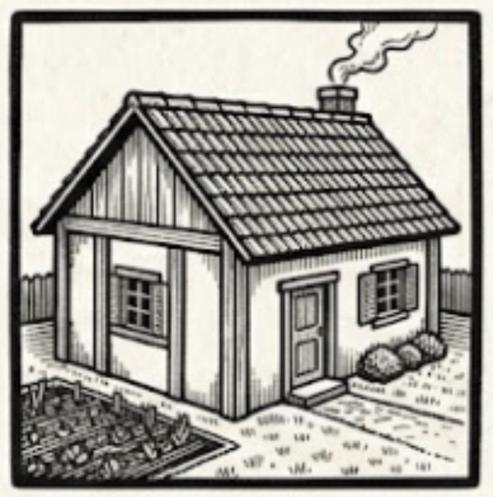
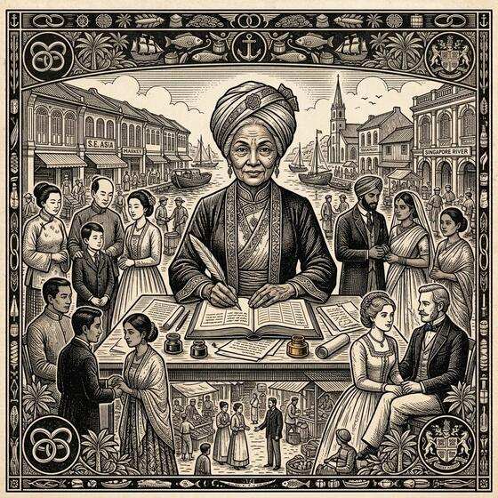

<!DOCTYPE html>
<html lang="en">
<head>
<meta charset="UTF-8">
<meta name="viewport" content="width=device-width, initial-scale=1.0">
<title>Survive 1840 — Singapore Survival Game</title>
<style>
  body { background: #3e2a1a; font-family: Georgia, serif; color: #3b2010; margin: 0; }
  .container { max-width: 780px; margin: 20px auto; padding: 20px; background: #f4e4c1; border-radius: 10px; box-shadow: 0 0 20px rgba(0,0,0,0.5); }
  h1, h2, h3 { text-align: center; }
  .stats { display: flex; gap: 10px; margin: 10px 0; flex-wrap: wrap; }
  .stat { flex: 1; min-width: 120px; background: #efd9a7; padding: 8px; border-radius: 5px; border: 1px solid #b79b6e; }
  .bar { height: 12px; background: #ccc; border-radius: 5px; overflow: hidden; margin-top: 4px; }
  .bar-inner { height: 100%; background: #8b5a2b; }
  .button { display: inline-block; padding: 8px 12px; margin: 4px; background: #8b5a2b; color: #fff; border: none; border-radius: 5px; cursor: pointer; }
  .button:hover { background: #6b4226; }
  .button:disabled { background: #aaa; cursor: default; }
  .choice-grid { display: flex; flex-wrap: wrap; gap: 8px; margin: 8px 0; }
  .choice { padding: 10px; border: 2px solid #b79b6e; border-radius: 8px; background: #fff8e7; cursor: pointer; max-width: 150px; text-align: center; }
  .choice.selected { border-color: #8b5a2b; background: #e8d5a8; }
  .choice-thumb { display: block; width: 100%; height: auto; border-radius: 4px; margin-bottom: 6px; border: 1px solid #b79b6e; }
  .job-thumb { display: inline-block; width: 34px; height: 34px; object-fit: cover; border-radius: 4px; vertical-align: middle; margin-right: 8px; border: 1px solid #b79b6e; }
  .property-illustration { display: block; width: 100%; max-width: 220px; margin: 8px 0; border-radius: 8px; border: 1px solid #b79b6e; box-shadow: 0 2px 10px rgba(0,0,0,0.25); }
  .ending-illustration { display: block; width: 100%; max-width: 500px; margin: 10px auto; border-radius: 8px; border: 1px solid #b79b6e; box-shadow: 0 2px 10px rgba(0,0,0,0.35); }
  .log { background: #fff; padding: 10px; border-left: 4px solid #8b5a2b; margin: 8px 0; border-radius: 4px; }
  .fact { background: #e8d5a8; border: 1px solid #b79b6e; padding: 12px; border-radius: 8px; margin-top: 10px; }
  .fact button { display: block; width: 100%; margin: 5px 0; text-align: left; }
  .section-title { font-weight: bold; margin-top: 12px; }
  .avatar { font-size: 48px; text-align: center; }
  input, select, textarea { width: 100%; padding: 6px; margin: 6px 0; border: 1px solid #b79b6e; border-radius: 4px; font-size: 14px; }
  label { font-weight: bold; }
  table { width: 100%; border-collapse: collapse; margin-top: 10px; }
  td, th { border: 1px solid #b79b6e; padding: 6px; }
  .muted { color: #6a5a48; font-size: 13px; }
  .row {
    display: grid;
    grid-template-columns: 1fr 1fr;
    gap: 16px;
  }
  @media (max-width: 720px) {
    .row { grid-template-columns: 1fr; }
  }
  .avatar-grid { display: flex; flex-wrap: wrap; gap: 8px; margin: 6px 0 10px; }
  .avatar-choice {
    display: flex; flex-direction: column; align-items: center; gap: 4px;
    width: 78px; padding: 6px 4px; border: 2px solid #b79b6e; border-radius: 8px;
    background: #fff8e7; cursor: pointer; text-align: center;
  }
  .avatar-choice svg { display: block; border-radius: 50%; }
  .avatar-choice.selected { border-color: #8b5a2b; background: #e8d5a8; }
  .avatar-label { font-size: 10.5px; line-height: 1.15; color: #6a5a48; }
  .trait-grid { display: flex; flex-wrap: wrap; gap: 8px; margin: 6px 0 10px; }
  .trait-choice { flex: 1 1 220px; padding: 9px 11px; border: 2px solid #b79b6e; border-radius: 8px; background: #fff8e7; cursor: pointer; }
  .trait-choice.selected { border-color: #8b5a2b; background: #e8d5a8; }
  .trait-name { font-weight: bold; }
  .trait-desc { font-size: 12.5px; color: #6a5a48; margin-top: 2px; }
</style>
</head>
<body>
<div id="app" class="container"></div>
<script>
/* =========================
   DATA
========================= */
const STATUS_RANK = { low: 0, "medium-low": 1, medium: 2, "medium-high": 3, high: 4 };
const STATUS_KEYS = ["low", "medium-low", "medium", "medium-high", "high"];
const STATUS_DISPLAY = { low: "Low", "medium-low": "Medium-Low", medium: "Medium", "medium-high": "Medium-High", high: "High" };

const RACES = {
  Chinese: { wealth: 55, health: 60 },
  Indian: { wealth: 58, health: 55 },
  Malay: { wealth: 60, health: 70 },
  Eurasian: { wealth: 80, health: 65 }
};

const TRAITS = {
  "Hard-working": { wealth: 0, health: 0, desc: "Earns a $4-10 bonus on Low and Medium-low tier jobs." },
  "Silver-spoon": { wealth: 30, health: -15, desc: "+$30 starting wealth, -15 starting health. Earns an extra $10 on Medium-high or High tier jobs." },
  "Lucky charm": { wealth: 0, health: 0, desc: "50% chance to dodge any negative random event." },
  "Strong-body": { wealth: 0, health: 25, desc: "+25 starting health. Required to qualify for certain physically demanding roles." },
  "Quick Learner": { wealth: 0, health: 0, desc: "All education costs 25% less." },
  "Frugal": { wealth: 0, health: 0, desc: "Food and lodging cost 20% less." },
  "Charismatic": { wealth: 0, health: 0, desc: "Will almost always find work." },
  "Iron Will": { wealth: 0, health: 0, desc: "Half as likely to develop an opium or gambling addiction." }
};

/* =========================
   PROLOGUE
   Three race-specific screens shown before Turn 1 (gated behind the
   "prologue" feature flag, default "beta" — see DEFAULT_FLAGS). Screen 1
   is pure flavor (state.prologueReason, no mechanical effect). Screen 2
   sets a real starting condition — Passage Debt — via one of two named
   choices; Chinese and Indian migrants are framed around the historical
   credit-ticket / kangany systems, Malay migration (often shorter,
   regional, less commonly under formal bondage) gets a smaller debt
   range, and Eurasian characters — typically already Straits-born
   families rather than overseas migrants — get a debt-free version of
   the same choice, framed around family capital instead.
========================= */
const PROLOGUE_REASONS = {
  Chinese: {
    intro: "Word had spread through your village in Fujian of opportunity across the sea. Poverty, overcrowding, and the upheavals of a restless empire had made staying home an increasingly desperate proposition.",
    options: [
      { id: "famine", label: "Failed harvests left your family with little to eat." },
      { id: "debt", label: "A moneylender's debt back home grew faster than you could repay it." },
      { id: "ambition", label: "You'd heard of men who left with nothing and returned rich." }
    ]
  },
  Indian: {
    intro: "Recruiters — kanganies — had come through your district promising steady wages across the sea, in a British colony called Singapore. For many, indentured passage was the only visible way out of rural poverty.",
    options: [
      { id: "poverty", label: "Drought and debt had left your family's land worth less than the loans against it." },
      { id: "recruiter", label: "A kangany's promises of steady wages were hard to refuse." },
      { id: "family", label: "Word came that a cousin had gone before you and was doing well." }
    ]
  },
  Malay: {
    intro: "Singapore's growing port has drawn people from across the archipelago — from Sumatra, from Riau, from the Peninsula — chasing trade, work, and the opportunities of a young colonial town.",
    options: [
      { id: "trade", label: "You came seeking work in a port that never seemed to stop growing." },
      { id: "displacement", label: "Troubles at home made the journey seem worth the risk." },
      { id: "opportunity", label: "Stories of Singapore's fortunes had reached even your kampong." }
    ]
  },
  Eurasian: {
    intro: "Your family has long called the Straits Settlements home — Malacca, Penang, or Singapore itself. As the colony's fortunes rise, so might yours, if you seize the moment.",
    options: [
      { id: "family_business", label: "Your family hopes to expand its trading connections here." },
      { id: "fresh_start", label: "You wanted to make your own way, apart from your family's name." },
      { id: "opportunity", label: "Singapore's growth seemed too promising to ignore." }
    ]
  }
};

const PROLOGUE_PASSAGE = {
  Chinese: {
    title: "The Passage",
    text: "Passage to Singapore isn't free, and you don't have much. Many migrants travel under the credit-ticket system — a broker pays your fare, and you repay the debt out of your wages once you arrive.",
    optionA: { label: "Travel in the crowded hold, and take on a smaller debt", debt: 30, wealth: 0, flavor: "You endure a hard, cramped voyage, but the broker's claim on you is modest." },
    optionB: { label: "Let the broker cover a better passage — for a larger debt", debt: 60, wealth: 15, flavor: "The voyage is a little more bearable, and the broker even spots you some coin to start — but you'll owe more for it." }
  },
  Indian: {
    title: "The Passage",
    text: "The kangany who recruited you offers to arrange your passage — for a price you'll pay back out of your first wages in Singapore, a common arrangement under the indenture system.",
    optionA: { label: "Accept only what you need, minimizing the kangany's claim", debt: 30, wealth: 0, flavor: "You keep the arrangement as small as you can, whatever the discomfort of the voyage." },
    optionB: { label: "Let the kangany cover more, arriving with a little in hand", debt: 60, wealth: 15, flavor: "You arrive better provisioned, but owing more to the man who brought you here." }
  },
  Malay: {
    title: "The Passage",
    text: "The journey to Singapore is shorter than what many others face, and passage is easier to arrange without falling into serious debt — though a loan against your first wages is still common.",
    optionA: { label: "Travel simply, owing as little as possible", debt: 10, wealth: 0, flavor: "A modest journey, and a modest debt to match." },
    optionB: { label: "Borrow a bit more for a smoother journey and a head start", debt: 25, wealth: 8, flavor: "A more comfortable trip, and a little extra coin in your pocket on arrival." }
  },
  Eurasian: {
    title: "Coming to Singapore",
    text: "Your family isn't sending you empty-handed, but how much they can spare — and what strings come attached — is still a choice.",
    optionA: { label: "Travel modestly, keeping the family's goodwill", debt: 0, wealth: 0, socialCapital: 3, flavor: "You arrive without extra coin, but your family's name still opens doors." },
    optionB: { label: "Ask for more up front, even if it means owing a favor later", debt: 0, wealth: 15, socialCapital: 0, flavor: "You arrive better funded, though you'll feel obliged to prove it was worth it." }
  }
};

/* =========================
   FAMILY
   Marriage is a real choice with a real (race-dependent) chance of
   failure, not a guaranteed life event — 1840s Chinese and Indian
   migration in particular skewed heavily male ("bachelor societies"),
   so those communities get a lower match-success chance here, while
   Malay and Eurasian communities (more balanced, more settled) get a
   better one. Once married, a spouse is a real (if modest) economic
   partner: a small recurring income, offset by a small recurring food
   surcharge that grows with each child. Ending narration branches on
   whether marriage actually happened in this run — see getFamilyClause.
========================= */
const MARRIAGE_MIN_TURN = 10;
const MARRIAGE_COST = 30;
const MARRIAGE_SUCCESS_CHANCE = { Chinese: 0.4, Indian: 0.4, Malay: 0.7, Eurasian: 0.7 };
const MAX_CHILDREN = 3;
const CHILD_CHANCE_PER_TURN = 0.08;
const SPOUSE_INCOME_MIN = 3;
const SPOUSE_INCOME_MAX = 8;
const FAMILY_FOOD_SURCHARGE_MARRIED = 2;
const FAMILY_FOOD_SURCHARGE_PER_CHILD = 1;
const SPOUSE_ILLNESS_CHANCE = 0.03; // per turn, only once married

/* =========================
   LOAN SHARKS (v2.18, beta-gated — see "loanshark" feature flag)
   Deliberately the opposite of Passage Debt: voluntary, repeatable, and
   dangerous if ignored, rather than one-time and self-resolving. A player
   can go to a loan shark any time from the Other Activities panel for
   fast cash at a flat, non-scaling interest rate (see LOAN_SHARK_INTEREST_RATE
   — timesBorrowed deliberately does NOT raise the rate; kept simple by design).
   Unlike Passage Debt there is no automatic wage garnish — repayment is a
   manual, voluntary action, which is exactly what makes leaving it
   outstanding tempting and dangerous. Interest compounds every turn
   (worked or not) in applyLoanSharkTurn(), called from localTurn().

   Consecutive turns with a nonzero balance (turnsOverdue) escalate:
     1-2 turns overdue  -> flavor-only warning, no mechanical cost
     3-5 turns overdue  -> a forced "roughed up" cost every such turn
     6+ turns overdue   -> forced buyout: a secret society clears the debt
                            in exchange for coerced membership. This counts
                            toward crackdownCount/Deported eligibility (by
                            design — see scoping discussion), and there is
                            NO cap on how many times this cycle can repeat
                            in one run; repeated coercion is the intended
                            late-game trap for a player who keeps borrowing.
========================= */
const LOAN_SHARK_TIERS = [30, 75, 150];
const LOAN_SHARK_PRINCIPAL_CAP = 300; // can't take a new loan that would push principal above this
const LOAN_SHARK_INTEREST_RATE = 0.10; // flat, per turn, does not scale with timesBorrowed
const LOAN_SHARK_EVENT_TURNS = 3; // turnsOverdue at which "roughed up" consequences begin
const LOAN_SHARK_BUYOUT_TURNS = 6; // turnsOverdue at which forced society buyout triggers
const LOAN_SHARK_BUYOUT_SC_LOSS = 15;

function getFamilyClause(s) {
  if (s.married && s.numChildren > 0) {
    return "You marry, and your household grows to include " + s.numChildren + " child" + (s.numChildren === 1 ? "" : "ren") + ".";
  }
  if (s.married) {
    return "You marry, building a household of your own.";
  }
  return "Like many migrants of your generation — especially in a community with far more men than women — you never marry, building your life alone or among found family instead.";
}

// Called once per turn (from both the no-work and employed paths) once
// married: spousal income, the food surcharge's growth via new
// children, and a rare, purely financial spouse-illness setback. Kept
// deliberately light — no bereavement/loss mechanic here; a spouse
// falling ill is a cost to manage, not a story the game tells for you.
function applyFamilyTurn(s, logs) {
  if (!s.married) return;
  const income = randInt(SPOUSE_INCOME_MIN, SPOUSE_INCOME_MAX);
  s.wealth += income;
  logs.push("Your spouse's earnings add $" + income + " to the household.");

  if (s.numChildren < MAX_CHILDREN && Math.random() < CHILD_CHANCE_PER_TURN) {
    s.numChildren += 1;
    s.socialCapital = (s.socialCapital || 0) + 2;
    logs.push("Your family grows — you now have " + s.numChildren + " child" + (s.numChildren === 1 ? "" : "ren") + " (+2 Social Capital).");
  }

  if (Math.random() < SPOUSE_ILLNESS_CHANCE) {
    const cost = randInt(15, 35);
    s.wealth -= cost;
    logs.push("Your spouse falls ill — treatment costs $" + cost + ".");
  }
}


const FOODS = {
  feast: { id: "feast", name: "Feast", cost: 15, health: 8 },
  normal: { id: "normal", name: "Normal Meal", cost: 8, health: 3 },
  meagre: { id: "meagre", name: "Meagre Meal", cost: 3, health: -2 },
  starve: { id: "starve", name: "Starve", cost: 0, health: -10 }
};
const FOOD_ILLUSTRATIONS = {
  feast: "food-feast.jpg",
  normal: "food-normal.jpg",
  meagre: "food-meagre.jpg",
  starve: "food-starve.jpg"
};

const LODGINGS = {
  street: { id: "street", name: "Sleep on Street", cost: 0, health: -5, risk: 0.3 },
  shed: { id: "shed", name: "Coolie Shed", cost: 5, health: 0, risk: 0.1 },
  boarding: { id: "boarding", name: "Boarding House", cost: 12, health: 3, risk: 0 },
  proper_room: { id: "proper_room", name: "Proper Room", cost: 25, health: 7, risk: -0.1, minStatus: "medium" },
  // Only offered in the first KONGSI_LODGING_TURN_LIMIT turns — real clan
  // associations and kongsi houses existed specifically to receive new
  // arrivals, so this models an authentic (if brief) safety net rather
  // than a generic difficulty knob. Cheaper and safer than Coolie Shed,
  // but deliberately not free or risk-free — the hardship is real, just
  // not immediate and total.
  kongsi: { id: "kongsi", name: "Kongsi Lodgehouse (new arrivals)", cost: 2, health: 2, risk: 0.05 }
};
const LODGING_ILLUSTRATIONS = {
  street: "lodging-street.jpg",
  shed: "lodging-shed.jpg",
  boarding: "lodging-boarding.jpg",
  proper_room: "lodging-proper.jpg",
  kongsi: "lodging-kongsi.jpg"
};
const KONGSI_LODGING_TURN_LIMIT = 2;

// Home ownership: a reward for players who reach real success, not a
// starter option. Buying replaces the per-turn lodging cost with a small
// flat maintenance fee, better health/risk than even a Proper Room, and a
// passive trickle of Social Capital (a homeowner is a known quantity in
// the neighbourhood). The purchase/resale price floats with a shared
// property market that drifts slowly upward (the colony is growing) and
// reacts to the same events already driving the rest of the simulation.
const PROPERTY_BASE_PRICE = 450;
const PROPERTY_MIN_PRICE = 300;
const PROPERTY_MAX_PRICE = 900;
const PROPERTY_APPRECIATION = 1.004; // ~0.4%/turn baseline drift — the settlement is growing
const PROPERTY_SC_REQUIREMENT = 25;
const PROPERTY_MIN_STATUS_RANK = 2; // "medium" or above
const PROPERTY_CASH_CUSHION = 200; // must retain at least this much after buying
const PROPERTY_SELL_RATE = 0.7; // resale friction/fees — you never get the full ask back
const PROPERTY_MAINTENANCE = 3;
const PROPERTY_OWNER_HEALTH = 6;
const PROPERTY_OWNER_RISK = -0.15; // best in the game — no landlord, no shared risk

// The 40 turns map onto real calendar time: 1840-1849, four turns (quarters)
// per year, so turn 40 completes in 1849 (matching the survival ending).
// This lets us tie seasonal weather and historical moments to real years.
// The core story runs 40 turns (1840–1849). Once a player reaches that
// natural end and their score is recorded, they can optionally keep
// playing purely for fun, up to turn 99 — unranked, nothing further is
// ever submitted to the leaderboard for that run.
const EPILOGUE_TURN_CAP = 99;
const CORE_TURN_CAP = 40;
function getTurnCap(s) {
  return s.continuedPastEnd ? EPILOGUE_TURN_CAP : CORE_TURN_CAP;
}

function getGameYear(turn) {
  const t = Math.max(turn, 1);
  return 1840 + Math.floor((t - 1) / 4);
}
function getGameQuarter(turn) {
  const t = Math.max(turn, 1);
  return ((t - 1) % 4) + 1; // 1 = Jan-Mar, 2 = Apr-Jun, 3 = Jul-Sep, 4 = Oct-Dec
}
// Singapore's Northeast Monsoon brings the heaviest rain and flood risk
// roughly November through March — spanning the turn of the year, i.e.
// quarter 4 (Oct-Dec onset) and quarter 1 (Jan-Mar peak) of the calendar.
function isMonsoonSeason(turn) {
  const q = getGameQuarter(turn);
  return q === 4 || q === 1;
}

const EDUCATION_OPTIONS = [
  { id: "teaching_certificate", name: "Teaching Certificate", cost: 100 },
  { id: "university_education", name: "University Education", cost: 200 },
  { id: "pharmacy_education", name: "Pharmacy Education", cost: 200 },
  { id: "medicine_education", name: "Medicine Education", cost: 350 }
];

const JOBS = [
  { id: "coolie", name: "Coolie / Day Labourer", icon: "🚧", minStatus: "low", payMin: 8, payMax: 12, healthLossMax: 4, society: false, bonus: 0 },
  { id: "shipyard", name: "Shipyard Worker", icon: "⚓", minStatus: "low", payMin: 12, payMax: 16, healthLossMin: 1, healthLossMax: 6, society: false, bonus: 0 },
  { id: "rickshaw", name: "Rickshaw Puller", icon: "🛺", minStatus: "low", payMin: 10, payMax: 14, healthLossMin: 1, healthLossMax: 6, society: false, bonus: 0 },
  { id: "washer", name: "Clothes Washer", icon: "🧼", minStatus: "low", payMin: 6, payMax: 9, healthLossMax: 2, society: false, bonus: 0 },
  { id: "night_soil", name: "Night Soil Collector", icon: "🪣", minStatus: "low", payMin: 14, payMax: 18, healthLossMin: 2, healthLossMax: 8, society: false, bonus: 0 },
  { id: "volunteer_firefighter", name: "Volunteer Firefighter", icon: "🧯", minStatus: "low", payMin: 8, payMax: 12, healthLossMin: 1, healthLossMax: 6, society: false, bonus: 0 },
  { id: "fisherman", name: "Fisherman", icon: "🎣", minStatus: "low", payMin: 8, payMax: 13, healthLossMax: 4, society: false, bonus: 0 },
  { id: "bumboat_operator", name: "Bumboat Operator", icon: "⛵", minStatus: "low", payMin: 11, payMax: 16, healthLossMin: 1, healthLossMax: 5, society: false, bonus: 0 },

  { id: "street_hawker", name: "Street Hawker", icon: "🍜", minStatus: "medium-low", payMin: 15, payMax: 20, healthLossMax: 3, society: false, bonus: 0 },
  { id: "postman", name: "Postman", icon: "✉️", minStatus: "medium-low", payMin: 16, payMax: 20, healthLossMax: 3, society: false, bonus: 0 },
  { id: "farm_hand", name: "Farm Hand", icon: "🌾", minStatus: "medium-low", payMin: 10, payMax: 15, healthLossMax: 3, society: false, bonus: 0 },
  { id: "nanny", name: "Nanny", icon: "👶", minStatus: "medium-low", payMin: 12, payMax: 16, healthLossMax: 2, society: false, bonus: 2 },
  { id: "secret_society_enforcer", name: "Secret Society Enforcer", icon: "🗡️", minStatus: "medium-low", payMin: 22, payMax: 30, healthLossMax: 6, society: true, bonus: 0 },
  { id: "tailor", name: "Tailor", icon: "🧵", minStatus: "medium-low", payMin: 14, payMax: 19, healthLossMax: 2, society: false, bonus: 0 },

  { id: "goods_hawker", name: "Goods Hawker", icon: "🛍️", minStatus: "medium", payMin: 20, payMax: 26, healthLossMax: 3, society: false, bonus: 5 },
  { id: "shop_assistant", name: "Shop Assistant", icon: "🏪", minStatus: "medium", payMin: 18, payMax: 23, healthLossMax: 2, society: false, bonus: 0 },
  { id: "trader", name: "Trader", icon: "📦", minStatus: "medium", payMin: 22, payMax: 30, healthLossMax: 3, society: false, bonus: 6 },
  { id: "farm_coowner", name: "Farm Co-owner", icon: "🚜", minStatus: "medium", payMin: 30, payMax: 38, healthLossMax: 3, society: false, bonus: 8 },
  { id: "post_office_worker", name: "Post Office Worker", icon: "📬", minStatus: "medium", payMin: 20, payMax: 25, healthLossMax: 2, society: false, bonus: 0 },
  { id: "police_officer", name: "Police Officer", icon: "👮", minStatus: "medium", payMin: 28, payMax: 35, healthLossMax: 5, society: false, bonus: 4 },
  { id: "fire_fighter", name: "Fire Fighter", icon: "🧑‍🚒", minStatus: "medium", payMin: 30, payMax: 40, healthLossMax: 6, society: false, bonus: 6 },
  { id: "teacher", name: "Teacher", icon: "📚", minStatus: "medium", payMin: 30, payMax: 38, healthLossMax: 3, society: false, bonus: 2 },
  { id: "secret_society_manager", name: "Secret Society Manager", icon: "👹", minStatus: "medium", payMin: 35, payMax: 45, healthLossMax: 6, society: true, bonus: 6 },
  { id: "clerk", name: "Clerk", icon: "📋", minStatus: "medium", payMin: 22, payMax: 28, healthLossMax: 1, society: false, bonus: 0 },
  { id: "herbalist_apprentice", name: "Herbalist's Apprentice", icon: "🍃", minStatus: "medium", payMin: 18, payMax: 24, healthLossMax: 2, society: false, bonus: 0 },
  { id: "coffeeshop_operator", name: "Coffeeshop Operator", icon: "☕", minStatus: "medium", payMin: 24, payMax: 30, healthLossMax: 3, society: false, bonus: 5 },

  { id: "pharmacist", name: "Pharmacist", icon: "💊", minStatus: "medium-high", payMin: 63, payMax: 70, healthLossMax: 2, society: false, bonus: 0 },
  { id: "nurse", name: "Nurse", icon: "💉", minStatus: "medium-high", payMin: 32, payMax: 40, healthLossMax: 3, society: false, bonus: 4 },
  { id: "hospital_worker", name: "Hospital Worker", icon: "🏥", minStatus: "medium-high", payMin: 28, payMax: 35, healthLossMax: 3, society: false, bonus: 0 },
  { id: "doctor_assistant", name: "Doctor's Assistant", icon: "🩺", minStatus: "medium-high", payMin: 35, payMax: 42, healthLossMax: 3, society: false, bonus: 5 },
  { id: "trader_advanced", name: "Advanced Trader", icon: "📈", minStatus: "medium-high", payMin: 40, payMax: 50, healthLossMax: 3, society: false, bonus: 8 },
  { id: "shop_owner", name: "Shop Owner", icon: "🏬", minStatus: "medium-high", payMin: 45, payMax: 55, healthLossMax: 3, society: false, bonus: 10 },
  { id: "farm_owner", name: "Farm Owner", icon: "🌱", minStatus: "medium-high", payMin: 50, payMax: 60, healthLossMax: 3, society: false, bonus: 10 },
  { id: "post_office_manager", name: "Post Office Manager", icon: "🗃️", minStatus: "medium-high", payMin: 45, payMax: 52, healthLossMax: 2, society: false, bonus: 6 },
  { id: "police_constable", name: "Police Constable", icon: "👮‍♂️", minStatus: "medium-high", payMin: 45, payMax: 52, healthLossMax: 5, society: false, bonus: 6 },
  { id: "senior_fire_fighter", name: "Senior Fire Fighter", icon: "🚒", minStatus: "medium-high", payMin: 40, payMax: 50, healthLossMax: 4, society: false, bonus: 5 },
  { id: "university_lecturer", name: "University Lecturer", icon: "🎓", minStatus: "medium-high", payMin: 55, payMax: 65, healthLossMax: 3, society: false, bonus: 5 },
  { id: "secret_society_associate", name: "Secret Society Associate", icon: "🕴️", minStatus: "medium-high", payMin: 50, payMax: 60, healthLossMax: 6, society: true, bonus: 8 },
  { id: "harbour_pilot", name: "Harbour Pilot", icon: "🧭", minStatus: "medium-high", payMin: 48, payMax: 58, healthLossMax: 3, society: false, bonus: 4 },
  { id: "restaurant_owner", name: "Restaurant Owner", icon: "🍽️", minStatus: "medium-high", payMin: 48, payMax: 58, healthLossMax: 2, society: false, bonus: 10 },

  { id: "business_man", name: "Business Man", icon: "🤵", minStatus: "high", payMin: 70, payMax: 85, healthLossMax: 4, society: false, bonus: 10 },
  { id: "doctor", name: "Doctor", icon: "🧑‍⚕️", minStatus: "high", payMin: 100, payMax: 120, healthLossMax: 2, society: false, bonus: 0 },
  { id: "hospital_manager", name: "Hospital Manager", icon: "🏨", minStatus: "high", payMin: 65, payMax: 75, healthLossMax: 3, society: false, bonus: 8 },
  { id: "farm_magnate", name: "Farm Magnate", icon: "🌿", minStatus: "high", payMin: 70, payMax: 85, healthLossMax: 3, society: false, bonus: 8 },
  { id: "secret_society_head", name: "Secret Society Head", icon: "👑", minStatus: "high", payMin: 90, payMax: 110, healthLossMax: 6, society: true, bonus: 10 },
  { id: "professor", name: "Professor", icon: "🧑‍🏫", minStatus: "high", payMin: 90, payMax: 105, healthLossMax: 2, society: false, bonus: 10 },
  { id: "fire_chief", name: "Fire Chief", icon: "🔥", minStatus: "high", payMin: 60, payMax: 75, healthLossMax: 5, society: false, bonus: 6 },
  { id: "police_chief", name: "Police Chief", icon: "🚔", minStatus: "high", payMin: 70, payMax: 85, healthLossMax: 4, society: false, bonus: 6 },
  { id: "chief_apothecary", name: "Chief Apothecary", icon: "⚗️", minStatus: "high", payMin: 85, payMax: 100, healthLossMax: 2, society: false, bonus: 8 },
  { id: "restaurateur", name: "Restaurateur", icon: "🥂", minStatus: "high", payMin: 70, payMax: 85, healthLossMax: 2, society: false, bonus: 10 },
  { id: "postmaster", name: "Postmaster", icon: "📮", minStatus: "high", payMin: 65, payMax: 80, healthLossMax: 2, society: false, bonus: 6 }
];

// Job illustrations are shared across an entire job ladder/family rather
// than one-per-job — the art depicts the trade in general, not a specific
// rank within it, so e.g. every rung of the medicine ladder (matching
// MEDICINE_JOB_IDS exactly) points at the same file. Looked up in
// renderJobSelect() via JOB_ILLUSTRATIONS[job.id]. As of v2.20 every job
// in JOBS has an entry here — a job.id with no thumbnail would just mean
// a future job was added without matching art (same graceful
// degradation as FOOD_ILLUSTRATIONS/LODGING_ILLUSTRATIONS: no thumbnail,
// not a broken image).
const JOB_ILLUSTRATIONS = {
  coolie: "job-coolie-labour.jpg",
  shipyard: "job-coolie-labour.jpg",
  rickshaw: "job-coolie-labour.jpg",
  night_soil: "job-coolie-labour.jpg",

  volunteer_firefighter: "job-firefighter.jpg",
  fire_fighter: "job-firefighter.jpg",
  senior_fire_fighter: "job-firefighter.jpg",
  fire_chief: "job-firefighter.jpg",

  police_officer: "job-police.jpg",
  police_constable: "job-police.jpg",
  police_chief: "job-police.jpg",

  secret_society_enforcer: "job-secret-society.jpg",
  secret_society_manager: "job-secret-society.jpg",
  secret_society_associate: "job-secret-society.jpg",
  secret_society_head: "job-secret-society.jpg",

  nanny: "job-nanny-education.jpg",
  teacher: "job-nanny-education.jpg",
  university_lecturer: "job-nanny-education.jpg",
  professor: "job-nanny-education.jpg",

  farm_hand: "job-farm.jpg",
  farm_coowner: "job-farm.jpg",
  farm_owner: "job-farm.jpg",
  farm_magnate: "job-farm.jpg",

  postman: "job-postman.jpg",
  post_office_worker: "job-postman.jpg",
  post_office_manager: "job-postman.jpg",
  postmaster: "job-postman.jpg",

  street_hawker: "job-hawker.jpg",
  goods_hawker: "job-hawker.jpg",

  nurse: "job-medicine.jpg",
  hospital_worker: "job-medicine.jpg",
  doctor_assistant: "job-medicine.jpg",
  doctor: "job-medicine.jpg",
  hospital_manager: "job-medicine.jpg",
  pharmacist: "job-medicine.jpg",
  herbalist_apprentice: "job-medicine.jpg",
  chief_apothecary: "job-medicine.jpg",

  fisherman: "job-maritime.jpg",
  bumboat_operator: "job-maritime.jpg",
  harbour_pilot: "job-maritime.jpg",

  shop_assistant: "job-commerce.jpg",
  shop_owner: "job-commerce.jpg",
  trader: "job-commerce.jpg",
  trader_advanced: "job-commerce.jpg",
  business_man: "job-commerce.jpg",
  clerk: "job-commerce.jpg",

  coffeeshop_operator: "job-food-drink.jpg",
  restaurant_owner: "job-food-drink.jpg",
  restaurateur: "job-food-drink.jpg",

  washer: "job-domestic.jpg",
  tailor: "job-domestic.jpg"
};

// Social Capital gating: trust-facing and community-leadership roles require
// a minimum Social Capital in addition to their existing prerequisites.
// See SOCIAL_CAPITAL_REQUIREMENT below for the exact thresholds — kept as a
// separate lookup so JOB_PREREQ and JOB_PROGRESS_TEXT can both reference it.
const SOCIAL_CAPITAL_REQUIREMENT = {
  police_officer: 10,
  nurse: 10,
  teacher: 15,
  post_office_manager: 15,
  police_constable: 20,
  university_lecturer: 20,
  business_man: 20,
  chief_apothecary: 20,
  restaurateur: 20,
  doctor: 25,
  hospital_manager: 25,
  fire_chief: 25,
  police_chief: 25,
  postmaster: 25,
  professor: 35
};
function hasSocialCapital(s, jobId) {
  const req = SOCIAL_CAPITAL_REQUIREMENT[jobId];
  return req === undefined || (s.socialCapital || 0) >= req;
}

const JOB_PREREQ = {
  secret_society_enforcer: s => s.society.member,
  secret_society_manager: s => s.society.member && (s.jobTurns["secret_society_enforcer"] || 0) >= 3,
  secret_society_associate: s => s.society.member && (s.jobTurns["secret_society_manager"] || 0) >= 3,
  secret_society_head: s => s.society.member && (s.jobTurns["secret_society_associate"] || 0) >= 3 && s.socialStatus === "high",
  goods_hawker: s => (s.jobTurns["street_hawker"] || 0) >= 3,
  trader: s => (s.jobTurns["shop_assistant"] || 0) >= 3 || (s.jobTurns["street_hawker"] || 0) >= 3,
  coffeeshop_operator: s => (s.jobTurns["street_hawker"] || 0) >= 3 || (s.jobTurns["goods_hawker"] || 0) >= 3,
  farm_coowner: s => (s.jobTurns["farm_hand"] || 0) >= 5,
  police_officer: s => s.health > 100 && hasSocialCapital(s, "police_officer"),
  volunteer_firefighter: s => s.trait === "Strong-body",
  fire_fighter: s => s.health > 100 && s.trait === "Strong-body" && (s.jobTurns["volunteer_firefighter"] || 0) >= 3,
  teacher: s => (s.jobTurns["nanny"] || 0) >= 3 && s.education.includes("teaching_certificate") && hasSocialCapital(s, "teacher"),
  pharmacist: s => s.education.includes("pharmacy_education") && (s.jobTurns["herbalist_apprentice"] || 0) >= 3,
  nurse: s => s.health > 80 && hasSocialCapital(s, "nurse"),
  doctor_assistant: s => (s.jobTurns["nurse"] || 0) >= 1 || (s.jobTurns["hospital_worker"] || 0) >= 1,
  trader_advanced: s => (s.jobTurns["trader"] || 0) >= 5,
  shop_owner: s => (s.jobTurns["shop_assistant"] || 0) >= 5 && (s.wealth > 200 || (s.jobTurns["shop_owner"] || 0) >= 1),
  farm_owner: s => (s.jobTurns["farm_coowner"] || 0) >= 5 && (s.wealth > 200 || (s.jobTurns["farm_owner"] || 0) >= 1),
  post_office_worker: s => (s.jobTurns["postman"] || 0) >= 3,
  post_office_manager: s => (s.jobTurns["post_office_worker"] || 0) >= 3 && hasSocialCapital(s, "post_office_manager"),
  police_constable: s => (s.jobTurns["police_officer"] || 0) >= 3 && s.health > 100 && hasSocialCapital(s, "police_constable"),
  senior_fire_fighter: s => (s.jobTurns["fire_fighter"] || 0) >= 5 && s.health > 100,
  university_lecturer: s => (s.jobTurns["teacher"] || 0) >= 3 && s.education.includes("university_education") && hasSocialCapital(s, "university_lecturer"),
  business_man: s => ((s.jobTurns["shop_owner"] || 0) >= 5 || (s.jobTurns["trader_advanced"] || 0) >= 5) && hasSocialCapital(s, "business_man"),
  doctor: s => s.education.includes("medicine_education") && (s.jobTurns["doctor_assistant"] || 0) >= 3 && hasSocialCapital(s, "doctor"),
  hospital_manager: s => (s.jobTurns["hospital_worker"] || 0) >= 3 && ((s.jobTurns["doctor"] || 0) >= 1 || (s.jobTurns["nurse"] || 0) >= 3) && hasSocialCapital(s, "hospital_manager"),
  farm_magnate: s => (s.jobTurns["farm_owner"] || 0) >= 5,
  professor: s => (s.jobTurns["university_lecturer"] || 0) >= 5 && hasSocialCapital(s, "professor"),
  fire_chief: s => (s.jobTurns["senior_fire_fighter"] || 0) >= 5 && s.health > 100 && hasSocialCapital(s, "fire_chief"),
  police_chief: s => (s.jobTurns["police_constable"] || 0) >= 5 && s.health > 100 && hasSocialCapital(s, "police_chief"),
  harbour_pilot: s => (s.jobTurns["shipyard"] || 0) >= 5 && s.health > 90,
  chief_apothecary: s => (s.jobTurns["pharmacist"] || 0) >= 5 && hasSocialCapital(s, "chief_apothecary"),
  restaurant_owner: s => (s.jobTurns["coffeeshop_operator"] || 0) >= 5 && (s.wealth > 200 || (s.jobTurns["restaurant_owner"] || 0) >= 1),
  restaurateur: s => (s.jobTurns["restaurant_owner"] || 0) >= 5 && hasSocialCapital(s, "restaurateur"),
  postmaster: s => (s.jobTurns["post_office_manager"] || 0) >= 5 && hasSocialCapital(s, "postmaster")
};

const POLICE_JOB_IDS = ["police_officer", "police_constable", "police_chief"];

// Social Capital earned per turn worked in trust-facing / community-serving
// occupations (teaching, medicine, postal service, and their senior tiers).
// Everything not listed here earns 0 Social Capital from the job itself.
const JOB_SOCIAL_CAPITAL = {
  nanny: 1,
  postman: 1,
  post_office_worker: 1,
  post_office_manager: 2,
  postmaster: 3,
  teacher: 2,
  university_lecturer: 2,
  professor: 3,
  nurse: 1,
  doctor_assistant: 1,
  doctor: 3,
  hospital_worker: 1,
  hospital_manager: 2,
  pharmacist: 1,
  herbalist_apprentice: 1,
  chief_apothecary: 2
};

// "New Immigrants Arrive" is no longer a random event — it fires on a fixed
// schedule (see triggerNewImmigrants), so it is intentionally NOT listed in
// EVENTS below.
const EVENTS = [
  { id: "illness", name: "Illness", weight: 10, negative: true },
  { id: "robbed", name: "Robbed", weight: 10, negative: true },
  { id: "found_money", name: "Found Money", weight: 8, negative: false },
  { id: "found_food", name: "Found Food", weight: 7, negative: false },
  { id: "food_poisoning", name: "Food Poisoning", weight: 6, negative: true },
  { id: "extra_work", name: "Extra Work", weight: 8, negative: false },
  { id: "opium", name: "Opium Offer", weight: 6, negative: false },
  { id: "gambling", name: "Gambling", weight: 6, negative: false },
  { id: "society_invite", name: "Secret Society Invitation", weight: 4, negative: false },
  { id: "monsoon", name: "Monsoon Flood", weight: 6, negative: true },
  { id: "epidemic", name: "Epidemic", weight: 5, negative: true },
  { id: "kind_stranger", name: "Kind Stranger", weight: 5, negative: false },
  { id: "lost_work", name: "Lost Wages", weight: 4, negative: true }
];

const SCHEDULED_IMMIGRANT_TURNS = [10, 18, 26];

const FACTS = [
  { id: "f1", emoji: "🚢", fact: "Many Chinese coolies came to Singapore under the credit-ticket system, borrowing money for passage and repaying through work.", question: "How did many Chinese coolies pay for their voyage?", choices: ["Credit-ticket system", "Government grants", "Slavery", "Free passage"], answer: 0 },
  { id: "f2", emoji: "🛡️", fact: "The Chinese Protectorate was established in 1877 to protect Chinese migrants from abuse.", question: "What was set up in 1877 to protect Chinese migrants?", choices: ["Chinese Protectorate", "Straits Settlements", "Singapore Harbour Board", "Coolie Association"], answer: 0 },
  { id: "f3", emoji: "⛓️", fact: "Indian convict labourers built many early roads and government buildings in Singapore.", question: "Who built many early roads and government buildings?", choices: ["Indian convict labourers", "Chinese merchants", "Malay fishermen", "European engineers"], answer: 0 },
  { id: "f4", emoji: "🌶️", fact: "Chinese coolies often worked on gambier and pepper plantations.", question: "What crops did Chinese coolies often work on?", choices: ["Gambier and pepper", "Rubber and oil palm", "Rice and sugar", "Tea and coffee"], answer: 0 },
  { id: "f5", emoji: "🧕", fact: "Samsui women were Chinese immigrant women known for wearing red headscarves and working in construction.", question: "Who were the Samsui women?", choices: ["Chinese immigrant construction workers", "Indian temple dancers", "Malay weavers", "Eurasian nurses"], answer: 0 },
  { id: "f6", emoji: "🛺", fact: "Rickshaws were hand-pulled two-wheeled carriages used for transport in 1800s Singapore.", question: "What were rickshaws?", choices: ["Hand-pulled carriages", "Motorised taxis", "Horse-drawn carts", "Boats"], answer: 0 },
  { id: "f7", emoji: "🏡", fact: "A kampung is a village or community settlement, often with houses on stilts.", question: "What is a kampung?", choices: ["A village settlement", "A type of boat", "A market", "A fort"], answer: 0 },
  { id: "f8", emoji: "🐄", fact: "Serangoon Road was known for Indian settlers, cattle trading, and later the Tekka area.", question: "Which area was known for Indian settlers and cattle trading?", choices: ["Serangoon", "Chinatown", "Katong", "Jurong"], answer: 0 },
  { id: "f9", emoji: "🛕", fact: "Telok Ayer was where early Chinese immigrants built temples such as Thian Hock Keng.", question: "Where did early Chinese immigrants build Thian Hock Keng?", choices: ["Telok Ayer", "Orchard Road", "Bugis", "Clarke Quay"], answer: 0 },
  { id: "f10", emoji: "🗡️", fact: "Secret societies controlled coolie labour and protected their members in exchange for loyalty.", question: "What role did secret societies play?", choices: ["Controlled coolie labour and protected members", "Built schools", "Ran the postal service", "Managed hospitals"], answer: 0 },
  { id: "f11", emoji: "💉", fact: "Opium was cheap and highly addictive, trapping many coolies in debt.", question: "Why was opium a problem for coolies?", choices: ["It was cheap and addictive", "It was a government medicine", "It made them stronger", "It was a form of tax"], answer: 0 },
  { id: "f12", emoji: "💰", fact: "Money-lenders and labour agents often trapped coolies in debt bondage.", question: "Who often trapped coolies in debt?", choices: ["Money-lenders and labour agents", "The British Army", "Temple priests", "Government officers"], answer: 0 },
  { id: "f13", emoji: "🦠", fact: "Cholera outbreaks were common in crowded coolie quarters with poor sanitation.", question: "What disease was common in crowded coolie quarters?", choices: ["Cholera", "Diabetes", "Smallpox", "Measles"], answer: 0 },
  { id: "f14", emoji: "🇬🇧", fact: "Sir Stamford Raffles founded modern Singapore in 1819 as a British trading post.", question: "Who founded modern Singapore in 1819?", choices: ["Sir Stamford Raffles", "James Brooke", "William Farquhar", "John Crawfurd"], answer: 0 },
  { id: "f15", emoji: "🎣", fact: "Malay communities in early Singapore were often involved in fishing and boat-building.", question: "What was a common occupation for Malays in early Singapore?", choices: ["Fishing", "Banking", "Mining", "Printing"], answer: 0 },
  { id: "f16", emoji: "📋", fact: "Many Eurasians worked as clerks, teachers, and engineers because of their English education.", question: "Many Eurasians worked as what in the 1800s?", choices: ["Clerks and teachers", "Coolies and labourers", "Pirates", "Farmers"], answer: 0 },
  { id: "f17", emoji: "⛵", fact: "The Singapore River was a busy port where bumboats loaded and unloaded goods.", question: "What was the Singapore River used for in the 1800s?", choices: ["A busy trading port", "A swimming pool", "A military base", "A fishing farm"], answer: 0 },
  { id: "f18", emoji: "🧯", fact: "Early firefighting in Singapore was done by volunteer brigades due to frequent fires in dense settlements.", question: "Early firefighters in Singapore were mostly...", choices: ["Volunteers", "British soldiers", "Chinese sailors", "Indian convicts"], answer: 0 },
  { id: "f19", emoji: "🌙", fact: "Night soil was human waste collected at night to be used as fertiliser.", question: "What was 'night soil'?", choices: ["Human waste collected at night", "A type of crop", "Night-time rain", "A kind of lantern"], answer: 0 },
  { id: "f20", emoji: "🏚️", fact: "Coolie depots were crowded housing where new immigrants stayed while waiting for work.", question: "What were coolie depots?", choices: ["Housing for waiting immigrants", "Warehouses for spices", "Government offices", "Temples"], answer: 0 },
  { id: "f21", emoji: "🏛️", fact: "The Hokkien Huay Kuan, a major clan association, was founded in 1840 to help Chinese immigrants.", question: "What was the Hokkien Huay Kuan?", choices: ["A clan association", "A temple", "A bank", "A school"], answer: 0 },
  { id: "f22", emoji: "👮", fact: "The first police force in Singapore was formed in 1819 with 12 men.", question: "How many men were in the first police force?", choices: ["12", "100", "5", "50"], answer: 0 },
  { id: "f23", emoji: "🚒", fact: "In 1869, the first fire engine reached Singapore; before that, volunteers used buckets.", question: "Before fire engines, how did volunteers fight fires?", choices: ["With buckets", "With guns", "With hoses", "With sand"], answer: 0 },
  { id: "f24", emoji: "🏥", fact: "Tan Tock Seng Hospital was founded in 1844 to care for the poor.", question: "Who founded Tan Tock Seng Hospital?", choices: ["Tan Tock Seng", "Raffles", "William Farquhar", "A British doctor"], answer: 0 },
  { id: "f25", emoji: "🛕", fact: "The Chettiar community built the Sri Thandayuthapani Temple in a South Indian style.", question: "The Chettiars came from where?", choices: ["South India", "China", "Arabia", "Java"], answer: 0 },
  { id: "f26", emoji: "🎭", fact: "Chinese opera performances were popular in 1800s Singapore, especially during festivals.", question: "What was popular during festivals?", choices: ["Chinese opera", "Football", "Ballet", "Cinema"], answer: 0 },
  { id: "f27", emoji: "🌶️", fact: "Gambier and pepper were among Singapore's earliest export crops.", question: "Which crops were early exports?", choices: ["Gambier and pepper", "Rubber and palm oil", "Rice and tea", "Cotton and silk"], answer: 0 },
  { id: "f28", emoji: "🐂", fact: "Before motor vehicles, bullock carts were a common way to move goods.", question: "What transported goods before motor vehicles?", choices: ["Bullock carts", "Trains", "Airplanes", "Ships with steam"], answer: 0 },
  { id: "f29", emoji: "⛽", fact: "The Kallang Gasworks opened in 1862 to light the streets with gas lamps.", question: "When did gas lighting start in Singapore?", choices: ["1862", "1901", "1819", "1945"], answer: 0 },
  { id: "f30", emoji: "🧵", fact: "Sewing and tailoring were common trades for the Hainanese community.", question: "Which community was known for tailoring?", choices: ["Hainanese", "Gujarati", "Punjabi", "Bugis"], answer: 0 },
  { id: "f31", emoji: "📰", fact: "The first newspaper, the Singapore Chronicle, was published weekly in 1824.", question: "What was the Singapore Chronicle?", choices: ["A newspaper", "A bank", "A school", "A ship"], answer: 0 },
  { id: "f32", emoji: "⚖️", fact: "The Chinese Protectorate was later led by William Pickering, who spoke Chinese dialects.", question: "Who led the Chinese Protectorate?", choices: ["William Pickering", "Stamford Raffles", "Tan Tock Seng", "John Crawfurd"], answer: 0 },
  { id: "f33", emoji: "🌏", fact: "Bugis traders sailed from Sulawesi to Singapore to trade spices and textiles.", question: "Where did Bugis traders come from?", choices: ["Sulawesi", "India", "China", "England"], answer: 0 },
  { id: "f34", emoji: "💂", fact: "Sikh policemen, known as 'Sikh police', were hired in the late 1800s to keep order.", question: "Who were hired as policemen in the late 1800s?", choices: ["Sikhs", "Eurasians", "Malays", "Japanese"], answer: 0 },
  { id: "f35", emoji: "🧺", fact: "Night soil was collected by coolies and sold as fertilizer for vegetable gardens.", question: "What was night soil used for?", choices: ["Fertilizer", "Medicine", "Food", "Fuel"], answer: 0 },
  { id: "f36", emoji: "🚢", fact: "The harbour at Keppel Harbour was a safe deep-water anchorage for trading ships.", question: "Why was Keppel Harbour important?", choices: ["Deep-water anchorage", "A tourist spot", "A fishing village", "A military base"], answer: 0 },
  { id: "f37", emoji: "💼", fact: "By the 1860s, many Chinese merchants in Singapore had become wealthy and donated to schools and temples.", question: "What did wealthy Chinese merchants donate to?", choices: ["Schools and temples", "Railways", "Hospitals", "Police stations"], answer: 0 },
  { id: "f38", emoji: "🏠", fact: "Early Malay houses were built on stilts to avoid floods and pests.", question: "Why were Malay houses built on stilts?", choices: ["Avoid floods and pests", "To be cooler", "To store boats", "To look taller"], answer: 0 },
  { id: "f39", emoji: "🧕", fact: "Nyonya culture emerged from intermarriage between Chinese men and Malay women.", question: "Who were the Nyonyas?", choices: ["Women from intermarried Chinese-Malay families", "Indian dancers", "French nuns", "Japanese merchants"], answer: 0 },
  { id: "f40", emoji: "🎓", fact: "The first school, Singapore Free School, opened in 1834 to provide education in English and Malay.", question: "When did the Singapore Free School open?", choices: ["1834", "1819", "1901", "1942"], answer: 0 },
  { id: "f41", emoji: "🪙", fact: "The Spanish (or Mexican) silver dollar was the everyday hard currency of early Singapore — its figure-eight pillars design is widely thought to be the origin of the '$' sign still used today.", question: "What currency was commonly used in early Singapore?", choices: ["The Spanish dollar", "The British pound", "The Straits dollar", "Cowrie shells"], answer: 0 }
];

/* =========================
   AVATARS
   20 "silhouette portrait" avatars (5 per race) — a nod to the Victorian-era
   art of cut-paper silhouette portraiture, in keeping with the game's
   ink-on-ledger visual style. No facial features are drawn at all: each
   avatar varies only by a headwear/hairstyle silhouette and an accent
   colour, so nothing here caricatures any group's actual appearance.
========================= */
const AVATARS = [
  { id: "cn1", race: "Chinese", label: "Braided Queue", accent: "#d8c08a", headwear: "queue" },
  { id: "cn2", race: "Chinese", label: "Round Cap", accent: "#c9a86a", headwear: "cap_round" },
  { id: "cn3", race: "Chinese", label: "Cropped Hair", accent: "#e0d2a8", headwear: "bare" },
  { id: "cn4", race: "Chinese", label: "Straw Work Hat", accent: "#b98f4e", headwear: "strawhat" },
  { id: "cn5", race: "Chinese", label: "Merchant's Cap", accent: "#cdb46a", headwear: "merchant_cap" },

  { id: "in1", race: "Indian", label: "Wrapped Turban", accent: "#c97b4a", headwear: "turban" },
  { id: "in2", race: "Indian", label: "Simple Headscarf", accent: "#d99a63", headwear: "headscarf" },
  { id: "in3", race: "Indian", label: "Short Hair", accent: "#e3b485", headwear: "bare" },
  { id: "in4", race: "Indian", label: "Turban with Knot", accent: "#bb6b3a", headwear: "turban_knot" },
  { id: "in5", race: "Indian", label: "Cloth Cap", accent: "#cf8752", headwear: "cloth_cap" },

  { id: "my1", race: "Malay", label: "Songkok", accent: "#6f9a82", headwear: "songkok" },
  { id: "my2", race: "Malay", label: "Tudung Wrap", accent: "#82ad94", headwear: "tudung" },
  { id: "my3", race: "Malay", label: "Head Wrap", accent: "#5c8b71", headwear: "headwrap" },
  { id: "my4", race: "Malay", label: "Short Hair", accent: "#9bc0a8", headwear: "bare" },
  { id: "my5", race: "Malay", label: "Woven Hat", accent: "#4f7d63", headwear: "woven_hat" },

  { id: "eu1", race: "Eurasian", label: "Top Hat", accent: "#8899b0", headwear: "tophat" },
  { id: "eu2", race: "Eurasian", label: "Bonnet", accent: "#a6b6c9", headwear: "bonnet" },
  { id: "eu3", race: "Eurasian", label: "Combed Hair", accent: "#c3cedb", headwear: "combed" },
  { id: "eu4", race: "Eurasian", label: "Flat Cap", accent: "#7688a1", headwear: "flatcap" },
  { id: "eu5", race: "Eurasian", label: "Hair Ribbon", accent: "#b4c2d4", headwear: "ribbon" }
];

function avatarHeadwearSVG(type, ink, bg) {
  switch (type) {
    case "queue":
      return '<path d="M58 30 Q67 46 60 63 Q56 72 60 82" stroke="' + ink + '" stroke-width="4" fill="none" stroke-linecap="round"/>';
    case "cap_round":
      return '<path d="M32 30 Q50 12 68 30 L66 35 Q50 21 34 35 Z" fill="' + ink + '"/>';
    case "strawhat":
      return '<ellipse cx="50" cy="25" rx="31" ry="7" fill="' + ink + '"/><path d="M35 25 Q50 6 65 25 Z" fill="' + ink + '"/>';
    case "merchant_cap":
      return '<path d="M33 29 Q50 15 67 29 L67 34 L33 34 Z" fill="' + ink + '"/><rect x="45" y="10" width="10" height="7" rx="2" fill="' + ink + '"/>';
    case "turban":
      return '<ellipse cx="50" cy="26" rx="25" ry="18" fill="' + ink + '"/><path d="M27 29 L73 22" stroke="' + bg + '" stroke-width="3" fill="none"/>';
    case "headscarf":
      return '<path d="M23 34 Q29 9 50 9 Q71 9 77 34 L70 62 L65 34 Q50 20 35 34 L30 62 Z" fill="' + ink + '"/>';
    case "turban_knot":
      return '<ellipse cx="50" cy="26" rx="25" ry="18" fill="' + ink + '"/><circle cx="50" cy="8" r="6" fill="' + ink + '"/>';
    case "cloth_cap":
      return '<path d="M34 30 Q50 17 66 30 L64 37 Q50 27 36 37 Z" fill="' + ink + '"/>';
    case "songkok":
      return '<rect x="35" y="8" width="30" height="24" rx="3" fill="' + ink + '"/>';
    case "tudung":
      return '<path d="M21 41 Q25 6 50 6 Q75 6 79 41 L70 78 Q50 67 30 78 Z" fill="' + ink + '"/><circle cx="50" cy="35" r="18" fill="' + bg + '"/>';
    case "headwrap":
      return '<path d="M29 26 Q50 13 71 26 L69 33 Q50 22 31 33 Z" fill="' + ink + '"/><path d="M65 28 L76 19" stroke="' + ink + '" stroke-width="4" stroke-linecap="round"/>';
    case "woven_hat":
      return '<ellipse cx="50" cy="23" rx="33" ry="8" fill="' + ink + '"/><path d="M33 23 Q50 2 67 23 Z" fill="' + ink + '"/>';
    case "tophat":
      return '<rect x="37" y="2" width="26" height="26" fill="' + ink + '"/><ellipse cx="50" cy="28" rx="21" ry="5" fill="' + ink + '"/>';
    case "bonnet":
      return '<path d="M25 33 Q29 6 50 6 Q71 6 75 33 Q50 20 25 33 Z" fill="' + ink + '"/><path d="M31 35 L27 48 M69 35 L73 48" stroke="' + ink + '" stroke-width="3" stroke-linecap="round"/>';
    case "combed":
      return '<path d="M31 29 Q50 13 69 29 L67 23 Q50 14 33 23 Z" fill="' + ink + '"/>';
    case "flatcap":
      return '<path d="M31 30 Q50 15 66 26 L76 30 L66 32 Q50 21 33 34 Z" fill="' + ink + '"/>';
    case "ribbon":
      return '<path d="M39 15 Q32 6 23 13 Q30 20 39 17 Z M61 15 Q68 6 77 13 Q70 20 61 17 Z" fill="' + ink + '"/><circle cx="50" cy="16" r="3.5" fill="' + ink + '"/>';
    case "bare":
    default:
      return "";
  }
}

function avatarSVG(a, size) {
  size = size || 64;
  const ink = "#2a2015";
  return '<svg viewBox="0 0 100 100" width="' + size + '" height="' + size + '" xmlns="http://www.w3.org/2000/svg">' +
    '<circle cx="50" cy="50" r="48" fill="' + a.accent + '" stroke="#2a2015" stroke-opacity="0.25" stroke-width="1.5"/>' +
    '<path d="M22 93 Q22 62 34 54 Q42 61 50 61 Q58 61 66 54 Q78 62 78 93 Z" fill="' + ink + '"/>' +
    '<circle cx="50" cy="40" r="17" fill="' + ink + '"/>' +
    avatarHeadwearSVG(a.headwear, ink, a.accent) +
    "</svg>";
}
function avatarsForRace(race) {
  return AVATARS.filter(a => a.race === race);
}

/* =========================
   APP STATE
   Everyone plays as a guest — there are no accounts, passwords, or saved
   games. `state` lives only in memory for the current browser tab; a
   finished run (win or lose) is submitted once to the shared leaderboard.
========================= */
let state = null;
let view = "home";

let selectedFood = "normal";
let selectedLodging = "shed";
let jobOffers = [];
let eventLogs = [];
let currentFact = null;
let factAnswered = false;
let factMessage = "";

// Character-creation picker state (single form now — no Account/Guest split).
let charRace = "Chinese", charAvatarId = "cn1", charTrait = "Hard-working";

/* =========================
   UTILITIES
========================= */
function randInt(min, max) {
  return Math.floor(Math.random() * (max - min + 1)) + min;
}

/* =========================
   GAME LOGIC
========================= */
function initLocalState(profile) {
  return {
    id: "run-" + Date.now() + "-" + Math.floor(Math.random() * 1e6),
    name: profile.name || "Traveller",
    race: profile.race,
    trait: profile.trait,
    avatarId: profile.avatarId || null,
    turn: 1,
    wealth: RACES[profile.race].wealth + TRAITS[profile.trait].wealth,
    health: RACES[profile.race].health + TRAITS[profile.trait].health,
    socialStatus: "low",
    socialCapital: 0,
    lowWealthCounter: 0,
    promotionCounter: 0,
    status: "alive",
    causeOfDeath: null,
    stage: "food",
    lodgingRisk: 0,
    jobTurns: {},
    jobHistory: [],
    education: [],
    addictions: { opium: { active: false, severity: 0, turnsAddicted: 0 }, gambling: { active: false, severity: 0 } },
    society: { member: false },
    currentFactId: null,
    currentFactAnswer: null,
    factHistory: [],
    factAnswers: [],
    scoreSubmitted: false,
    turnGambleCount: 0,
    wageDebuff: null,
    wageDebuffSeverity: 0,
    charityReduction: 0,
    clanSupportCount: 0,
    remittance: 0,
    sojournWin: null,
    sojournTotal: null,
    crackdownCount: 0,
    stowawayAttempted: false,
    ownsHome: false,
    propertyMarketPrice: PROPERTY_BASE_PRICE,
    propertyPurchasePrice: null,
    homeAbandoned: false,
    homeSoldFor: null,
    continuedPastEnd: false,
    prologueReason: null,
    passageDebt: 0,
    passageDebtOriginal: 0,
    prologuePassageFlavor: null,
    prologueComplete: false,
    usedRelativeBailout: false,
    married: false,
    numChildren: 0,
    loanShark: { principal: 0, timesBorrowed: 0, turnsOverdue: 0, everDefaulted: false }
  };
}

// A one-time grace catch, not a safety blanket — real migrant mortality
// in the first months was genuinely severe, and this doesn't change
// that. It only fires once per game, only within the first
// RELATIVE_BAILOUT_TURN_LIMIT turns, and only helps enough to matter,
// not enough to guarantee survival — a bad enough spiral can still
// finish the run even with the bailout applied. Scoped to ordinary
// turn-to-turn hardship (food, lodging, addiction, misfortune) rather
// than every possible way to reach zero, since a death from a
// voluntary last-dollar gamble or donation is a different kind of
// story than one from the ordinary grind overwhelming a new arrival.
const RELATIVE_BAILOUT_TURN_LIMIT = 8;

function checkDeath(s, logs) {
  if ((s.health <= 0 || s.wealth <= 0) && !s.usedRelativeBailout && s.turn <= RELATIVE_BAILOUT_TURN_LIMIT) {
    s.usedRelativeBailout = true;
    let bailoutMsg = "A distant relative notices you struggling to adapt after your arrival and helps you out.";
    if (s.wealth <= 0) { s.wealth += 20; bailoutMsg += " (+$20)"; }
    if (s.health <= 0) { s.health += 10; bailoutMsg += " (+10 health)"; }
    if (logs) logs.push(bailoutMsg);
  }
  if (s.health <= 0) {
    s.status = "dead";
    s.causeOfDeath = "poor health — disease, injury, and exhaustion caught up with you";
    return true;
  }
  if (s.wealth <= 0) {
    s.status = "dead";
    s.causeOfDeath = "poverty — you ran out of money and could not survive";
    return true;
  }
  return false;
}

// Repeated police crackdowns on secret society activity eventually get you
// noticed by the wrong people — the colonial authorities, not the triads.
const DEPORTATION_CRACKDOWN_THRESHOLD = 3;
function checkDeportation(s) {
  if ((s.crackdownCount || 0) >= DEPORTATION_CRACKDOWN_THRESHOLD) {
    s.status = "deported";
    return true;
  }
  return false;
}

function gambleOnce(s) {
  s.wealth -= 5;
  const roll = Math.random() * 100;
  let msg;
  if (roll < 1) {
    s.wealth += 50;
    msg = "You staked $5 and hit it big — you win $50!";
  } else if (roll < 5) {
    s.wealth += 10;
    msg = "You staked $5 and won $10.";
  } else if (roll < 10) {
    s.wealth += 5;
    msg = "You staked $5 and won $5.";
  } else if (roll < 60) {
    msg = "You staked $5 and lost the bet.";
  } else {
    s.wealth -= 5;
    msg = "You staked $5, lost the bet, and lost an extra $5 besides.";
  }
  return msg;
}

function applyAddictions(s, logs) {
  if (s.addictions.opium.active) {
    s.addictions.opium.turnsAddicted = (s.addictions.opium.turnsAddicted || 0) + 1;
    const level = Math.ceil(s.addictions.opium.turnsAddicted / 2);
    const healthLoss = 5 * Math.pow(2, level - 1);
    const wealthLoss = 10 * Math.pow(2, level - 1);
    s.health -= healthLoss;
    s.wealth -= wealthLoss;
    s.socialCapital = Math.max(0, (s.socialCapital || 0) - 1);
    logs.push("Your opium addiction costs you " + healthLoss + " health and $" + wealthLoss + ".");
  }
  if (s.addictions.gambling.active) {
    if (s.wealth >= 5) {
      logs.push("Your gambling addiction takes hold — " + gambleOnce(s));
    } else {
      logs.push("Your gambling addiction craves a bet, but you have no money left to wager.");
    }
    s.socialCapital = Math.max(0, (s.socialCapital || 0) - 1);
  }
}

function applyBudget(s, foodId, lodgingId, logs) {
  if (lodgingId === "proper_room" && STATUS_RANK[s.socialStatus] < 2) {
    return { error: "A proper room requires at least medium social status." };
  }
  const frugal = s.trait === "Frugal";
  const familySurcharge = s.married ? FAMILY_FOOD_SURCHARGE_MARRIED + (s.numChildren || 0) * FAMILY_FOOD_SURCHARGE_PER_CHILD : 0;

  const requestedFood = FOODS[foodId] ? foodId : "normal";
  let food = FOODS[requestedFood];
  const foodCost = () => (frugal ? Math.round((food.cost + familySurcharge) * 0.8) : food.cost + familySurcharge);
  while (s.wealth < foodCost() && food.id !== "starve") {
    food = FOODS[food.id === "feast" ? "normal" : food.id === "normal" ? "meagre" : "starve"];
  }
  const foodCostPaid = foodCost();
  s.wealth -= foodCostPaid;
  s.health += food.health;
  let foodHealthDelta = food.health;
  if (food.id !== requestedFood) logs.push("You could not afford your chosen food, so you ate " + food.name + ".");
  if (food.id === "starve" && s.wealth >= 20) {
    s.health -= 5;
    foodHealthDelta -= 5;
    logs.push("You deliberately starved to save money. Your body weakens.");
  } else if (food.id === "starve") {
    logs.push("You had no money for food and went hungry.");
  }
  // Recorded so localJob() can undo today's food cost/health if the job
  // worked this turn is food-related (see FOOD_CAREER_JOB_IDS) — those
  // workers eat from their own stall or kitchen instead of buying a meal.
  s.turnFoodCostPaid = foodCostPaid;
  s.turnFoodHealthDelta = foodHealthDelta;

  if (s.ownsHome) {
    // Owning outright: a small flat maintenance fee instead of rent, no
    // downgrade chain, and the best health/risk of any lodging option.
    const maintenance = frugal ? Math.round(PROPERTY_MAINTENANCE * 0.8) : PROPERTY_MAINTENANCE;
    const paid = Math.min(maintenance, Math.max(0, s.wealth));
    s.wealth -= paid;
    if (paid < maintenance) logs.push("You couldn't fully cover the upkeep on your home this turn — but there's no landlord to answer to, and no rent to fall behind on. It's yours.");
    s.health += PROPERTY_OWNER_HEALTH;
    s.socialCapital = (s.socialCapital || 0) + 1;
    s.lodgingRisk = PROPERTY_OWNER_RISK;
    return { risk: s.lodgingRisk, ownedHome: true };
  }

  let requestedLodging = LODGINGS[lodgingId] ? lodgingId : "street";
  if (requestedLodging === "kongsi" && s.turn > KONGSI_LODGING_TURN_LIMIT) requestedLodging = "shed";
  let lodging = LODGINGS[requestedLodging];
  const lodgingCost = () => (frugal ? Math.round(lodging.cost * 0.8) : lodging.cost);
  while (s.wealth < lodgingCost() && lodging.id !== "street") {
    lodging = LODGINGS[lodging.id === "proper_room" ? "boarding" : lodging.id === "boarding" ? "shed" : lodging.id === "kongsi" ? "shed" : "street"];
  }
  s.wealth -= lodgingCost();
  s.health += lodging.health;
  if (lodging.id !== requestedLodging) logs.push("You could not afford your chosen lodging, so you stayed at " + lodging.name + ".");
  s.lodgingRisk = lodging.risk;
  return { risk: lodging.risk };
}

function updateSocialStatus(s) {
  if (s.wealth < 50) {
    s.lowWealthCounter++;
    s.promotionCounter = 0;
  } else {
    s.lowWealthCounter = 0;
  }
  if (s.lowWealthCounter >= 3) {
    if (STATUS_RANK[s.socialStatus] > 0) s.socialStatus = STATUS_KEYS[STATUS_RANK[s.socialStatus] - 1];
    s.lowWealthCounter = 0;
  }
  const nextThreshold = { low: 100, "medium-low": 150, medium: 200, "medium-high": 300 }[s.socialStatus];
  if (nextThreshold !== undefined) {
    if (s.wealth > nextThreshold) {
      s.promotionCounter++;
      if (s.promotionCounter >= 3) {
        s.socialStatus = STATUS_KEYS[STATUS_RANK[s.socialStatus] + 1];
        s.promotionCounter = 0;
      }
    } else {
      s.promotionCounter = 0;
    }
  }
}

function getNoWorkChance(s) {
  if (s.trait === "Charismatic") return s.health < 30 ? 0.07 : 0.02;
  const base = { low: 0.25, "medium-low": 0.20, medium: 0.12, "medium-high": 0.05, high: 0.01 }[s.socialStatus];
  const nextBase = { low: 0.20, "medium-low": 0.12, medium: 0.05, "medium-high": 0.01, high: 0.01 }[s.socialStatus];
  // Reputation builds smoothly toward a promotion, easing what would otherwise
  // be an abrupt jump in no-work odds the instant social status ticks over.
  const momentum = Math.min(1, (s.promotionCounter || 0) / 3);
  let chance = base - (base - nextBase) * momentum * 0.5;
  // The health<30 spiral is intentionally left untouched here — bad health
  // making work harder to find is a real, unsoftened consequence.
  if (s.health < 30) chance += 0.20;
  // New arrivals get a short settling-in grace period: word of mouth and a
  // few days' scouting make that first job easier to land.
  if (s.turn <= 3) chance *= 0.5;
  return chance;
}

function getEventWeight(event, s, noWork) {
  let w = event.weight;
  if (event.negative && s.lodgingRisk) w *= (1 + s.lodgingRisk);
  if (event.negative && s.charityReduction) w *= (1 - s.charityReduction);
  if (event.negative && s.turn <= 3) w *= 0.6; // grace period: misfortune is rarer for brand-new arrivals
  // Monsoon flooding is heavily seasonal (roughly Nov-Mar in real Singapore)
  // rather than a year-round flat risk. Multipliers are chosen so the
  // average weight across a full year stays the same as before (6) —
  // this reshapes *when* floods happen, not how often overall.
  if (event.id === "monsoon") w *= isMonsoonSeason(s.turn) ? 1.5 : 0.5;
  if (event.id === "society_invite" && (s.society.member || STATUS_RANK[s.socialStatus] > 2)) w = 0;
  if (event.id === "opium" && s.addictions.opium.active) w *= 2;
  if (event.id === "gambling" && s.addictions.gambling.active) w *= 2;
  if (event.id === "lost_work" && noWork) w = 0;
  // Working public safety or medicine this specific turn rules out the one
  // negative event that job would plausibly prevent (see PUBLIC_SAFETY_JOB_IDS
  // / MEDICINE_JOB_IDS above).
  if (event.id === "robbed" && PUBLIC_SAFETY_JOB_IDS.includes(s.turnJobId)) w = 0;
  if (event.id === "illness" && MEDICINE_JOB_IDS.includes(s.turnJobId)) w = 0;
  // Secret Society membership: the society runs its own turf and settles
  // its own disputes, so members can't be robbed by outsiders or cheated out
  // of a day's wages by a dishonest agent. Unlike the public safety/medicine
  // immunities above, this is tied to standing membership (s.society.member)
  // rather than the job worked *this* turn — protection persists on any day,
  // not only days spent actually working a Society rung (every Society job
  // already requires membership to unlock, so this covers those turns too).
  if (event.id === "robbed" && s.society.member) w = 0;
  if (event.id === "lost_work" && s.society.member) w = 0;
  return w;
}

function pickWeightedEvent(s, noWork) {
  const items = EVENTS.map(e => ({ e, w: getEventWeight(e, s, noWork) })).filter(x => x.w > 0);
  let total = items.reduce((a, b) => a + b.w, 0);
  let r = Math.random() * total;
  for (const item of items) {
    r -= item.w;
    if (r <= 0) return item.e;
  }
  return items[items.length - 1].e;
}

function triggerNewImmigrants(s, logs) {
  s.wageDebuff = { remaining: 4 };
  logs.push("New immigrants arrive! A fresh wave has flooded the market with cheap labour. Common jobs will pay less for the next few turns.");
  return "new_immigrants";
}

// Late-game wealth is otherwise risk-free once established — this reintroduces
// real stakes for medium-high/high status players, scaled to their own wealth.
const WEALTH_CRISIS_FLAVOR = [
  "A business venture you backed collapsed",
  "A trusted partner absconded with funds",
  "A trading voyage you invested in was lost at sea",
  "A sudden market downturn hit your holdings hard",
  "A rival undercut your business and poached your customers"
];
function maybeTriggerWealthCrisis(s, logs) {
  if (STATUS_RANK[s.socialStatus] < 3 || s.wealth <= 0) return false;
  const chance = s.socialStatus === "high" ? 0.08 : 0.05;
  if (Math.random() >= chance) return false;
  if (s.trait === "Lucky charm" && Math.random() < 0.5) {
    logs.push("Your lucky charm saved you from a brewing financial crisis.");
    return false;
  }
  const lossPct = randInt(10, 25);
  const loss = Math.round(s.wealth * (lossPct / 100));
  s.wealth -= loss;
  const flavor = WEALTH_CRISIS_FLAVOR[randInt(0, WEALTH_CRISIS_FLAVOR.length - 1)];
  logs.push(flavor + " — you lose $" + loss + " (" + lossPct + "% of your wealth).");
  return true;
}

// The property market drifts slowly upward on its own (the colony is
// growing) with light random noise, and reacts to the same named events
// already driving the rest of the simulation — floods and epidemics spook
// buyers, a fresh wave of immigrants raises demand for housing, and a
// wealth crisis among the well-off cools the market generally. Only
// homeowners get a log line about it (the price itself is always visible
// to anyone checking the Home Ownership panel).
function updatePropertyMarket(s, logs, eventId, crisisFired) {
  if (!s.propertyMarketPrice) s.propertyMarketPrice = PROPERTY_BASE_PRICE;
  const before = s.propertyMarketPrice;
  let price = before * PROPERTY_APPRECIATION;
  price *= 0.97 + Math.random() * 0.06; // ±3% random walk
  let reason = null;
  if (eventId === "monsoon") { price *= 0.93; reason = "flood damage across the district"; }
  else if (eventId === "epidemic") { price *= 0.90; reason = "an epidemic scaring off buyers"; }
  else if (eventId === "new_immigrants") { price *= 1.07; reason = "a fresh wave of immigrants driving up demand for housing"; }
  else if (crisisFired) { price *= 0.94; reason = "a wider downturn among the well-off"; }
  price = Math.round(Math.max(PROPERTY_MIN_PRICE, Math.min(PROPERTY_MAX_PRICE, price)) / 5) * 5;
  s.propertyMarketPrice = price;
  if (s.ownsHome && reason && Math.abs(price - before) / before >= 0.03) {
    const dir = price > before ? "risen" : "fallen";
    logs.push("🏘️ Property prices in the district have " + dir + " to about $" + price + ", thanks to " + reason + ".");
  }
}

// Higher social status carries real recurring costs: servants, dues,
// appearances, and obligations that scale with your standing.
const STATUS_UPKEEP = { low: 0, "medium-low": 0, medium: 0, "medium-high": 8, high: 16 };
function applyStatusUpkeep(s, logs) {
  const upkeep = STATUS_UPKEEP[s.socialStatus] || 0;
  if (upkeep > 0) {
    s.wealth -= upkeep;
    logs.push("Your social standing carries obligations — you pay $" + upkeep + " in upkeep (servants, dues, appearances).");
  }
}

// Beyond the dramatic (and now seasonally-weighted) Monsoon Flood event,
// the wet season itself is simply harder on anyone in exposed housing —
// damp, mud, and standing water take a steady toll independent of whether
// a named flood event fires that turn.
function applyMonsoonSeasonEffect(s, logs) {
  if (!isMonsoonSeason(s.turn)) return;
  const exposed = (s.lodgingRisk || 0) >= 0.1; // Street and Coolie Shed
  if (!exposed) return;
  s.health -= 2;
  s.wealth -= 1;
  if (!s.monsoonWarned) {
    s.monsoonWarned = true;
    logs.push("🌧️ The Northeast Monsoon has arrived — heavy rain and flooding make exposed lodging (street, coolie shed) harder on your health and belongings each turn until it passes.");
  }
}

function applyNormalEvent(s, logs, noWork, dailyIncome) {
  const event = pickWeightedEvent(s, noWork);
  if (event.negative && s.trait === "Lucky charm" && Math.random() < 0.5) {
    logs.push("Your lucky charm saved you from: " + event.name);
    return event.id;
  }
  const ironWill = s.trait === "Iron Will";
  switch (event.id) {
    case "illness":
      s.health -= 10;
      if (s.wealth >= 10) {
        s.wealth -= 10;
        logs.push("You fell ill and spent $10 on medicine.");
      } else {
        s.health -= 5;
        logs.push("You fell ill but could not afford medicine.");
      }
      break;
    case "robbed": {
      const robbed = randInt(15, 30);
      s.wealth -= robbed;
      s.health -= 3;
      logs.push("You were robbed of $" + robbed + ".");
      break;
    }
    case "found_money": {
      const foundMoney = randInt(8, 20);
      s.wealth += foundMoney;
      logs.push("You found $" + foundMoney + " on the street.");
      break;
    }
    case "found_food": {
      const foundFood = randInt(5, 10);
      s.health += foundFood;
      logs.push("Someone shared food with you. +" + foundFood + " health.");
      break;
    }
    case "food_poisoning":
      s.health -= 5;
      logs.push("You got food poisoning.");
      break;
    case "extra_work": {
      const extra = randInt(20, 30);
      s.wealth += extra;
      s.health -= 2;
      logs.push("You found extra work and earned $" + extra + ".");
      break;
    }
    case "opium":
      s.wealth -= 5;
      if (!s.addictions.opium.active) {
        if (!s.opiumWarned) {
          s.opiumWarned = true;
          logs.push("⚠️ Opium was cheap and highly addictive — every hit carries a real, escalating risk of dependency and rising costs.");
        }
        s.health += 5;
        if (Math.random() < (ironWill ? 0.15 : 0.3)) {
          s.addictions.opium.active = true;
          s.addictions.opium.severity = 1;
          s.addictions.opium.turnsAddicted = 0;
          logs.push("You spent $5 and tried opium — you're now addicted.");
        } else {
          logs.push("You spent $5 on opium but walked away unaddicted.");
        }
      } else {
        s.health -= 5;
        logs.push("You spent $5 on opium. Your craving grows.");
      }
      break;
    case "gambling":
      if (!s.gamblingWarned) {
        s.gamblingWarned = true;
        logs.push("⚠️ Games of chance can turn into a habit fast — repeated bets carry a real risk of addiction, on top of whatever you stake.");
      }
      if (Math.random() < 0.5) {
        s.wealth += 20;
        logs.push("You gambled and won $20.");
      } else {
        s.wealth -= 15;
        logs.push("You gambled and lost $15.");
      }
      if (Math.random() < (ironWill ? 0.1 : 0.2) && !s.addictions.gambling.active) {
        s.addictions.gambling.active = true;
        s.addictions.gambling.severity = 1;
        logs.push("You are now addicted to gambling.");
      }
      break;
    case "society_invite": {
      const policeExperience = (s.jobTurns["police_officer"] || 0) + (s.jobTurns["police_constable"] || 0) + (s.jobTurns["police_chief"] || 0);
      if (policeExperience >= 3) {
        logs.push("A secret society tried to recruit you, but your record as a lawman speaks for itself — you refuse.");
        break;
      }
      if (!s.society.member) {
        s.society.member = true;
        s.wealth += 20;
        logs.push("A secret society offers protection. You accept and gain $20.");
      }
      break;
    }
    case "monsoon":
      s.health -= 5;
      s.wealth -= 10;
      logs.push("A monsoon flood destroyed your belongings.");
      break;
    case "epidemic":
      s.health -= 10;
      logs.push("An epidemic sweeps through the area.");
      break;
    case "kind_stranger":
      s.health += 3;
      s.wealth += 5;
      s.socialCapital = (s.socialCapital || 0) + 1;
      logs.push("A kind stranger helped you. Word of small kindnesses travels — your standing in the community grows a little (+1 Social Capital).");
      break;
    case "lost_work":
      if (dailyIncome) {
        s.wealth -= dailyIncome;
        logs.push("You were cheated of the day's wages by a dishonest agent — zero wealth income that day.");
      } else {
        logs.push("You were cheated of the day's wages by a dishonest agent.");
      }
      break;
  }
  return event.id;
}

function jobPayRange(job, s) {
  let bonus = job.bonus || 0;
  if (job.id === "nanny" && (s.jobTurns["nanny"] || 0) >= 2) bonus = 2;
  let min = job.payMin + bonus;
  let max = job.payMax + bonus;
  if (s.wageDebuffSeverity > 0) {
    // Established professionals (medium-high/high) still feel a wave of new
    // immigrants competing for labour, just far less sharply than the
    // common-labour tiers that compete directly with them.
    const severity = WAGE_DEBUFF_TIERS.includes(job.minStatus) ? s.wageDebuffSeverity : s.wageDebuffSeverity * 0.4;
    const mult = 1 - severity;
    min = Math.max(1, Math.round(min * mult));
    max = Math.max(min, Math.round(max * mult));
  }
  return [min, max];
}
const WAGE_DEBUFF_TIERS = ["low", "medium-low", "medium"];

function jobPrereqMet(s, job) {
  if ((s.jobTurns[job.id] || 0) > 0) return true;
  const rule = JOB_PREREQ[job.id];
  return rule ? rule(s) : true;
}

function getAvailableJobs(s) {
  const userRank = STATUS_RANK[s.socialStatus];
  return JOBS.filter(job => {
    if (userRank < STATUS_RANK[job.minStatus]) return false;
    if (POLICE_JOB_IDS.includes(job.id) && s.society.member) return false;
    return jobPrereqMet(s, job);
  }).map(job => {
    const pay = jobPayRange(job, s);
    return {
      id: job.id,
      name: job.name,
      icon: job.icon,
      payMin: pay[0],
      payMax: pay[1],
      healthLossMin: job.healthLossMin || 0,
      healthLossMax: job.healthLossMax,
      society: job.society
    };
  });
}

function applyJobRisk(s, jobId, logs) {
  if (["police_officer", "police_constable", "police_chief"].includes(jobId) && Math.random() < 0.10) {
    const dmg = randInt(5, 25), gain = randInt(10, 50);
    s.health -= dmg;
    s.wealth += gain;
    logs.push("You were injured during a police operation (-" + dmg + " health) but received $" + gain + " in risk pay.");
  }
  if (["volunteer_firefighter", "fire_fighter", "senior_fire_fighter", "fire_chief"].includes(jobId) && Math.random() < 0.15) {
    const dmg = randInt(5, 25), gain = randInt(10, 50);
    s.health -= dmg;
    s.wealth += gain;
    logs.push("You were injured fighting a fire (-" + dmg + " health) but received $" + gain + " in hazard pay.");
  }
}

// Runs once per turn regardless of whether the player worked — interest
// compounds on an outstanding loan shark balance whether you had income
// or not, which is the whole point (contrast with Passage Debt, which
// only moves on turns you're paid). See the LOAN SHARKS comment block
// above LOAN_SHARK_TIERS for the full escalation design.
function applyLoanSharkTurn(s, logs) {
  const shark = s.loanShark || (s.loanShark = { principal: 0, timesBorrowed: 0, turnsOverdue: 0, everDefaulted: false });
  if (shark.principal <= 0) {
    shark.turnsOverdue = 0;
    return;
  }

  shark.principal = Math.ceil(shark.principal * (1 + LOAN_SHARK_INTEREST_RATE));
  shark.turnsOverdue += 1;

  if (shark.turnsOverdue >= LOAN_SHARK_BUYOUT_TURNS) {
    // No cap on how many times this can happen in one run — a player who
    // keeps borrowing after being freed can be bought out again later.
    const wasAlreadyMember = s.society.member;
    s.society.member = true;
    shark.everDefaulted = true;
    shark.principal = 0;
    shark.turnsOverdue = 0;
    s.socialCapital = Math.max(0, (s.socialCapital || 0) - LOAN_SHARK_BUYOUT_SC_LOSS);
    s.crackdownCount = (s.crackdownCount || 0) + 1; // counts toward Deported eligibility by design
    logs.push(wasAlreadyMember
      ? "Your loan shark debt is quietly settled by the society you already answer to — the ledger is cleared, but it's noted (-" + LOAN_SHARK_BUYOUT_SC_LOSS + " Social Capital)."
      : "The men who've been watching you finally make their offer plain: your debt disappears, in exchange for your loyalty. You didn't set out to join a secret society, but you're in one now (-" + LOAN_SHARK_BUYOUT_SC_LOSS + " Social Capital).");
    return;
  }

  if (shark.turnsOverdue >= LOAN_SHARK_EVENT_TURNS) {
    const dmg = randInt(5, 20), theft = randInt(5, 20);
    s.health -= dmg;
    s.wealth -= theft;
    logs.push("The loan shark's men catch up with you and rough you up (-" + dmg + " health, -$" + theft + ") — the debt still stands at $" + shark.principal + ".");
  } else {
    logs.push("A man loiters outside your lodging, watching, saying nothing. Your loan shark debt now stands at $" + shark.principal + ".");
  }
}

function applySocietyDangers(s, logs) {
  let lostTurns = 0;
  if (Math.random() < 0.2) {
    const dmg = randInt(5, 25), theft = randInt(0, 10);
    s.health -= dmg;
    s.wealth -= theft;
    logs.push("Gang fight! You lose " + dmg + " health and $" + theft + ".");
  }
  if (Math.random() < 0.2) {
    const fine = Math.floor(s.wealth * 0.3);
    s.wealth -= fine;
    s.crackdownCount = (s.crackdownCount || 0) + 1;
    logs.push("Police crackdown! You are fined $" + fine + " and lose 2 turns.");
    lostTurns = 2;
  }
  return lostTurns;
}

function shuffleFactChoices(fact) {
  const order = fact.choices.map((_, i) => i);
  for (let i = order.length - 1; i > 0; i--) {
    const j = Math.floor(Math.random() * (i + 1));
    [order[i], order[j]] = [order[j], order[i]];
  }
  return {
    id: fact.id,
    emoji: fact.emoji,
    fact: fact.fact,
    question: fact.question,
    choices: order.map(i => fact.choices[i]),
    answer: order.indexOf(fact.answer)
  };
}

function pickFact(s, hintIds) {
  // Turn 1 always leads with the currency intro fact, since it's context
  // the player benefits from knowing from the very start.
  const effectiveHints = (s.turn === 1 && !s.factHistory.includes("f41")) ? ["f41"].concat(hintIds || []) : (hintIds || []);
  let base = null;
  effectiveHints.some(id => {
    if (!s.factHistory.includes(id)) {
      const f = FACTS.find(x => x.id === id);
      if (f) { base = f; return true; }
    }
    return false;
  });
  if (!base) {
    const unused = FACTS.filter(f => !s.factHistory.includes(f.id));
    base = unused.length ? unused[Math.floor(Math.random() * unused.length)] : FACTS[Math.floor(Math.random() * FACTS.length)];
  }
  s.currentFactId = base.id;
  if (!s.factHistory.includes(base.id)) s.factHistory.push(base.id);
  const shuffled = shuffleFactChoices(base);
  s.currentFactAnswer = shuffled.answer;
  return shuffled;
}

// Ties the "Did you know?" quiz question to the event or job that just
// happened, so the history lesson lands in context instead of being a fully
// disconnected random pick.
const EVENT_FACT_HINTS = {
  illness: ["f13"],
  epidemic: ["f13", "f24"],
  opium: ["f11"],
  gambling: ["f12"],
  society_invite: ["f10", "f21"],
  lost_work: ["f12"],
  new_immigrants: ["f1", "f20", "f21"]
};
const JOB_FACT_HINTS = {
  coolie: ["f1", "f20"],
  rickshaw: ["f6"],
  night_soil: ["f19", "f35"],
  shipyard: ["f36", "f17"],
  volunteer_firefighter: ["f18", "f23"],
  fire_fighter: ["f18", "f23"],
  senior_fire_fighter: ["f18", "f23"],
  fire_chief: ["f18", "f23"],
  police_officer: ["f22", "f34"],
  police_constable: ["f22", "f34"],
  police_chief: ["f22", "f34"],
  secret_society_enforcer: ["f10", "f21"],
  secret_society_manager: ["f10", "f21"],
  secret_society_associate: ["f10", "f21"],
  secret_society_head: ["f10", "f21"],
  teacher: ["f40"],
  university_lecturer: ["f40"],
  professor: ["f40"],
  nurse: ["f24"],
  doctor: ["f24"],
  doctor_assistant: ["f24"],
  hospital_worker: ["f24"],
  hospital_manager: ["f24"],
  herbalist_apprentice: ["f24"],
  chief_apothecary: ["f24"],
  farm_hand: ["f27"],
  farm_coowner: ["f27"],
  farm_owner: ["f27"],
  farm_magnate: ["f27"],
  trader: ["f37"],
  trader_advanced: ["f37"],
  business_man: ["f37"],
  restaurant_owner: ["f37"],
  restaurateur: ["f37"],
  fisherman: ["f15"],
  bumboat_operator: ["f17"],
  tailor: ["f30"],
  clerk: ["f16"],
  harbour_pilot: ["f36", "f17"]
};

// Brief historical framing shown the first time a player lands certain jobs.
const JOB_MILESTONE_FLAVOR = {
  volunteer_firefighter: "📜 Like the volunteer brigades of old Singapore, you fight fires with buckets and grit, long before motorised engines arrive.",
  fire_fighter: "📜 By the mid-1800s firefighting grew more organised, though it remained dangerous, physical work.",
  secret_society_enforcer: "📜 Secret societies controlled much of the coolie labour market, offering protection in exchange for loyalty and dues.",
  police_officer: "📜 Singapore's first police force, formed in 1819, began with just a dozen men to keep order in a fast-growing port town.",
  teacher: "📜 Education was one of the few paths to social mobility open to many immigrant families.",
  doctor: "📜 Trained physicians were rare and highly respected, treating diseases like cholera that ravaged crowded coolie quarters.",
  fisherman: "📜 Malay communities living along Singapore's coasts and rivers were often skilled fishermen, supplying the growing town's markets.",
  bumboat_operator: "📜 Bumboats ferried goods and passengers between anchored ships and the crowded godowns lining the Singapore River — the harbour's ceaseless traffic.",
  tailor: "📜 Tailoring was a respected trade in early Singapore, with the Hainanese community particularly known for their skill with needle and cloth.",
  clerk: "📜 English-educated Eurasians and Straits-born locals often found steady, respected work as clerks in the colony's trading houses and government offices.",
  harbour_pilot: "📜 Guiding ships safely through the busy Singapore Strait demanded hard-won skill — harbour pilots were among the most respected men on the waterfront.",
  herbalist_apprentice: "📜 Traditional medicine halls, stocked with herbs and remedies carried from across Asia, were often a new arrival's first encounter with organised healthcare in the colony.",
  chief_apothecary: "📜 A trusted apothecary balanced Eastern herbal traditions with Western medicine, becoming a respected fixture in the community's health and wellbeing.",
  coffeeshop_operator: "📜 Kopitiams — coffeeshops serving coffee, tea, and simple meals — became fixtures of Singapore street life, often run by hawkers who had saved enough to move off the street and under a roof.",
  restaurant_owner: "📜 A proper eating house, with tables, a kitchen, and a fixed address, marked real security after years of carrying a hawker's stall from corner to corner.",
  restaurateur: "📜 The great eating houses of colonial Singapore became institutions in their own right — gathering places where merchants struck as many deals over a meal as over a ledger.",
  postmaster: "📜 The colonial postal service carried more than letters — for many immigrants, it carried the remittances that supported entire families back home."
};
const EDU_MILESTONE_FLAVOR = {
  teaching_certificate: "📜 Teaching certificates opened doors to respected work shaping the colony's children.",
  university_education: "📜 A university education, often pursued in England, marked a family's rise into the colony's professional elite.",
  pharmacy_education: "📜 Trained pharmacists were essential in a city plagued by disease and short on qualified physicians.",
  medicine_education: "📜 A medical education was an enormous investment, but doctors were among the most respected — and best paid — professionals in colonial Singapore."
};

// Describes, in plain language, what's still needed to unlock a locked but
// reachable job — so career progress isn't a black box.
// Appends a Social Capital requirement clause to a progress-text string, for
// any job listed in SOCIAL_CAPITAL_REQUIREMENT.
function withSCProgress(jobId, s, base) {
  const req = SOCIAL_CAPITAL_REQUIREMENT[jobId];
  if (req === undefined) return base;
  return base + ", plus " + req + "+ Social Capital (currently " + Math.round(s.socialCapital || 0) + ")";
}

const JOB_PROGRESS_TEXT = {
  secret_society_enforcer: s => "Requires joining a secret society (accept an invitation during a random event).",
  secret_society_manager: s => "Secret Society Enforcer: " + Math.min(3, s.jobTurns.secret_society_enforcer || 0) + "/3 turns",
  secret_society_associate: s => "Secret Society Manager: " + Math.min(3, s.jobTurns.secret_society_manager || 0) + "/3 turns",
  secret_society_head: s => "Secret Society Associate: " + Math.min(3, s.jobTurns.secret_society_associate || 0) + "/3 turns, and High social status",
  goods_hawker: s => "Street Hawker: " + Math.min(3, s.jobTurns.street_hawker || 0) + "/3 turns",
  trader: s => "Shop Assistant or Street Hawker: " + Math.max(Math.min(3, s.jobTurns.shop_assistant || 0), Math.min(3, s.jobTurns.street_hawker || 0)) + "/3 turns",
  farm_coowner: s => "Farm Hand: " + Math.min(5, s.jobTurns.farm_hand || 0) + "/5 turns",
  police_officer: s => withSCProgress("police_officer", s, "Requires health above 100 (currently " + Math.round(s.health) + ")"),
  fire_fighter: s => "Health above 100 (currently " + Math.round(s.health) + "), and Volunteer Firefighter: " + Math.min(3, s.jobTurns.volunteer_firefighter || 0) + "/3 turns",
  teacher: s => withSCProgress("teacher", s, "Nanny: " + Math.min(3, s.jobTurns.nanny || 0) + "/3 turns, plus a Teaching Certificate" + (s.education.includes("teaching_certificate") ? " (owned)" : " (not yet purchased)")),
  nurse: s => withSCProgress("nurse", s, "Requires health above 80 (currently " + Math.round(s.health) + ")"),
  doctor_assistant: s => "Nurse or Hospital Worker: at least 1 turn",
  trader_advanced: s => "Trader: " + Math.min(5, s.jobTurns.trader || 0) + "/5 turns",
  shop_owner: s => "Shop Assistant: " + Math.min(5, s.jobTurns.shop_assistant || 0) + "/5 turns, plus over $200 wealth (or prior Shop Owner experience)",
  farm_owner: s => "Farm Co-owner: " + Math.min(5, s.jobTurns.farm_coowner || 0) + "/5 turns, plus over $200 wealth (or prior Farm Owner experience)",
  post_office_worker: s => "Postman: " + Math.min(3, s.jobTurns.postman || 0) + "/3 turns",
  post_office_manager: s => withSCProgress("post_office_manager", s, "Post Office Worker: " + Math.min(3, s.jobTurns.post_office_worker || 0) + "/3 turns"),
  police_constable: s => withSCProgress("police_constable", s, "Police Officer: " + Math.min(3, s.jobTurns.police_officer || 0) + "/3 turns, health above 100 (currently " + Math.round(s.health) + ")"),
  senior_fire_fighter: s => "Fire Fighter: " + Math.min(5, s.jobTurns.fire_fighter || 0) + "/5 turns, health above 100 (currently " + Math.round(s.health) + ")",
  university_lecturer: s => withSCProgress("university_lecturer", s, "Teacher: " + Math.min(3, s.jobTurns.teacher || 0) + "/3 turns, plus University Education" + (s.education.includes("university_education") ? " (owned)" : " (not yet purchased)")),
  business_man: s => withSCProgress("business_man", s, "Shop Owner: " + Math.min(5, s.jobTurns.shop_owner || 0) + "/5 or Advanced Trader: " + Math.min(5, s.jobTurns.trader_advanced || 0) + "/5 turns"),
  doctor: s => withSCProgress("doctor", s, "Medicine Education" + (s.education.includes("medicine_education") ? " (owned)" : " (not yet purchased)") + ", plus Doctor's Assistant: " + Math.min(3, s.jobTurns.doctor_assistant || 0) + "/3 turns"),
  hospital_manager: s => withSCProgress("hospital_manager", s, "Hospital Worker: " + Math.min(3, s.jobTurns.hospital_worker || 0) + "/3 turns, plus Doctor (1) or Nurse (3) experience"),
  farm_magnate: s => "Farm Owner: " + Math.min(5, s.jobTurns.farm_owner || 0) + "/5 turns",
  professor: s => withSCProgress("professor", s, "University Lecturer: " + Math.min(5, s.jobTurns.university_lecturer || 0) + "/5 turns"),
  fire_chief: s => withSCProgress("fire_chief", s, "Senior Fire Fighter: " + Math.min(5, s.jobTurns.senior_fire_fighter || 0) + "/5 turns, health above 100 (currently " + Math.round(s.health) + ")"),
  police_chief: s => withSCProgress("police_chief", s, "Police Constable: " + Math.min(5, s.jobTurns.police_constable || 0) + "/5 turns, health above 100 (currently " + Math.round(s.health) + ")"),
  harbour_pilot: s => "Shipyard Worker: " + Math.min(5, s.jobTurns.shipyard || 0) + "/5 turns, health above 90 (currently " + Math.round(s.health) + ")",
  pharmacist: s => "Pharmacy Education" + (s.education.includes("pharmacy_education") ? " (owned)" : " (not yet purchased)") + ", plus Herbalist's Apprentice: " + Math.min(3, s.jobTurns.herbalist_apprentice || 0) + "/3 turns",
  chief_apothecary: s => withSCProgress("chief_apothecary", s, "Pharmacist: " + Math.min(5, s.jobTurns.pharmacist || 0) + "/5 turns"),
  coffeeshop_operator: s => "Street Hawker: " + Math.min(3, s.jobTurns.street_hawker || 0) + "/3 turns, or Goods Hawker: " + Math.min(3, s.jobTurns.goods_hawker || 0) + "/3 turns",
  restaurant_owner: s => "Coffeeshop Operator: " + Math.min(5, s.jobTurns.coffeeshop_operator || 0) + "/5 turns, plus over $200 wealth (or prior Restaurant Owner experience)",
  restaurateur: s => withSCProgress("restaurateur", s, "Restaurant Owner: " + Math.min(5, s.jobTurns.restaurant_owner || 0) + "/5 turns"),
  postmaster: s => withSCProgress("postmaster", s, "Post Office Manager: " + Math.min(5, s.jobTurns.post_office_manager || 0) + "/5 turns")
};
// Jobs gated by a fixed trait (chosen at character creation, never earnable
// mid-run). For a player without the trait, these should stay invisible —
// same as every other job the player doesn't qualify for — rather than
// showing a "progress" box for something that can never be unlocked.
const JOB_REQUIRED_TRAIT = { volunteer_firefighter: "Strong-body", fire_fighter: "Strong-body" };

function getLockedJobsWithProgress(s) {
  const userRank = STATUS_RANK[s.socialStatus];
  return JOBS.filter(job => {
    if (userRank < STATUS_RANK[job.minStatus]) return false;
    if (POLICE_JOB_IDS.includes(job.id) && s.society.member) return false;
    const requiredTrait = JOB_REQUIRED_TRAIT[job.id];
    if (requiredTrait && s.trait !== requiredTrait) return false;
    return !jobPrereqMet(s, job);
  }).map(job => ({
    job,
    progress: JOB_PROGRESS_TEXT[job.id] ? JOB_PROGRESS_TEXT[job.id](s) : "Requirements not yet met."
  }));
}

function occupationSummary(s) {
  const entries = Object.keys(s.jobTurns || {}).filter(id => s.jobTurns[id] > 0);
  if (!entries.length) {
    return { finalOccupation: "None — never held steady work", mostWorkedAs: "None", finalOccupationId: null, mostWorkedAsId: null };
  }
  let best = null, bestRank = -1, bestPay = -1;
  let most = null, mostCount = -1;
  entries.forEach(id => {
    const job = JOBS.find(j => j.id === id);
    if (!job) return;
    const rank = STATUS_RANK[job.minStatus];
    if (rank > bestRank || (rank === bestRank && job.payMax > bestPay)) {
      best = job;
      bestRank = rank;
      bestPay = job.payMax;
    }
    const count = s.jobTurns[id];
    if (count > mostCount) {
      most = job;
      mostCount = count;
    }
  });
  return {
    finalOccupation: best ? best.icon + " " + best.name : "None",
    mostWorkedAs: most ? most.icon + " " + most.name + " (" + mostCount + " turn" + (mostCount === 1 ? "" : "s") + ")" : "None",
    finalOccupationId: best ? best.id : null,
    mostWorkedAsId: most ? most.id : null
  };
}

// Total turns spent in any rung of the Secret Society job ladder — used to
// judge how deeply a run leaned on that path rather than legitimate work.
const SECRET_SOCIETY_JOB_IDS = ["secret_society_enforcer", "secret_society_manager", "secret_society_associate", "secret_society_head"];
function secretSocietyTurns(s) {
  return SECRET_SOCIETY_JOB_IDS.reduce((sum, id) => sum + (s.jobTurns[id] || 0), 0);
}

// Jobs that put you around food all day — working one of these means
// today's meal was whatever you were selling or cooking, not a purchase.
// Refunds this turn's food cost/health (whatever it ended up being) and
// grants a flat health bonus instead. See applyBudget() for where the
// original cost/health delta is recorded.
const FOOD_CAREER_JOB_IDS = ["street_hawker", "coffeeshop_operator", "restaurant_owner", "restaurateur"];
const FOOD_CAREER_HEALTH_BONUS = 2;

// Same idea, two more job clusters with an obvious real-world immunity:
// working public safety that turn means the Robbed event can't fire (you're
// armed/on duty/known to the watch), and working medicine that turn means
// the Illness event can't fire (best-placed people in the colony to catch
// it early or avoid it). Both are enforced by zeroing the event's weight
// in getEventWeight() for the job worked *this specific turn* — see
// state.turnJobId below, set in localJob() and cleared in localTurn().
const PUBLIC_SAFETY_JOB_IDS = ["volunteer_firefighter", "fire_fighter", "senior_fire_fighter", "fire_chief", "police_officer", "police_constable", "police_chief"];
const MEDICINE_JOB_IDS = ["nurse", "hospital_worker", "doctor_assistant", "doctor", "hospital_manager", "pharmacist", "herbalist_apprentice", "chief_apothecary"];

/* =========================
   TURN / JOB / EDUCATION / ANSWER ENGINE
========================= */
async function localTurn(payload) {
  const logs = [];
  state.turnGambleCount = 0;
  state.turnJobId = null; // no job worked yet this turn — see PUBLIC_SAFETY_JOB_IDS / MEDICINE_JOB_IDS
  if (state.wageDebuff && state.wageDebuff.remaining > 0) {
    state.wageDebuffSeverity = state.wageDebuff.remaining > 2 ? 0.5 : 0.25;
    state.wageDebuff.remaining -= 1;
    if (state.wageDebuff.remaining <= 0) state.wageDebuff = null;
  } else {
    state.wageDebuffSeverity = 0;
    state.wageDebuff = null;
  }
  applyLoanSharkTurn(state, logs);
  if (checkDeath(state, logs)) {
    submitScoreOnce(state);
    return { state, dead: true, logs };
  }
  if (checkDeportation(state)) {
    abandonPropertyIfOwned(state);
    logs.push("The colonial authorities have had enough of your secret society ties. You are seized and marched to the harbour under guard — deported, whether you like it or not.");
    submitScoreOnce(state);
    return { state, deported: true, logs };
  }

  applyAddictions(state, logs);
  if (checkDeath(state, logs)) {
    submitScoreOnce(state);
    return { state, dead: true, logs };
  }

  const budget = applyBudget(state, payload.food, payload.lodging, logs);
  if (budget.error) return { error: budget.error };

  if (checkDeath(state, logs)) {
    submitScoreOnce(state);
    return { state, dead: true, logs };
  }

  applyFamilyTurn(state, logs);
  if (checkDeath(state, logs)) {
    submitScoreOnce(state);
    return { state, dead: true, logs };
  }

  applyStatusUpkeep(state, logs);
  if (checkDeath(state, logs)) {
    submitScoreOnce(state);
    return { state, dead: true, logs };
  }

  applyMonsoonSeasonEffect(state, logs);
  if (checkDeath(state, logs)) {
    submitScoreOnce(state);
    return { state, dead: true, logs };
  }

  const noWork = Math.random() < getNoWorkChance(state);

  if (noWork) {
    logs.push("You tried hard, but there was simply no work available. You return to your quarters despondent.");
    let eventHint;
    if (SCHEDULED_IMMIGRANT_TURNS.includes(state.turn)) {
      eventHint = triggerNewImmigrants(state, logs);
    } else {
      eventHint = applyNormalEvent(state, logs, true);
    }
    const crisisFired = maybeTriggerWealthCrisis(state, logs);
    updatePropertyMarket(state, logs, eventHint, crisisFired);
    updateSocialStatus(state);
    if (checkDeath(state, logs)) {
      submitScoreOnce(state);
      return { state, dead: true, logs };
    }
    const fact = pickFact(state, EVENT_FACT_HINTS[eventHint] || []);
    state.turn += 1;
    const cap = getTurnCap(state);
    state.stage = state.turn > cap ? "complete" : "food";
    if (state.turn > cap) submitScoreOnce(state);
    return { state, employed: false, logs, fact, dead: false };
  } else {
    state.stage = "job";
    return { state, employed: true, logs, jobOffers: getAvailableJobs(state) };
  }
}

async function localJob(payload) {
  const available = getAvailableJobs(state);
  const offer = available.find(j => j.id === payload.jobId);
  if (!offer) return { error: "Job not available." };
  const fullJob = JOBS.find(j => j.id === payload.jobId);

  const logs = [];
  state.turnJobId = fullJob.id; // this turn's job — read by getEventWeight()
  const payRange = jobPayRange(fullJob, state);
  let pay = randInt(payRange[0], payRange[1]);
  if (state.trait === "Hard-working" && (fullJob.minStatus === "low" || fullJob.minStatus === "medium-low")) {
    pay += randInt(4, 10);
  } else if (state.trait === "Silver-spoon" && (fullJob.minStatus === "medium-high" || fullJob.minStatus === "high")) {
    pay += 10;
  }
  const healthLoss = randInt(fullJob.healthLossMin || 0, fullJob.healthLossMax);

  const firstTimeInJob = !((state.jobTurns[fullJob.id] || 0) > 0);
  state.wealth += pay;
  state.health -= healthLoss;
  state.jobTurns[fullJob.id] = (state.jobTurns[fullJob.id] || 0) + 1;
  state.jobHistory.push({ turn: state.turn, job: fullJob.id, pay });

  logs.push("You worked as " + fullJob.name + " and earned $" + pay + ".");
  if (healthLoss > 0) logs.push("The work cost you " + healthLoss + " health.");
  if (firstTimeInJob && JOB_MILESTONE_FLAVOR[fullJob.id]) logs.push(JOB_MILESTONE_FLAVOR[fullJob.id]);

  if (FOOD_CAREER_JOB_IDS.includes(fullJob.id) && (state.turnFoodCostPaid || state.turnFoodHealthDelta)) {
    state.wealth += state.turnFoodCostPaid || 0;
    state.health -= state.turnFoodHealthDelta || 0;
    state.health += FOOD_CAREER_HEALTH_BONUS;
    logs.push("Working in the food trade, today's meal came from your own stall or kitchen — no cost, and a solid meal for once (+" + FOOD_CAREER_HEALTH_BONUS + " health).");
    state.turnFoodCostPaid = 0;
    state.turnFoodHealthDelta = 0;
  }

  if ((state.passageDebt || 0) > 0) {
    const garnish = Math.min(state.passageDebt, Math.max(1, Math.round(pay * 0.2)));
    state.wealth -= garnish;
    state.passageDebt -= garnish;
    if (state.passageDebt > 0) {
      logs.push("$" + garnish + " of your pay goes toward your passage debt ($" + state.passageDebt + " remaining).");
    } else {
      state.socialCapital = (state.socialCapital || 0) + 3;
      logs.push("$" + garnish + " of your pay clears the last of your passage debt — a weight off your shoulders (+3 Social Capital).");
    }
  }

  const scGainBase = JOB_SOCIAL_CAPITAL[fullJob.id] || 0;
  if (scGainBase > 0) {
    // Respectable society trusts secret society members less, regardless of
    // how community-facing the day job is.
    const scGain = state.society.member ? Math.max(1, Math.round(scGainBase * 0.5)) : scGainBase;
    state.socialCapital = (state.socialCapital || 0) + scGain;
    logs.push("Your work earns the community's trust (+" + scGain + " Social Capital).");
  }

  applyJobRisk(state, fullJob.id, logs);
  if (checkDeath(state, logs)) {
    submitScoreOnce(state);
    return { state, dead: true, logs };
  }

  let lostTurns = 0;
  if (fullJob.society) {
    lostTurns = applySocietyDangers(state, logs);
    if (checkDeath(state, logs)) {
      submitScoreOnce(state);
      return { state, dead: true, logs };
    }
    if (checkDeportation(state)) {
      abandonPropertyIfOwned(state);
      logs.push("The colonial authorities have had enough of your secret society ties. You are seized and marched to the harbour under guard — deported, whether you like it or not.");
      submitScoreOnce(state);
      return { state, deported: true, logs };
    }
    for (let i = 0; i < lostTurns; i++) {
      applyAddictions(state, logs);
      state.health -= 2;
      logs.push("You lose a turn in police custody.");
      if (checkDeath(state, logs)) {
        submitScoreOnce(state);
        return { state, dead: true, logs };
      }
    }
  }

  let eventHint;
  if (SCHEDULED_IMMIGRANT_TURNS.includes(state.turn)) {
    eventHint = triggerNewImmigrants(state, logs);
  } else {
    eventHint = applyNormalEvent(state, logs, false, pay);
  }
  const crisisFired = maybeTriggerWealthCrisis(state, logs);
  updatePropertyMarket(state, logs, eventHint, crisisFired);
  updateSocialStatus(state);
  if (checkDeath(state, logs)) {
    submitScoreOnce(state);
    return { state, dead: true, logs };
  }

  const hints = (JOB_FACT_HINTS[fullJob.id] || []).concat(EVENT_FACT_HINTS[eventHint] || []);
  const fact = pickFact(state, hints);
  state.turn += 1 + lostTurns;
  const cap = getTurnCap(state);
  state.stage = state.turn > cap ? "complete" : "food";
  if (state.turn > cap) submitScoreOnce(state);
  return { state, logs, fact, dead: false };
}

async function localEducation(payload) {
  const edu = EDUCATION_OPTIONS.find(e => e.id === payload.educationId);
  if (!edu) return { error: "Invalid education." };
  if (state.education.includes(edu.id)) return { error: "Already purchased." };
  const cost = state.trait === "Quick Learner" ? Math.round(edu.cost * 0.75) : edu.cost;
  if (state.wealth < cost) return { error: "Not enough wealth." };
  state.wealth -= cost;
  state.education.push(edu.id);
  let message = "You purchased " + edu.name + ".";
  if (EDU_MILESTONE_FLAVOR[edu.id]) message += " " + EDU_MILESTONE_FLAVOR[edu.id];
  return { state, message, jobOffers: getAvailableJobs(state) };
}

async function localAnswer(payload) {
  if (state.currentFactId == null || state.currentFactAnswer == null) return { error: "No question is currently active." };
  const correct = payload.answer === state.currentFactAnswer;
  if (correct) {
    state.wealth += 5;
    state.health += 3;
    state.socialCapital = (state.socialCapital || 0) + 1;
  }
  state.factAnswers.push({ id: state.currentFactId, correct });
  state.currentFactId = null;
  state.currentFactAnswer = null;
  return { state, correct, message: correct ? "Correct! +$5 wealth, +3 health, +1 Social Capital." : "Incorrect." };
}

/* =========================
   OTHER ACTIVITIES
   (Gamble / Cure Opium Addiction / Attend Gambling Therapy /
    Donate to Charity / Leave Secret Society)
========================= */
async function localGamble() {
  if (state.status !== "alive") return { error: "Game over." };
  if (state.wealth < 5) return { error: "You need at least $5 to gamble." };

  let addictionMsg = "";
  if (!state.gamblingWarned) {
    state.gamblingWarned = true;
    addictionMsg = " ⚠️ Repeated betting carries a real risk of addiction.";
  }
  const msg = gambleOnce(state);
  state.turnGambleCount = (state.turnGambleCount || 0) + 1;

  if (state.turnGambleCount > 3 && !state.addictions.gambling.active) {
    state.addictions.gambling.active = true;
    state.addictions.gambling.severity = 1;
    addictionMsg = " You can't stop yourself anymore — you've developed a gambling addiction.";
  }

  if (checkDeath(state)) {
    submitScoreOnce(state);
    return { state, dead: true, message: msg + " The loss finished you off." };
  }

  const result = { state, message: msg + addictionMsg };
  if (state.stage === "job") result.jobOffers = getAvailableJobs(state);
  return result;
}

async function localCureOpium() {
  if (state.status !== "alive") return { error: "Game over." };
  if (!state.addictions.opium.active) return { error: "You are not addicted to opium." };
  if (state.wealth < 50) return { error: "You need $50 to see a physician about your opium addiction." };

  state.wealth -= 50;
  state.addictions.opium.active = false;
  state.addictions.opium.severity = 0;
  state.addictions.opium.turnsAddicted = 0;

  if (checkDeath(state)) {
    submitScoreOnce(state);
    return { state, dead: true, message: "You paid for treatment, but it was already too late." };
  }

  const result = { state, message: "You paid $50 for treatment and are cured of your opium addiction." };
  if (state.stage === "job") result.jobOffers = getAvailableJobs(state);
  return result;
}

async function localGamblingTherapy() {
  if (state.status !== "alive") return { error: "Game over." };
  if (!state.addictions.gambling.active) return { error: "You are not addicted to gambling." };
  if (state.wealth < 50) return { error: "You need $50 to attend gambling therapy." };

  state.wealth -= 50;
  state.addictions.gambling.active = false;
  state.addictions.gambling.severity = 0;

  if (checkDeath(state)) {
    submitScoreOnce(state);
    return { state, dead: true, message: "You paid for therapy, but it was already too late." };
  }

  const result = { state, message: "You attended gambling therapy and are cured of your gambling addiction." };
  if (state.stage === "job") result.jobOffers = getAvailableJobs(state);
  return result;
}

async function localDonateCharity() {
  if (state.status !== "alive") return { error: "Game over." };
  if (state.wealth < 20) return { error: "You need $20 to donate." };
  const maxedOut = (state.charityReduction || 0) >= 0.5;
  if (maxedOut) return { error: "Further donations no longer reduce misfortune — you've already earned the maximum goodwill from charity. Try supporting a Clan Association instead." };

  state.wealth -= 20;
  state.charityReduction = Math.min(0.5, (state.charityReduction || 0) + 0.10);
  state.socialCapital = (state.socialCapital || 0) + 5;

  if (checkDeath(state)) {
    submitScoreOnce(state);
    return { state, dead: true, message: "You donated your last coins to charity — and then had nothing left." };
  }

  const result = { state, message: "You donated $20 to charity. Misfortune seems to find you a little less often now, and word of your generosity spreads (+5 Social Capital)." };
  if (state.stage === "job") result.jobOffers = getAvailableJobs(state);
  return result;
}

// Distinct from Donate to Charity: this doesn't reduce misfortune, but it
// builds standing within your community's Clan Association — the network
// that (per the game's ending narratives) props up struggling members and
// is, in turn, propped up by the successful ones. Capped at 10 lifetime
// uses so it can't be ground out in a single sitting.
// See the LOAN SHARKS design comment above LOAN_SHARK_TIERS. Borrowing is
// always available (no turn/status gate) short of the principal cap —
// that's deliberate, it's meant to always look like an option.
async function localBorrowLoanShark(amount) {
  if (state.status !== "alive") return { error: "Game over." };
  if (!LOAN_SHARK_TIERS.includes(amount)) return { error: "Invalid loan amount." };
  const shark = state.loanShark || (state.loanShark = { principal: 0, timesBorrowed: 0, turnsOverdue: 0, everDefaulted: false });
  if (shark.principal + amount > LOAN_SHARK_PRINCIPAL_CAP) {
    return { error: "The shark won't lend you any more until you've paid down what you already owe." };
  }

  state.wealth += amount;
  shark.principal += amount;
  shark.timesBorrowed += 1;

  const result = { state, message: "You take $" + amount + " from a loan shark. No questions asked — but the interest doesn't wait, and it won't be gentle if you fall behind ($" + shark.principal + " owed)." };
  if (state.stage === "job") result.jobOffers = getAvailableJobs(state);
  return result;
}

// Full repayment only, by design — there's no partial paydown, matching
// the "clear it or let it ride" tension the rest of the mechanic is built
// around. Clears turnsOverdue immediately, resetting the escalation.
async function localRepayLoanShark() {
  if (state.status !== "alive") return { error: "Game over." };
  const shark = state.loanShark || (state.loanShark = { principal: 0, timesBorrowed: 0, turnsOverdue: 0, everDefaulted: false });
  if (shark.principal <= 0) return { error: "You don't owe a loan shark anything." };
  if (state.wealth < shark.principal) return { error: "You need $" + shark.principal + " to clear the debt in full." };

  state.wealth -= shark.principal;
  const cleared = shark.principal;
  shark.principal = 0;
  shark.turnsOverdue = 0;

  if (checkDeath(state)) {
    submitScoreOnce(state);
    return { state, dead: true, message: "You paid off the last of it — and then had nothing left." };
  }

  const result = { state, message: "You pay off the full $" + cleared + " — the loan shark's debt is settled, and the watching stops." };
  if (state.stage === "job") result.jobOffers = getAvailableJobs(state);
  return result;
}

async function localSupportClan() {
  if (state.status !== "alive") return { error: "Game over." };
  if (state.wealth < 15) return { error: "You need $15 to support the Clan Association." };
  if ((state.clanSupportCount || 0) >= 10) return { error: "You've already become a well-known pillar of your Clan Association — further contributions don't add to your standing." };

  state.wealth -= 15;
  state.clanSupportCount = (state.clanSupportCount || 0) + 1;
  state.socialCapital = (state.socialCapital || 0) + 8;

  if (checkDeath(state)) {
    submitScoreOnce(state);
    return { state, dead: true, message: "You gave your last coins to the Clan Association — and then had nothing left for yourself." };
  }

  const result = { state, message: "You contributed $15 to your Clan Association. Your standing in the community grows (+8 Social Capital)." };
  if (state.stage === "job") result.jobOffers = getAvailableJobs(state);
  return result;
}

// A real chance of failure, not a guaranteed life event — the fee is
// spent either way (a matchmaker's time costs something regardless of
// outcome), and success odds are lower for Chinese/Indian characters,
// reflecting the real "bachelor society" gender imbalance in 1840s
// migration, and higher for Malay/Eurasian characters, reflecting more
// balanced, settled communities. See MARRIAGE_SUCCESS_CHANCE.
async function localSeekMatch() {
  if (state.status !== "alive") return { error: "Game over." };
  if (state.married) return { error: "You are already married." };
  if (state.turn < MARRIAGE_MIN_TURN) return { error: "You need more time to establish yourself first — try again from turn " + MARRIAGE_MIN_TURN + " onward." };
  if (STATUS_RANK[state.socialStatus] < 1) return { error: "You need at least Medium-Low social status before a matchmaker will take you seriously." };
  if (state.wealth < MARRIAGE_COST) return { error: "You need $" + MARRIAGE_COST + " for a matchmaker's fee." };

  state.wealth -= MARRIAGE_COST;
  const chance = MARRIAGE_SUCCESS_CHANCE[state.race] || 0.5;
  const success = Math.random() < chance;

  if (checkDeath(state)) {
    submitScoreOnce(state);
    return { state, dead: true, message: "You spent your last coins on a matchmaker's fee — and then had nothing left." };
  }

  let message;
  if (success) {
    state.married = true;
    state.socialCapital = (state.socialCapital || 0) + 3;
    message = "A matchmaker finds you a match. You marry — a household of your own, and a little more standing in the community (+3 Social Capital).";
  } else {
    message = "The matchmaker's search comes up empty this time. The fee is spent regardless — you can try again later.";
  }

  const result = { state, message };
  if (state.stage === "job") result.jobOffers = getAvailableJobs(state);
  return result;
}

async function localLeaveSociety() {
  if (state.status !== "alive") return { error: "Game over." };
  if (!state.society.member) return { error: "You are not a member of a secret society." };
  if (state.wealth < 100) return { error: "You need $100 to buy your way out of the secret society." };

  state.wealth -= 100;
  state.health -= 50;
  state.society.member = false;

  if (checkDeath(state)) {
    submitScoreOnce(state);
    return { state, dead: true, message: "You paid your way out of the secret society, but the price broke you." };
  }

  const result = { state, message: "You paid $100 and endured a brutal 50 health loss, but you are free of the secret society." };
  if (state.stage === "job") result.jobOffers = getAvailableJobs(state);
  return result;
}

// Orderly sale — used when the player deliberately sells (any time) or
// departs voluntarily (the Sojourner ending). Uses whatever the property
// market is doing *right now*, so timing the sale is a real decision: sell
// during a boom and the 30% resale friction can still net a profit; sell
// during a slump and you can lose money beyond the friction alone.
function liquidateProperty(s) {
  if (!s.ownsHome) return 0;
  const salePrice = Math.round(((s.propertyMarketPrice || PROPERTY_BASE_PRICE) * PROPERTY_SELL_RATE) / 5) * 5;
  s.wealth += salePrice;
  s.ownsHome = false;
  s.propertyPurchasePrice = null;
  s.homeSoldFor = salePrice;
  return salePrice;
}

// Forced departure (Deported, or a successful Stowaway) doesn't leave time
// for an orderly sale — the home is simply lost, no compensation. This
// gives home ownership a real downside risk to weigh against its benefits.
function abandonPropertyIfOwned(s) {
  if (!s.ownsHome) return false;
  s.ownsHome = false;
  s.propertyPurchasePrice = null;
  s.homeAbandoned = true;
  return true;
}

async function localBuyProperty() {
  if (state.status !== "alive") return { error: "Game over." };
  if (state.ownsHome) return { error: "You already own a home." };
  if ((state.socialCapital || 0) < PROPERTY_SC_REQUIREMENT) return { error: "You need at least " + PROPERTY_SC_REQUIREMENT + " Social Capital before anyone will sell to you — property here changes hands on trust as much as cash." };
  if (STATUS_RANK[state.socialStatus] < PROPERTY_MIN_STATUS_RANK) return { error: "You need at least Medium social status to buy property." };
  const price = state.propertyMarketPrice || PROPERTY_BASE_PRICE;
  if (state.wealth < price + PROPERTY_CASH_CUSHION) return { error: "You need $" + (price + PROPERTY_CASH_CUSHION) + " total — the $" + price + " asking price plus a $" + PROPERTY_CASH_CUSHION + " cushion left over, so buying doesn't leave you destitute." };

  state.wealth -= price;
  state.ownsHome = true;
  state.propertyPurchasePrice = price;
  state.homeAbandoned = false;
  state.homeSoldFor = null;
  state.socialCapital = (state.socialCapital || 0) + 5;

  if (checkDeath(state)) {
    submitScoreOnce(state);
    return { state, dead: true, message: "You bought a home for $" + price + " — and had nothing left to live on." };
  }

  const result = { state, message: "You bought a home for $" + price + ". No more rent, no more landlord — and word of a new homeowner in the district adds to your standing (+5 Social Capital)." };
  if (state.stage === "job") result.jobOffers = getAvailableJobs(state);
  return result;
}

async function localSellProperty() {
  if (state.status !== "alive") return { error: "Game over." };
  if (!state.ownsHome) return { error: "You don't own a home to sell." };
  const purchasePrice = state.propertyPurchasePrice;
  const salePrice = liquidateProperty(state);
  const diff = purchasePrice != null ? salePrice - purchasePrice : null;
  let message = "You sold your home for $" + salePrice + ".";
  if (diff != null) {
    message += diff >= 0 ? " That's a profit of $" + diff + " since you bought it." : " That's a loss of $" + Math.abs(diff) + " since you bought it.";
  }

  const result = { state, message };
  if (state.stage === "job") result.jobOffers = getAvailableJobs(state);
  return result;
}

// Money sent home is gone from your pocket for good — you can't spend it
// again in Singapore — but it counts toward the Sojourner ending (see
// localBuyPassage) as proof of the life you built for family back home.
const REMIT_AMOUNTS = [10, 25, 50];
async function localRemit(payload) {
  if (state.status !== "alive") return { error: "Game over." };
  const amount = REMIT_AMOUNTS.includes(payload.amount) ? payload.amount : null;
  if (!amount) return { error: "Invalid remittance amount." };
  if (state.wealth < amount) return { error: "You need $" + amount + " to send home." };

  state.wealth -= amount;
  state.remittance = (state.remittance || 0) + amount;

  if (checkDeath(state)) {
    submitScoreOnce(state);
    return { state, dead: true, message: "You sent your last coins home — and then had nothing left for yourself." };
  }

  const result = { state, message: "You sent $" + amount + " home to your family. Total sent so far: $" + state.remittance + "." };
  if (state.stage === "job") result.jobOffers = getAvailableJobs(state);
  return result;
}

// The Sojourner ending: buy passage back home ($150) any time from turn 30
// onward. This ends the run immediately, regardless of how many turns are
// left. Whether it's a triumphant return or a quiet, empty-handed one
// depends on what you have to show for your years abroad — wealth still
// in hand plus everything you've already sent home.
const PASSAGE_HOME_COST = 150;
const SOJOURNER_WIN_THRESHOLD = 500;
async function localBuyPassage() {
  if (state.status !== "alive") return { error: "Game over." };
  if (state.turn < 30) return { error: "Passage home isn't available until you've established yourself — turn 30 onward." };
  if (state.wealth < PASSAGE_HOME_COST) return { error: "You need $" + PASSAGE_HOME_COST + " for passage home." };

  state.wealth -= PASSAGE_HOME_COST;
  liquidateProperty(state); // orderly departure — sell the home first, if you own one
  const total = state.wealth + (state.remittance || 0);
  state.status = "sojourned";
  state.sojournTotal = total;
  state.sojournWin = total >= SOJOURNER_WIN_THRESHOLD;

  submitScoreOnce(state);
  return { state, sojourned: true, message: "You booked passage home and boarded the ship." };
}

// A free, risky alternative to buying passage: hide aboard an outbound ship
// instead of paying. One attempt per run — word travels fast on the docks
// once a captain catches someone. Roughly even odds of a clean getaway,
// with two grades of getting caught (a rough but survivable shakedown, or
// a beating serious enough to be dangerous).
async function localStowaway() {
  if (state.status !== "alive") return { error: "Game over." };
  if (state.turn < 30) return { error: "There's nothing worth stowing away on until turn 30 or later — the long-haul ships making the return voyage aren't in port before then." };
  if (state.stowawayAttempted) return { error: "You already tried this once. Word travels fast on the docks — no captain will risk hiding you again." };

  state.stowawayAttempted = true;
  const logs = [];
  const roll = Math.random() * 100;

  if (roll < 50) {
    state.status = "stowaway";
    abandonPropertyIfOwned(state); // no time for an orderly sale — a home, if you had one, is simply lost
    logs.push("You slipped aboard in the dead of night, hidden among the cargo, and the ship pulled away from the dock before anyone noticed you were gone.");
    submitScoreOnce(state);
    return { state, stowaway: true, logs };
  }

  if (roll < 85) {
    state.wealth = Math.max(0, state.wealth - 25);
    state.health -= 15;
    logs.push("You were caught hiding in the hold. The crew fined you, roughed you up, and threw you back onto the docks.");
    if (checkDeath(state)) {
      submitScoreOnce(state);
      return { state, dead: true, logs };
    }
    state.turn += 2;
    const cap1 = getTurnCap(state);
    state.stage = state.turn > cap1 ? "complete" : "food";
    if (state.turn > cap1) submitScoreOnce(state);
    return { state, logs, caught: true };
  }

  state.health -= 45;
  logs.push("The crew caught you and beat you badly before dumping you back on the docks. You barely survive the encounter.");
  if (checkDeath(state)) {
    submitScoreOnce(state);
    return { state, dead: true, logs };
  }
  state.turn += 1;
  const cap2 = getTurnCap(state);
  state.stage = state.turn > cap2 ? "complete" : "food";
  if (state.turn > cap2) submitScoreOnce(state);
  return { state, logs, caught: true };
}

/* =========================
   FEATURE FLAGS & BETA TESTER ACCESS
   Mirrors the Worker's DEFAULT_FLAGS/usernames so the client has a sane
   fallback if /api/config can't be reached. A flag's value is true
   (everyone), false (no one), or "beta" (verified beta testers only).
   Beta status itself is a soft, client-stored flag — good for hiding
   WIP UI from most players, not a real security boundary. "Kirito" is
   a fixed display name, not a real per-tester account — there's only
   one beta password, checked server-side so it never ships here.
========================= */
const DEFAULT_FLAGS = { epilogue: true, prologue: "beta", autosave: "beta", loanshark: "beta" };
const BETA_USERNAME_DEFAULT = "Kirito";
let featureFlags = {};
let usernames = { admin: "Palpatine", beta: BETA_USERNAME_DEFAULT };
// Which "How to Play" screen players see — "detailed" (full costs,
// thresholds, and an ending reference) or "brief" (vague, no numbers,
// endings only mentioned in passing). Admin-controlled, defaults to
// "detailed" to match the DETAILED_MANUAL_HTML content already shown
// pre-toggle. See readManualMode() in index.js for the server default.
let manualMode = "detailed";

function isBetaTester() {
  try {
    return localStorage.getItem("survive1840_beta") === "true";
  } catch {
    return false;
  }
}

function isFeatureEnabled(flagName) {
  const value = Object.prototype.hasOwnProperty.call(featureFlags, flagName) ? featureFlags[flagName] : DEFAULT_FLAGS[flagName];
  if (value === true) return true;
  if (value === "beta") return isBetaTester();
  return false;
}

async function loadFeatureFlags() {
  try {
    const res = await fetch("/api/config");
    const data = await res.json();
    featureFlags = data.flags || {};
    if (data.usernames) usernames = data.usernames;
    if (data.manualMode === "brief" || data.manualMode === "detailed") manualMode = data.manualMode;
  } catch {
    featureFlags = {};
  }
}

/* =========================
   AUTOSAVE / RESUME
   Gated behind the "autosave" flag (default "beta") since it hooks into
   render(), the hottest code path in the app. One save slot in
   localStorage — no accounts, so no per-player slots either. Only an
   "alive" run is ever offered for resume; a save from a finished run
   (or an incompatible schema version, if the state shape has changed
   since it was written) is simply ignored rather than partially
   restored, which is a safer failure mode than a half-populated state.
========================= */
const SAVE_KEY = "survive1840_save";
const SAVE_SCHEMA_VERSION = "2.10"; // bump only when initLocalState's shape changes

function saveGame() {
  if (!state || !isFeatureEnabled("autosave")) return;
  try {
    localStorage.setItem(SAVE_KEY, JSON.stringify({
      schemaVersion: SAVE_SCHEMA_VERSION,
      state, view, selectedFood, selectedLodging, charRace, charTrait, charAvatarId
    }));
  } catch {}
}

// Returns { exists, compatible, resumable, turn } without ever throwing,
// so renderHome() can distinguish "no save," "save exists but is from
// an old version," and "a real in-progress game to resume."
function getSaveStatus() {
  try {
    const raw = localStorage.getItem(SAVE_KEY);
    if (!raw) return { exists: false };
    const data = JSON.parse(raw);
    if (data.schemaVersion !== SAVE_SCHEMA_VERSION) return { exists: true, compatible: false };
    if (!data.state || data.state.status !== "alive") return { exists: true, compatible: true, resumable: false };
    return { exists: true, compatible: true, resumable: true, turn: data.state.turn };
  } catch {
    return { exists: false };
  }
}

function clearSavedGame() {
  try { localStorage.removeItem(SAVE_KEY); } catch {}
}

function resumeGame() {
  let data;
  try {
    data = JSON.parse(localStorage.getItem(SAVE_KEY));
  } catch {
    data = null;
  }
  if (!data || !data.state || data.state.status !== "alive") return alert("No saved game to resume.");
  state = data.state;
  view = data.view || "budget";
  selectedFood = data.selectedFood || "normal";
  selectedLodging = data.selectedLodging || "shed";
  charRace = data.charRace;
  charTrait = data.charTrait;
  charAvatarId = data.charAvatarId;
  if (view === "job") jobOffers = getAvailableJobs(state);
  render();
}

function discardSavedGame() {
  if (!confirm("Discard your saved game? This can't be undone.")) return;
  clearSavedGame();
  renderHome();
}

// Hidden beta-tester entry point: instead of a visible "enter code"
// prompt, typing the beta password into the character-name field and
// pressing Enter silently checks it. A wrong guess just leaves the
// typed text alone (indistinguishable from someone typing an ordinary
// name and hitting Enter), so this never reveals that a check happened
// at all unless it succeeds.
async function checkNameForBetaCode() {
  const input = document.getElementById("nameInput");
  const value = input ? input.value.trim() : "";
  if (!value) return;
  try {
    const res = await fetch("/api/beta/verify", {
      method: "POST",
      headers: { "Content-Type": "application/json" },
      body: JSON.stringify({ password: value })
    });
    const data = await res.json();
    if (data.valid) {
      try { localStorage.setItem("survive1840_beta", "true"); } catch {}
      await loadFeatureFlags();
      if (input) input.value = "";
      renderHome();
    }
  } catch {
    // Silent by design — this is a hidden mechanism, never surface
    // network errors to the player for what looks like a name field.
  }
}

function leaveBetaProgram() {
  try { localStorage.removeItem("survive1840_beta"); } catch {}
  renderHome();
}

/* =========================
   LEADERBOARD (Cloudflare Worker + KV, shared by every player)
========================= */
function submitScore(s) {
  let status = s.status;
  if (s.status === "sojourned") status = s.sojournWin ? "sojourner-win" : "sojourner-loss";
  fetch("/api/leaderboard/submit", {
    method: "POST",
    headers: { "Content-Type": "application/json" },
    body: JSON.stringify({
      name: s.name,
      race: s.race,
      turn: Math.min(s.turn, 41),
      wealth: s.wealth,
      health: Math.max(0, s.health),
      status: status
    })
  }).catch(() => {
    // Best-effort — if the player is offline, the run just won't be
    // recorded on the shared board.
  });
}

// Guards against double-submitting the same run (e.g. if a completion path
// is reached more than once) and is what every call site should use.
function submitScoreOnce(s) {
  if (s.scoreSubmitted) return;
  s.scoreSubmitted = true;
  submitScore(s);
}

async function showLeaderboard() {
  const area = document.getElementById("leaderboardArea");
  area.innerHTML = '<p class="muted">Loading…</p>';
  let board = [];
  let leaderboardMode = "global";
  try {
    const res = await fetch("/api/leaderboard");
    const data = await res.json();
    board = data.leaderboard || [];
    if (data.leaderboardMode) leaderboardMode = data.leaderboardMode;
  } catch {
    area.innerHTML = '<p class="muted">Could not load the leaderboard right now.</p>';
    return;
  }
  const modeNote = leaderboardMode === "classroom"
    ? '<p class="muted" style="margin:0 0 8px;">🏫 Showing this classroom session only.</p>'
    : '';
  if (!board.length) {
    area.innerHTML = modeNote + `<p class="muted">${leaderboardMode === "classroom" ? "No runs recorded yet this session — be the first!" : "No runs recorded yet — be the first!"}</p>`;
    return;
  }
  const STATUS_LABEL = {
    dead: "☠️ Died",
    alive: "🏝️ Survived",
    "sojourner-win": "⛵ Sojourner (Home)",
    "sojourner-loss": "⛵ Returned Empty-Handed",
    deported: "🚨 Deported",
    stowaway: "🕳️ Stowaway"
  };
  let html = modeNote + '<table><tr><th>Name</th><th>Race</th><th>Turn</th><th>Wealth</th><th>Health</th><th>Outcome</th></tr>';
  board.forEach(e => {
    html += '<tr><td>' + esc(e.name) + '</td><td>' + esc(e.race) + '</td><td>' + (e.turn > 40 ? "40 (survived)" : e.turn) + '</td><td>$' + e.wealth + '</td><td>' + e.health + '</td><td>' + (STATUS_LABEL[e.status] || esc(e.status || "")) + '</td></tr>';
  });
  html += '</table>';
  area.innerHTML = html;
}

function esc(str) {
  return String(str).replace(/[&<>"']/g, c => ({ "&": "&amp;", "<": "&lt;", ">": "&gt;", '"': "&quot;", "'": "&#39;" }[c]));
}

// Illustration scaffolding: renders an image if the file exists under
// /images/..., and degrades invisibly (no broken-image icon, no layout
// break) if it doesn't. This lets illustrations be dropped in later —
// bitmap files generated externally and placed under public/images/ —
// without any code changes; the expected path is documented at each
// call site. onerror unwraps the whole figure so a missing image never
// leaves an empty box or alt-text placeholder in the layout.
function illustration(path, altText) {
  return `<figure style="margin:0 0 10px;"></figure>`;
}

/* =========================
   PLAYER MANUAL
   Two versions of an in-game "How to Play" screen, switchable by an
   admin (see the "Player Manual" section of the admin panel and
   MANUAL_MODE_KEY in index.js). DETAILED_MANUAL_HTML mirrors
   GAME_MANUAL.md (exact costs, thresholds, and a full ending
   reference). BRIEF_MANUAL_HTML is deliberately vague — no numbers, no
   itemized ending list — for a classroom setting where the teacher
   wants students discovering the systems rather than reading the
   answer key first. manualMode is populated from GET /api/config
   alongside featureFlags; see loadFeatureFlags().
========================= */
const DETAILED_MANUAL_HTML = `
  <p>You are a migrant arriving in Singapore sometime around 1840. Over 40 turns — each representing one quarter-year, so the story runs from 1840 to 1849 — you'll find work, manage your money and health, navigate random misfortune and opportunity, and try to build a life. There's no single "correct" way to win: struggling but surviving, prospering, returning home, and more are all valid endings.</p>

  <div class="section-title">Getting Started</div>
  <p>Choose a name, race (Chinese, Indian, Malay, or Eurasian — each with different starting Wealth/Health and, if the Prologue is active, a different opening story), a portrait, and a permanent Special Trait: Hard-working, Silver-spoon, Lucky charm, Strong-body, Quick Learner, Frugal, Charismatic, or Iron Will. Each trait description is shown on the character creation screen.</p>

  <div class="section-title">How a Turn Works</div>
  <p>Choose food and lodging (skipped if you own a home), look for work, react to a random event, sometimes answer a "Did you know?" history question for a small bonus, then move to the next turn.</p>

  <div class="section-title">Your Stats</div>
  <p><b>Wealth</b> — hits $0 and you die of poverty. <b>Health</b> — hits 0 and you die of illness or exhaustion. <b>Social Status</b> — Low through High, rises with sustained wealth/health, gates some jobs and lodging. <b>Social Capital</b> — separate community-trust stat; gates several higher-tier jobs and some endings. <b>Passage Debt</b> — only if the Prologue is active and you took one on; a portion of wages is garnished automatically until it's repaid, with a Social Capital bonus once cleared.</p>

  <div class="section-title">Food</div>
  <table><tr><th>Option</th><th>Cost</th><th>Health</th></tr>
  <tr><td>Feast</td><td>$15</td><td>+8</td></tr>
  <tr><td>Normal Meal</td><td>$8</td><td>+3</td></tr>
  <tr><td>Meagre Meal</td><td>$3</td><td>-2</td></tr>
  <tr><td>Starve</td><td>$0</td><td>-10</td></tr></table>
  <p>If you work as a Street Hawker, Coffeeshop Operator, Restaurant
  Owner, or Restaurateur that turn, today's meal is on the house:
  whatever you paid or lost health-wise from your food choice is
  refunded, and you get a flat +2 health instead — you're eating from
  your own stall or kitchen. Choose whichever food option you like;
  the refund happens automatically once you take the job.</p>

  <div class="section-title">Lodging</div>
  <table><tr><th>Option</th><th>Cost/turn</th><th>Health</th><th>Notes</th></tr>
  <tr><td>Kongsi Lodgehouse</td><td>$2</td><td>+2</td><td>New arrivals only — turns 1-2</td></tr>
  <tr><td>Sleep on Street</td><td>$0</td><td>-5</td><td>High risk</td></tr>
  <tr><td>Coolie Shed</td><td>$5</td><td>0</td><td>Some risk</td></tr>
  <tr><td>Boarding House</td><td>$12</td><td>+3</td><td>Neutral risk</td></tr>
  <tr><td>Proper Room</td><td>$25</td><td>+7</td><td>Reduced risk; needs Medium status+</td></tr></table>
  <p class="muted">If you can't afford your choice, you're automatically downgraded, cheapest last. Home Ownership (see below) replaces this whole step. The Kongsi Lodgehouse — reflecting real clan-association reception houses for new arrivals — is only offered in your first two turns.</p>

  <div class="section-title">Finding Work</div>
  <p>Roughly 30 occupations across five status tiers. Many higher jobs need prior turns in a related lower job (the game shows exactly what's still needed for anything you don't yet qualify for). Some jobs also need a minimum Social Capital: Police Officer/Nurse (10), Teacher/Post Office Manager (15), Police Constable/University Lecturer/Business Man (20), Doctor/Hospital Manager/Fire Chief/Police Chief (25), Professor (35). Education unlocks certain jobs: Teaching Certificate $100, University Education $200, Pharmacy Education $200, Medicine Education $350.</p>

  <div class="section-title">Social Capital</div>
  <p><b>Gained from:</b> donating to charity (+5/donation), supporting your Clan Association (+8, up to 10 times), working trust-facing jobs (+1 to +3/turn), correct "Did you know?" answers (+1), the Kind Stranger event (+1), owning a home (+1/turn), fully repaying Passage Debt (one-time +3), marrying (+3) and having children (+2 each), some Prologue choices.</p>
  <p><b>Lost from:</b> an active opium or gambling addiction (-1/turn each); Secret Society membership also halves Social Capital earned from otherwise community-facing jobs.</p>

  <div class="section-title">Family</div>
  <p>From turn 10 onward, with at least Medium-Low status, "Seek a Match" ($30) attempts to find you a spouse — a real chance of failure, not a guarantee (the odds are lower for Chinese/Indian characters and higher for Malay/Eurasian characters, reflecting the real gender imbalance in different migrant communities of the era). The fee is spent either way. Once married, your spouse contributes a small recurring income, offset by a small recurring food surcharge that grows with each child (children arrive as a random chance each turn, up to 3). A rare, purely financial spouse-illness event can occur, but nothing worse — this isn't a bereavement mechanic. Whether you marry (and how many children you have, if any) changes your ending's text.</p>

  <div class="section-title">Other Activities</div>
  <table><tr><th>Activity</th><th>Cost</th><th>Effect</th></tr>
  <tr><td>Gamble</td><td>$5</td><td>Random win or loss</td></tr>
  <tr><td>Cure Opium Addiction</td><td>$50</td><td>Removes it</td></tr>
  <tr><td>Attend Gambling Therapy</td><td>$50</td><td>Removes it</td></tr>
  <tr><td>Donate to Charity</td><td>$20</td><td>Reduces misfortune odds (up to 5x); +5 Social Capital, no cap</td></tr>
  <tr><td>Support Clan Association</td><td>$15</td><td>+8 Social Capital, up to 10x</td></tr>
  <tr><td>Seek a Match</td><td>$30</td><td>Chance of marriage (see Family above)</td></tr>
  <tr><td>Leave Secret Society</td><td>$100, -50 health</td><td>Removes membership</td></tr></table>

  <div class="section-title">Loan Sharks</div>
  <p>Available any time, no eligibility requirements: borrow $30/$75/$150 from a loan shark for fast cash (up to $${LOAN_SHARK_PRINCIPAL_CAP} owed at once). Unlike Passage Debt, nothing is garnished automatically — you must repay the full balance yourself whenever you're ready, from the same panel. Left unpaid, the balance compounds ~10% every turn, worked or not. Go 3+ consecutive turns without paying it off and the shark's men start roughing you up each turn (health and wealth loss); go 6+ turns without paying and the debt is forcibly "settled" by a secret society in exchange for your coerced membership — you lose Social Capital, and it counts toward the same crackdown total that can eventually get you deported. There's no limit on how many times this cycle can repeat in one run.</p>

  <div class="section-title">Random Events</div>
  <p><b>Negative:</b> Illness, Robbed, Food Poisoning, Monsoon Flood, Epidemic, Lost Wages. <b>Positive:</b> Found Money, Found Food, Extra Work, Kind Stranger. <b>Your choice, real risk:</b> Opium Offer, Gambling, Secret Society Invitation — repeated acceptance can lead to addiction.</p>
  <p>Two events are ruled out entirely by the job you work that turn: working
  <b>public safety</b> (Volunteer Firefighter, Fire Fighter, Senior Fire
  Fighter, Fire Chief, Police Officer, Police Constable, Police Chief) means
  <b>Robbed</b> can't happen that turn, and working <b>medicine</b> (Nurse,
  Hospital Worker, Doctor's Assistant, Doctor, Hospital Manager, Pharmacist,
  Herbalist's Apprentice, Chief Apothecary) means <b>Illness</b> can't happen
  that turn. <b>Secret Society members</b> are protected on every turn, not
  just turns they work a Society job: the society runs its own turf and
  settles its own disputes, so members can never be <b>Robbed</b> or
  <b>Lost Wages</b>-ed (cheated by a dishonest agent). Every other negative
  event is still possible.</p>

  <div class="section-title">Home Ownership</div>
  <p>Once you have enough Social Capital, at least Medium status, and enough wealth for the market price plus a cushion, you can buy a home instead of renting. It floats on a shared market that drifts up over time and moves with events. Owning replaces rent with a small flat maintenance fee and the best health/safety of any lodging, plus +1 Social Capital/turn. Sellable any time at a discount off the current market price. If you leave voluntarily it's sold automatically; if you're deported or a Stowaway attempt succeeds, it's lost with no compensation.</p>

  <div class="section-title">Remittances &amp; Going Home</div>
  <p>Send money home any time ($10/$25/$50) — it counts toward the Sojourner ending. From Turn 30 onward: <b>Buy Passage Home ($150)</b> ends your run immediately, comparing your remaining wealth plus everything sent home against a threshold for a Triumphant Return vs. a Returned Empty-Handed ending. Or <b>Attempt to Stow Away</b> — free, one attempt only, real chance of a clean getaway, getting caught but surviving, or a fatal beating.</p>

  <div class="section-title">Secret Societies</div>
  <p>An alternate career ladder — higher pay, real risk of gang violence and police crackdowns. Enough crackdowns and you're deported, a forced end distinct from choosing to leave. Leaving voluntarily costs $100 and 50 health.</p>

  <div class="section-title">Unranked Epilogue</div>
  <p>If active, reaching Turn 40 still alive offers "Keep Playing (Unranked)" — your score is already recorded, and you can keep going purely to see how much further your character's life goes.</p>

  <div class="section-title">Endings</div>
  <p><b>Survived to Turn 40</b>, roughly by final wealth: <i>A Life of Struggle</i> (low wealth) through <i>A Middle-Class Life</i>, up to <i>Pillar of the Community</i> at real wealth — with rarer variants layered on top: <i>Named Benefactor</i> (extreme wealth and Social Capital), <i>Shadow Power</i> (wealthy but distrusted, deep in the Secret Society path), and <i>Community Elder</i> (modest wealth but exceptional Social Capital). Two notes can also appear on any Survived ending: <i>Hollow Victory</i> (an addiction never overcome) and <i>Made Peace with Staying</i> (sent money home but never left).</p>
  <p><b>Left Singapore:</b> Sojourner (Triumphant Return or Returned Empty-Handed), or Stowaway.</p>
  <p><b>Story cut short:</b> Deported, or Died (poverty, poor health, or a failed Stowaway attempt).</p>

  <div class="section-title">Tips</div>
  <p>Don't overspend on food/lodging before income is steady. Plan a few turns ahead toward higher jobs rather than jumping between unrelated roles. Social Capital is easy to neglect since it's not tied to money, but several of the best jobs and endings need it. Watch your Secret Society crackdown count if you're leaning on that ladder. Buying a home too close to the end of your story can lose more than it saves.</p>

  <p class="muted">Survive 1840 is a social studies simulation, not a strict historical record. The "Did you know?" prompts during play are a good starting point if you want to dig into the real history behind any of this.</p>
`;

const BRIEF_MANUAL_HTML = `
  <p>You're a migrant arriving in Singapore around 1840. Over many turns, manage your money and health, find work, respond to the ups and downs of daily life, and try to build something lasting.</p>

  <div class="section-title">Getting Started</div>
  <p>Create your character: choose a name, race, portrait, and a special trait that shapes how you play.</p>

  <div class="section-title">Playing a Turn</div>
  <p>Each turn, choose your food and lodging, look for work, and see what the day brings — some events help you, some hurt you, and some are opportunities with real risk attached.</p>

  <div class="section-title">Your Stats</div>
  <p><b>Wealth</b> — your money. Run out and your story ends. <b>Health</b> — your wellbeing. Let it fail and your story ends. <b>Social Status</b> — your standing in society, which opens doors over time. <b>Social Capital</b> — how much your community trusts you, separate from money. Some paths in life ask for both.</p>

  <div class="section-title">Building a Life</div>
  <p>Better jobs usually take time and experience to reach. Education, community involvement, and steady effort all help. In time you may also have the chance to start a family of your own — not guaranteed, and not without its own costs and risks, but part of the life you can build here. Along the way you may face temptations, opportunities, and setbacks — how you handle them shapes where you end up.</p>

  <div class="section-title">Temptations</div>
  <p>When money is tight, quick fixes appear — a gambling table, an opium seller, a loan shark with no questions asked. They can get you out of a hole in the moment, but they tend to want more back than they gave, and some corners of that world are much harder to walk away from than others.</p>

  <div class="section-title">Endings</div>
  <p>Your story can end many different ways — from quiet survival to real prosperity, from leaving Singapore behind to never getting the chance to. Some endings reward wealth, some reward the trust you've built, and some are shaped by risks that didn't pay off. There's no single "right" way to finish.</p>

  <p class="muted">This game is based on real history — the systems, struggles, and opportunities migrants faced in 1840s Singapore. Keep an eye out for the "Did you know?" prompts along the way.</p>
`;

function renderManual() {
  const html = manualMode === "brief" ? BRIEF_MANUAL_HTML : DETAILED_MANUAL_HTML;
  document.getElementById("app").innerHTML = `
    <h1>Survive 1840</h1>
    <h2>How to Play</h2>
    ${html}
    <button class="button" onclick="closeManual()">Back to Home</button>
  `;
}

function showManual() {
  view = "manual";
  render();
}

function closeManual() {
  view = "home";
  render();
}

/* =========================
   UI ACTION WRAPPERS
========================= */
async function doGamble() {
  const data = await localGamble();
  if (data.error) return alert(data.error);
  state = data.state;
  if (data.jobOffers) jobOffers = data.jobOffers;
  if (data.dead) { alert(data.message); view = "dead"; return render(); }
  alert(data.message);
  render();
}
async function doCureOpium() {
  const data = await localCureOpium();
  if (data.error) return alert(data.error);
  state = data.state;
  if (data.jobOffers) jobOffers = data.jobOffers;
  if (data.dead) { alert(data.message); view = "dead"; return render(); }
  alert(data.message);
  render();
}
async function doGamblingTherapy() {
  const data = await localGamblingTherapy();
  if (data.error) return alert(data.error);
  state = data.state;
  if (data.jobOffers) jobOffers = data.jobOffers;
  if (data.dead) { alert(data.message); view = "dead"; return render(); }
  alert(data.message);
  render();
}
async function doDonateCharity() {
  const data = await localDonateCharity();
  if (data.error) return alert(data.error);
  state = data.state;
  if (data.jobOffers) jobOffers = data.jobOffers;
  if (data.dead) { alert(data.message); view = "dead"; return render(); }
  alert(data.message);
  render();
}
async function doLeaveSociety() {
  const data = await localLeaveSociety();
  if (data.error) return alert(data.error);
  state = data.state;
  if (data.jobOffers) jobOffers = data.jobOffers;
  if (data.dead) { alert(data.message); view = "dead"; return render(); }
  alert(data.message);
  render();
}
async function doSupportClan() {
  const data = await localSupportClan();
  if (data.error) return alert(data.error);
  state = data.state;
  if (data.jobOffers) jobOffers = data.jobOffers;
  if (data.dead) { alert(data.message); view = "dead"; return render(); }
  alert(data.message);
  render();
}
async function doSeekMatch() {
  const data = await localSeekMatch();
  if (data.error) return alert(data.error);
  state = data.state;
  if (data.jobOffers) jobOffers = data.jobOffers;
  if (data.dead) { alert(data.message); view = "dead"; return render(); }
  alert(data.message);
  render();
}
async function doBorrowLoanShark(amount) {
  if (!confirm("Borrow $" + amount + " from a loan shark? Interest compounds every turn until it's paid in full — fall too far behind and there will be consequences.")) return;
  const data = await localBorrowLoanShark(amount);
  if (data.error) return alert(data.error);
  state = data.state;
  if (data.jobOffers) jobOffers = data.jobOffers;
  if (data.dead) { alert(data.message); view = "dead"; return render(); }
  alert(data.message);
  render();
}
async function doRepayLoanShark() {
  const data = await localRepayLoanShark();
  if (data.error) return alert(data.error);
  state = data.state;
  if (data.jobOffers) jobOffers = data.jobOffers;
  if (data.dead) { alert(data.message); view = "dead"; return render(); }
  alert(data.message);
  render();
}
async function doBuyProperty() {
  if (!confirm("Buy this home for $" + (state.propertyMarketPrice || PROPERTY_BASE_PRICE) + "? This replaces your rent with a small maintenance fee for the rest of the game.")) return;
  const data = await localBuyProperty();
  if (data.error) return alert(data.error);
  state = data.state;
  if (data.jobOffers) jobOffers = data.jobOffers;
  if (data.dead) { alert(data.message); view = "dead"; return render(); }
  alert(data.message);
  render();
}
async function doSellProperty() {
  if (!confirm("Sell your home at today's market price? You'll go back to paying rent each turn.")) return;
  const data = await localSellProperty();
  if (data.error) return alert(data.error);
  state = data.state;
  if (data.jobOffers) jobOffers = data.jobOffers;
  alert(data.message);
  render();
}
async function doRemit(amount) {
  const data = await localRemit({ amount });
  if (data.error) return alert(data.error);
  state = data.state;
  if (data.jobOffers) jobOffers = data.jobOffers;
  if (data.dead) { alert(data.message); view = "dead"; return render(); }
  alert(data.message);
  render();
}
async function doBuyPassage() {
  if (!confirm("Buying passage home ends your journey immediately, wherever you are. Are you sure you want to book passage now?")) return;
  const data = await localBuyPassage();
  if (data.error) return alert(data.error);
  state = data.state;
  render();
}
async function doStowaway() {
  if (!confirm("Stowing away is free, but risky — you could be caught, hurt, or worse, and you only get one attempt. Try it?")) return;
  const data = await localStowaway();
  if (data.error) return alert(data.error);
  state = data.state;
  if (data.dead) {
    eventLogs = data.logs || [];
    view = "dead";
    return render();
  }
  if (data.stowaway) {
    view = "stowaway";
    return render();
  }
  eventLogs = data.logs || [];
  currentFact = null;
  factAnswered = true;
  factMessage = "";
  view = "result";
  render();
}

/* =========================
   TOP-LEVEL FLOW
========================= */
async function startGame() {
  const name = document.getElementById("nameInput").value.trim() || "Traveller";
  state = initLocalState({ name, race: charRace, trait: charTrait, avatarId: charAvatarId });
  if (isFeatureEnabled("prologue")) {
    view = "prologue1";
  } else {
    // Prologue off (default for non-beta players until proven out) —
    // skip straight to Turn 1, exactly as before this feature existed.
    view = "budget";
    selectedFood = "normal";
    selectedLodging = "shed";
  }
  render();
}

/* =========================
   PROLOGUE SCREENS
   Runs after character creation, before Turn 1, only when the
   "prologue" feature flag resolves true (see isFeatureEnabled). Race
   comes from charRace, set during character creation. No renderHeader()
   on these screens — they're meant to read as a short cutscene, not a
   turn of gameplay, and showing partial pre-debt stats here would be
   more confusing than helpful.
========================= */
function renderPrologue1() {
  const data = PROLOGUE_REASONS[charRace] || PROLOGUE_REASONS.Chinese;
  let html = '<h1>Survive 1840</h1><h2>Why I Left</h2>';
  html += illustration("/images/prologue/" + charRace.toLowerCase() + "_departure.jpg", charRace + " character leaving home");
  html += `<p>${esc(data.intro)}</p><div>`;
  data.options.forEach(opt => {
    html += `<button class="button" onclick="choosePrologueReason('${esc(opt.id)}')">${esc(opt.label)}</button>`;
  });
  html += '</div>';
  document.getElementById("app").innerHTML = html;
}

function choosePrologueReason(id) {
  state.prologueReason = id;
  view = "prologue2";
  render();
}

function renderPrologue2() {
  const data = PROLOGUE_PASSAGE[charRace] || PROLOGUE_PASSAGE.Chinese;
  let html = `<h1>Survive 1840</h1><h2>${esc(data.title)}</h2>`;
  html += illustration("/images/prologue/" + charRace.toLowerCase() + "_voyage.jpg", charRace + " passage to Singapore");
  html += `<p>${esc(data.text)}</p><div>`;
  html += `<button class="button" onclick="choosePassageOption('A')">${esc(data.optionA.label)}</button>`;
  html += `<button class="button" onclick="choosePassageOption('B')">${esc(data.optionB.label)}</button>`;
  html += '</div>';
  document.getElementById("app").innerHTML = html;
}

function choosePassageOption(letter) {
  const data = PROLOGUE_PASSAGE[charRace] || PROLOGUE_PASSAGE.Chinese;
  const opt = letter === "A" ? data.optionA : data.optionB;
  state.passageDebt = opt.debt || 0;
  state.passageDebtOriginal = opt.debt || 0;
  state.wealth += opt.wealth || 0;
  if (opt.socialCapital) state.socialCapital = (state.socialCapital || 0) + opt.socialCapital;
  state.prologuePassageFlavor = opt.flavor || null;
  view = "prologue3";
  render();
}

function renderPrologue3() {
  let html = '<h1>Survive 1840</h1><h2>Arrival</h2>';
  html += illustration("/images/prologue/arrival.jpg", "Arrival at the Singapore River");
  if (state.prologuePassageFlavor) html += `<p class="muted">${esc(state.prologuePassageFlavor)}</p>`;
  html += "<p>The ship draws alongside the wharves of the Singapore River, crowded with bumboats, godowns, and the noise of a port that never quite sleeps. Whatever brought you here, the next forty turns are yours to make of it.</p>";
  if (state.passageDebt > 0) {
    html += `<p>You step ashore already $${state.passageDebt} in debt — the first of many decisions ahead. A portion of your wages will go toward repaying it until it's cleared.</p>`;
  }
  html += '<button class="button" onclick="beginLife()">Begin Your New Life</button>';
  document.getElementById("app").innerHTML = html;
}

function beginLife() {
  state.prologueComplete = true;
  view = "budget";
  selectedFood = "normal";
  selectedLodging = "shed";
  render();
}

function selectFood(id) { selectedFood = id; render(); }
function selectLodging(id) { selectedLodging = id; render(); }

async function lookForWork() {
  const data = await localTurn({ food: selectedFood, lodging: selectedLodging });
  if (data.error) return alert(data.error);
  state = data.state;
  eventLogs = data.logs || [];
  if (data.dead) { view = "dead"; return render(); }
  if (data.deported) { view = "deported"; return render(); }
  if (data.employed) {
    jobOffers = data.jobOffers;
    view = "job";
  } else {
    currentFact = data.fact;
    factAnswered = false;
    factMessage = "";
    view = "result";
  }
  render();
}

async function chooseJob(jobId) {
  const data = await localJob({ jobId });
  if (data.error) return alert(data.error);
  state = data.state;
  eventLogs = data.logs || [];
  if (data.dead) { view = "dead"; return render(); }
  if (data.deported) { view = "deported"; return render(); }
  currentFact = data.fact;
  factAnswered = false;
  factMessage = "";
  view = "result";
  render();
}

async function buyEducation(educationId) {
  const data = await localEducation({ educationId });
  if (data.error) return alert(data.error);
  state = data.state;
  if (data.jobOffers) jobOffers = data.jobOffers;
  render();
}

async function answerFact(answer) {
  if (factAnswered) return;
  const data = await localAnswer({ answer });
  if (data.error) return alert(data.error);
  state = data.state;
  factAnswered = true;
  factMessage = data.correct
    ? "Correct! +$5 wealth, +3 health, +1 Social Capital."
    : "Incorrect. The correct answer was: " + currentFact.choices[currentFact.answer];
  render();
}

function nextTurn() {
  if (state.turn > getTurnCap(state)) {
    submitScoreOnce(state);
    view = "end";
  } else {
    view = "budget";
  }
  eventLogs = [];
  currentFact = null;
  factAnswered = false;
  factMessage = "";
  render();
}

// Lets a player keep going past the 40-turn story purely for fun. Score
// was already recorded the moment they first crossed turn 40 (see
// submitScoreOnce's own guard), so nothing from here on ever resubmits —
// this is explicitly unranked.
function doKeepPlaying() {
  state.continuedPastEnd = true;
  state.stage = "food";
  view = "budget";
  render();
}

function restartHome() {
  state = null;
  view = "home";
  eventLogs = [];
  currentFact = null;
  factAnswered = false;
  factMessage = "";
  render();
}

/* =========================
   CHARACTER CREATION: avatar + trait pickers
========================= */
function avatarGridHTML() {
  const options = avatarsForRace(charRace);
  return options.map(a =>
    '<div class="avatar-choice' + (a.id === charAvatarId ? " selected" : "") + '" tabindex="0" onclick="selectAvatar(\'' + a.id + '\')" title="' + a.label + '">' +
      avatarSVG(a, 52) +
      '<div class="avatar-label">' + a.label + "</div>" +
    "</div>"
  ).join("");
}
function traitGridHTML() {
  return Object.keys(TRAITS).map(name =>
    '<div class="trait-choice' + (name === charTrait ? " selected" : "") + '" tabindex="0" onclick="selectTrait(\'' + name + '\')">' +
      '<div class="trait-name">' + name + "</div>" +
      '<div class="trait-desc">' + TRAITS[name].desc + "</div>" +
    "</div>"
  ).join("");
}
function selectAvatar(id) {
  charAvatarId = id;
  document.getElementById("avatarGrid").innerHTML = avatarGridHTML();
}
function selectTrait(name) {
  charTrait = name;
  document.getElementById("traitGrid").innerHTML = traitGridHTML();
}
function onRaceChange() {
  charRace = document.getElementById("raceSel").value;
  charAvatarId = avatarsForRace(charRace)[0].id;
  document.getElementById("avatarGrid").innerHTML = avatarGridHTML();
}

/* =========================
   RENDER
========================= */
function bar(width, color) {
  return '<div class="bar"><div class="bar-inner" style="width:' + width + '%;background:' + color + ';"></div></div>';
}

function renderHeader() {
  const av = state.avatarId ? AVATARS.find(a => a.id === state.avatarId) : null;
  let html = '<div style="display:flex; align-items:center; gap:10px; justify-content:center;">';
  if (av) html += avatarSVG(av, 44);
  html += '<h2 style="margin:0;">' + esc(state.name) + ' — ' + state.race + ' (' + state.trait + ')</h2>';
  html += '</div>';
  html += '<div class="stats">';
  html += '<div class="stat">Wealth: $' + state.wealth + ' <span class="muted" style="font-size:11px;">(Spanish dollars)</span>' + bar(Math.min(100, Math.round(state.wealth / 5)), "#8b5a2b") + '</div>';
  html += '<div class="stat">Health: ' + state.health + bar(Math.min(100, Math.round(state.health)), "#a33") + '</div>';
  html += '<div class="stat">Status: ' + STATUS_DISPLAY[state.socialStatus] + '</div>';
  html += '<div class="stat">Social Capital: ' + Math.round(state.socialCapital || 0) + bar(Math.min(100, Math.round(state.socialCapital || 0)), "#5c8b71") + '</div>';
  if ((state.passageDebt || 0) > 0) {
    html += '<div class="stat">Passage Debt: $' + state.passageDebt + ' <span class="muted" style="font-size:11px;">(~20% of each turn\'s wages garnished until paid off)</span></div>';
  }
  if ((state.loanShark && state.loanShark.principal) > 0) {
    html += '<div class="stat">Loan Shark Debt: $' + state.loanShark.principal + ' <span class="muted" style="font-size:11px;">(no auto-payments — grows ~10%/turn until you repay it yourself)</span></div>';
  }
  const gameYear = getGameYear(state.turn);
  const seasonTag = isMonsoonSeason(state.turn) ? ' <span style="color:#3a6ea5;">🌧️ Monsoon Season</span>' : '';
  html += '<div class="stat">Turn: ' + state.turn + ' / ' + getTurnCap(state) + ' (' + gameYear + ')' + seasonTag + '</div>';
  html += '</div>';
  return html;
}

function renderHome() {
  const betaSection = isBetaTester()
    ? `<p class="muted" style="margin-top:10px;">🧪 Logged in as ${esc(usernames.beta)} — beta access enabled on this device. <a href="#" onclick="leaveBetaProgram();return false;">Log out</a></p>`
    : "";

  let resumeSection = "";
  if (isFeatureEnabled("autosave")) {
    const save = getSaveStatus();
    if (save.resumable) {
      resumeSection = `<div class="log" style="margin-bottom:12px;"><p style="margin:0 0 8px;">▶️ You have a game in progress — Turn ${save.turn}.</p><button class="button" onclick="resumeGame()">Resume Your Game</button> <button class="button" onclick="discardSavedGame()">Start Fresh Instead</button></div>`;
    } else if (save.exists && !save.compatible) {
      resumeSection = `<p class="muted" style="margin-bottom:12px;">A saved game exists from an older version of Survive 1840 and can't be resumed. <a href="#" onclick="discardSavedGame();return false;">Clear it</a>.</p>`;
    }
  }

  let html = `
    <h1>Survive 1840</h1>
    <h2>A Singapore Survival Game</h2>
    ${illustration("images/game-cover.jpg", "Survive 1840 — immigrant journeys in the Straits Settlements")}
    <p style="text-align:center;font-size:11px;" class="muted">v2.20</p>
    <p style="text-align:center;">Survive 40 turns in 1800s Singapore while learning about migration, work, and daily life.</p>
    ${resumeSection}
    <div class="row">
      <div>
        <h3>Create Your Character</h3>
        <label>Name</label>
        <input id="nameInput" type="text" placeholder="Your name" onkeydown="if(event.key==='Enter'){event.preventDefault();checkNameForBetaCode();}">
        <label>Race</label>
        <select id="raceSel" onchange="onRaceChange()">
          <option value="Chinese" ${charRace === "Chinese" ? "selected" : ""}>Chinese</option>
          <option value="Indian" ${charRace === "Indian" ? "selected" : ""}>Indian</option>
          <option value="Malay" ${charRace === "Malay" ? "selected" : ""}>Malay</option>
          <option value="Eurasian" ${charRace === "Eurasian" ? "selected" : ""}>Eurasian</option>
        </select>
        <label>Portrait</label>
        <div id="avatarGrid" class="avatar-grid">${avatarGridHTML()}</div>
        <label>Special Trait</label>
        <div id="traitGrid" class="trait-grid">${traitGridHTML()}</div>
        <button class="button" onclick="startGame()">Play Now</button>
        <button class="button" onclick="showManual()">📖 How to Play</button>
        ${betaSection}
      </div>
      <div>
        <h3>Leaderboard</h3>
        <p class="muted">Shared across every player — everyone plays as a guest, and every finished run appears here.</p>
        <button class="button" onclick="showLeaderboard()">Show Leaderboard</button>
        <div id="leaderboardArea"></div>
      </div>
    </div>
  `;
  document.getElementById("app").innerHTML = html;
}

function getSeason(turn) {
  const year = 1840 + Math.floor((turn - 1) / 4);
  const seasons = ["Jan\u2013Mar", "Apr\u2013Jun", "Jul\u2013Sep", "Oct\u2013Dec"];
  return { year, season: seasons[(turn - 1) % 4] };
}

function renderBudget() {
  const season = getSeason(state.turn);
  let html = renderHeader();
  html += `<h3>Turn ${state.turn} — ${season.year}, ${season.season}</h3>`;
  html += '<div class="section-title">Choose Food</div>';
  html += '<div class="choice-grid">';
  Object.values(FOODS).forEach(f => {
    const cls = f.id === selectedFood ? "choice selected" : "choice";
    const healthText = f.health >= 0 ? "+" + f.health : f.health;
    const thumb = FOOD_ILLUSTRATIONS[f.id] ? `` : "";
    html += `<div class="${cls}" onclick="selectFood('${f.id}')">${thumb}${f.name} — $${f.cost} (${healthText} health)</div>`;
  });
  html += '</div>';
  html += '<div class="section-title">Choose Lodging</div>';
  if (state.ownsHome) {
    html += `<div class="log"><p style="margin:0;">🏠 You own your home — no lodging choice needed. Maintenance (~$${PROPERTY_MAINTENANCE}) is deducted automatically, with better health and safety than renting.</p></div>`;
  } else {
    html += '<div class="choice-grid">';
    Object.values(LODGINGS).forEach(l => {
      if (l.id === "kongsi" && state.turn > KONGSI_LODGING_TURN_LIMIT) return; // only offered to brand-new arrivals
      const locked = l.id === "proper_room" && STATUS_RANK[state.socialStatus] < 2;
      const cls = l.id === selectedLodging ? "choice selected" : "choice";
      const healthText = l.health >= 0 ? "+" + l.health : l.health;
      const thumb = LODGING_ILLUSTRATIONS[l.id] ? `` : "";
      if (locked) {
        html += `<div class="${cls}" style="opacity:0.5;" onclick="alert('Requires Medium social status or higher.')">${thumb}${l.name} 🔒 — $${l.cost} (${healthText} health)</div>`;
      } else {
        html += `<div class="${cls}" onclick="selectLodging('${l.id}')">${thumb}${l.name} — $${l.cost} (${healthText} health)</div>`;
      }
    });
    html += '</div>';
  }

  html += '<div class="section-title">Home Ownership</div>';
  html += '<div class="log">';
  html += '';
  if (state.ownsHome) {
    const estSale = Math.round(((state.propertyMarketPrice || PROPERTY_BASE_PRICE) * PROPERTY_SELL_RATE) / 5) * 5;
    html += `<p style="margin:0 0 6px;">You own a home, bought for $${state.propertyPurchasePrice}. Today's market price is $${state.propertyMarketPrice} — selling now would net roughly $${estSale} after fees.</p>`;
    html += `<button class="button" onclick="doSellProperty()">🏷️ Sell Home (~$${estSale})</button>`;
    html += `<p class="muted" style="margin:6px 0 0;">Selling is your choice, any time. If you're deported or a stowaway attempt succeeds, though, there's no time for a sale — the home is simply lost.</p>`;
  } else {
    const price = state.propertyMarketPrice || PROPERTY_BASE_PRICE;
    const meetsSC = (state.socialCapital || 0) >= PROPERTY_SC_REQUIREMENT;
    const meetsStatus = STATUS_RANK[state.socialStatus] >= PROPERTY_MIN_STATUS_RANK;
    const meetsCash = state.wealth >= price + PROPERTY_CASH_CUSHION;
    const canBuy = meetsSC && meetsStatus && meetsCash;
    html += `<p style="margin:0 0 6px;">Today's asking price: $${price} <span class="muted">(fluctuates with the market — floods and epidemics push it down, waves of new immigrants push it up)</span></p>`;
    html += `<button class="button" ${canBuy ? "" : "disabled"} onclick="doBuyProperty()">🏠 Buy Home ($${price})</button>`;
    if (!canBuy) {
      const missing = [];
      if (!meetsSC) missing.push(PROPERTY_SC_REQUIREMENT + "+ Social Capital (currently " + Math.round(state.socialCapital || 0) + ")");
      if (!meetsStatus) missing.push("Medium social status or higher");
      if (!meetsCash) missing.push("$" + (price + PROPERTY_CASH_CUSHION) + " total wealth (currently $" + state.wealth + ")");
      html += `<p class="muted" style="margin:6px 0 0;">Still needed: ${missing.join(", ")}.</p>`;
    } else {
      html += `<p class="muted" style="margin:6px 0 0;">Owning outright replaces rent with a small maintenance fee, gives better health and safety than any rental, and a trickle of Social Capital from being a known homeowner.</p>`;
    }
  }
  html += '</div>';

  html += '<div class="section-title">Family &amp; Passage</div>';
  html += '<div class="log">';
  html += `<p style="margin:0 0 6px;">Sent home so far: $${state.remittance || 0}${(state.remittance || 0) > 0 ? " <span class=\"muted\">(gone from your pocket for good, but it's proof of the life you've built for them)</span>" : ""}</p>`;
  REMIT_AMOUNTS.forEach(amt => {
    const can = state.wealth >= amt;
    html += `<button class="button" ${can ? "" : "disabled"} onclick="doRemit(${amt})">✉️ Send $${amt} Home</button>`;
  });
  if (state.turn >= 30) {
    const canPassage = state.wealth >= PASSAGE_HOME_COST;
    html += `<div style="margin-top:8px;"><button class="button" ${canPassage ? "" : "disabled"} onclick="doBuyPassage()">🚢 Buy Passage Home ($${PASSAGE_HOME_COST})</button></div>`;
    html += `<p class="muted" style="margin:4px 0 0;">Ending your journey now, with $${state.wealth} in hand and $${state.remittance || 0} already sent home, would make you a ${(state.wealth - PASSAGE_HOME_COST + (state.remittance || 0)) >= SOJOURNER_WIN_THRESHOLD ? "successful" : "not-yet-successful"} Sojourner (need $${SOJOURNER_WIN_THRESHOLD}+ combined after the fare).</p>`;
    const stowawayDisabled = state.stowawayAttempted;
    html += `<div style="margin-top:8px;"><button class="button" ${stowawayDisabled ? "disabled" : ""} onclick="doStowaway()">🕳️ Attempt to Stow Away (Free, Risky)</button></div>`;
    html += `<p class="muted" style="margin:4px 0 0;">${stowawayDisabled ? "You've already tried this once." : "A free gamble instead of paying the fare — about even odds of a clean getaway, with real risk of injury or worse if you're caught. One attempt only."}</p>`;
  } else {
    html += `<p class="muted" style="margin:4px 0 0;">Passage home (paid or stowed away) becomes available from turn 30 onward.</p>`;
  }
  html += '</div>';

  html += '<br><button class="button" onclick="lookForWork()">Look for Work</button>';
  document.getElementById("app").innerHTML = html;
}

function renderJobSelect() {
  let html = renderHeader();
  html += `<h3>Turn ${state.turn} — Seeking Work</h3>`;

  html += '<div class="section-title">Education</div><div>';
  EDUCATION_OPTIONS.forEach(e => {
    const owned = state.education.includes(e.id);
    const discounted = state.trait === "Quick Learner" ? Math.round(e.cost * 0.75) : e.cost;
    const disabled = owned || state.wealth < discounted;
    html += `<button class="button" ${disabled ? "disabled" : ""} onclick="buyEducation('${e.id}')">${owned ? "Owned: " : "Study: "}${e.name} ($${discounted})</button>`;
  });
  html += '</div>';

  html += '<div class="section-title">Other Activities</div><div>';
  const canGamble = state.wealth >= 5;
  const canCureOpium = state.addictions.opium.active && state.wealth >= 50;
  const canGamblingTherapy = state.addictions.gambling.active && state.wealth >= 50;
  const canDonate = state.wealth >= 20 && (state.charityReduction || 0) < 0.5;
  const canSupportClan = state.wealth >= 15 && (state.clanSupportCount || 0) < 10;
  const canLeaveSociety = state.society.member && state.wealth >= 100;
  const canSeekMatch = !state.married && state.turn >= MARRIAGE_MIN_TURN && STATUS_RANK[state.socialStatus] >= 1 && state.wealth >= MARRIAGE_COST;
  html += `<button class="button" ${canGamble ? "" : "disabled"} onclick="doGamble()">🎲 Gamble ($5)</button>`;
  html += `<button class="button" ${canCureOpium ? "" : "disabled"} onclick="doCureOpium()">💊 Cure Opium Addiction ($50)</button>`;
  html += `<button class="button" ${canGamblingTherapy ? "" : "disabled"} onclick="doGamblingTherapy()">🎯 Attend Gambling Therapy ($50)</button>`;
  html += `<button class="button" ${canDonate ? "" : "disabled"} onclick="doDonateCharity()">🙏 Donate to Charity ($20)</button>`;
  html += `<button class="button" ${canSupportClan ? "" : "disabled"} onclick="doSupportClan()">🏮 Support Clan Association ($15)</button>`;
  html += `<button class="button" ${canLeaveSociety ? "" : "disabled"} onclick="doLeaveSociety()">🚪 Leave Secret Society ($100, -50 health)</button>`;
  if (!state.married) {
    html += '';
    html += `<button class="button" ${canSeekMatch ? "" : "disabled"} onclick="doSeekMatch()">💍 Seek a Match ($${MARRIAGE_COST})</button>`;
  }
  if (!state.addictions.opium.active) html += '<div class="muted">Not addicted to opium.</div>';
  if (!state.addictions.gambling.active) html += '<div class="muted">Not addicted to gambling.</div>';
  if (!state.society.member) html += '<div class="muted">Not a member of a secret society.</div>';
  if ((state.charityReduction || 0) >= 0.5) html += '<div class="muted">Charity no longer reduces misfortune, but Clan Association support still builds Social Capital.</div>';
  if ((state.clanSupportCount || 0) >= 10) html += '<div class="muted">You are already a well-known pillar of your Clan Association.</div>';
  if (state.married) html += `<div class="muted">Married${state.numChildren ? ", with " + state.numChildren + " child" + (state.numChildren === 1 ? "" : "ren") : ""}.</div>`;
  else if (state.turn < MARRIAGE_MIN_TURN) html += `<div class="muted">Too soon to seek a match — try again from turn ${MARRIAGE_MIN_TURN}.</div>`;
  html += '</div>';

  if (isFeatureEnabled("loanshark")) {
    const shark = state.loanShark || { principal: 0, timesBorrowed: 0, turnsOverdue: 0 };
    html += '<div class="section-title">Loan Shark</div><div>';
    LOAN_SHARK_TIERS.forEach(t => {
      const canBorrow = shark.principal + t <= LOAN_SHARK_PRINCIPAL_CAP;
      html += `<button class="button" ${canBorrow ? "" : "disabled"} onclick="doBorrowLoanShark(${t})">🦈 Borrow $${t}</button>`;
    });
    const canRepay = shark.principal > 0 && state.wealth >= shark.principal;
    html += `<button class="button" ${canRepay ? "" : "disabled"} onclick="doRepayLoanShark()">✅ Repay Loan Shark ($${shark.principal || 0})</button>`;
    if (shark.principal > 0) {
      html += `<div class="muted">Owe $${shark.principal}, growing ~10%/turn until repaid in full. ${shark.turnsOverdue >= LOAN_SHARK_EVENT_TURNS ? "The debt collectors have already found you once — this is getting dangerous." : shark.turnsOverdue > 0 ? "Someone's been watching your lodging." : ""}</div>`;
    } else {
      html += '<div class="muted">No loan shark debt. Fast cash, no questions asked — but the interest is brutal and falling behind has real consequences.</div>';
    }
    html += '</div>';
  }

  html += '<div class="section-title">Available Jobs</div>';
  if (!jobOffers.length) {
    html += '<p class="muted">No jobs are available right now.</p>';
  } else {
    jobOffers.forEach(job => {
      const tag = job.society ? ' <span style="background:#8b3a3a;color:#fff;font-size:10px;padding:1px 6px;border-radius:8px;">Secret Society</span>' : "";
      const thumb = JOB_ILLUSTRATIONS[job.id] ? `` : "";
      html += `<button class="button" style="display:block;width:100%;text-align:left;" onclick="chooseJob('${job.id}')">${thumb}${job.icon} ${job.name} — $${job.payMin}-${job.payMax}, health risk ${job.healthLossMin || 0}-${job.healthLossMax}${tag}</button>`;
    });
  }

  const locked = getLockedJobsWithProgress(state);
  if (locked.length) {
    html += '<div class="section-title">Career Progress</div><div class="log">';
    locked.forEach(({ job, progress }) => {
      html += `<div>${job.icon} <strong>${job.name}</strong> — ${esc(progress)}</div>`;
    });
    html += '</div>';
  }
  document.getElementById("app").innerHTML = html;
}

function renderResult() {
  let html = renderHeader();
  html += `<h3>Turn ${state.turn - 1} Complete</h3>`;
  if (eventLogs.length) {
    html += '<div class="log">' + eventLogs.map(l => "<div>" + esc(l) + "</div>").join("") + '</div>';
  }
  if (currentFact) {
    html += '<div class="fact">';
    html += '<div class="avatar">' + (currentFact.emoji || "📜") + '</div>';
    html += '<h4 style="text-align:center;">Did you know?</h4>';
    html += '<p>' + esc(currentFact.fact) + '</p>';
    html += '<p><strong>' + esc(currentFact.question) + '</strong></p>';
    if (!factAnswered) {
      currentFact.choices.forEach((c, i) => {
        html += `<button class="button" onclick="answerFact(${i})">${esc(c)}</button>`;
      });
    } else {
      html += '<p>' + esc(factMessage) + '</p>';
      html += '<button class="button" onclick="nextTurn()">Next Turn</button>';
    }
    html += '</div>';
  } else {
    html += '<button class="button" onclick="nextTurn()">Next Turn</button>';
  }
  document.getElementById("app").innerHTML = html;
}

function occupationSummaryHTML(occ) {
  return `<p>Final Occupation: ${occ.finalOccupation}</p><p>Most turns spent working as: ${occ.mostWorkedAs}</p>`;
}

function factReviewHTML(s) {
  const answers = s.factAnswers || [];
  if (!answers.length) return "";
  const correctCount = answers.filter(a => a.correct).length;
  let html = '<div class="section-title">History Quiz Review</div>';
  html += `<p>You answered ${correctCount} / ${answers.length} questions correctly.</p>`;
  const wrongIds = [...new Set(answers.filter(a => !a.correct).map(a => a.id))];
  if (wrongIds.length) {
    html += '<p class="muted">Worth another look:</p><div class="log">';
    wrongIds.forEach(id => {
      const f = FACTS.find(x => x.id === id);
      if (f) html += `<div>${f.emoji || "📜"} ${esc(f.fact)}</div>`;
    });
    html += '</div>';
  }
  return html;
}

// Historical framing for the Death screen, keyed to which threshold was
// crossed. The point isn't to soften death — mortality in this era
// really was this common and often this abrupt — it's to make dying a
// moment that teaches something rather than just a dead end.
const DEATH_CONTEXT_FACTS = {
  health: "Mortality among migrant labourers in this era was genuinely severe — disease, exhaustion, and unsafe work took a heavy toll, especially in a new arrival's first months, when the body hadn't yet adjusted to the climate and conditions.",
  poverty: "Poverty deaths were tragically common among migrants. Many arrived already in debt, living turn to turn with no real savings — a single bad stretch of luck, illness, or lost wages could be enough to end everything."
};

function renderDead() {
  const occ = occupationSummary(state);
  let html = renderHeader();
  html += '<h2>You Have Died!</h2>';
  html += '';
  html += `<p>You survived ${state.turn} turns.</p>`;
  html += `<p>You died of ${state.causeOfDeath || "unknown causes"}.</p>`;
  const contextKey = (state.causeOfDeath || "").includes("poor health") ? "health" : (state.causeOfDeath || "").includes("poverty") ? "poverty" : null;
  if (contextKey) html += `<p class="muted">${DEATH_CONTEXT_FACTS[contextKey]}</p>`;
  html += `<p>Final Wealth: $${state.wealth} <span class="muted" style="font-size:11px;">(Spanish dollars)</span></p>`;
  html += `<p>Final Health: ${Math.max(0, state.health)}</p>`;
  html += `<p>Final Status: ${STATUS_DISPLAY[state.socialStatus]}</p>`;
  html += occupationSummaryHTML(occ);
  html += factReviewHTML(state);
  html += '<button class="button" onclick="restartHome()">Back to Home</button>';
  document.getElementById("app").innerHTML = html;
}

// Forced, disgraced return home — the consequence of leaning too hard on the
// secret society path, distinct from voluntarily buying passage. No choice,
// no win/loss threshold, just an ending imposed on you.
function renderDeported() {
  const occ = occupationSummary(state);
  let html = renderHeader();
  html += '<h2>Deported — Cast Out</h2>';
  html += '';
  html += `<p>The colonial authorities finally ran out of patience with your ties to the secret societies. After ${state.crackdownCount || 0} run-ins with the law, you were seized without warning, marched to the harbour, and put aboard the next outbound ship under guard — no goodbyes, no say in the matter. Whatever life you were building in Singapore ends here, on someone else's terms.</p>`;
  if (state.homeAbandoned) html += `<p>There was no time to sell the home you'd bought — it's simply gone, left behind along with everything else.</p>`;
  html += `<p>Turns spent in Singapore: ${state.turn} of ${getTurnCap(state)}</p>`;
  html += `<p>Final Wealth: $${Math.max(0, state.wealth)} <span class="muted" style="font-size:11px;">(Spanish dollars)</span></p>`;
  if ((state.remittance || 0) > 0) html += `<p>At least $${state.remittance} had already been sent home before this happened.</p>`;
  html += `<p>Final Health: ${Math.max(0, state.health)}</p>`;
  html += `<p>Final Status: ${STATUS_DISPLAY[state.socialStatus]}</p>`;
  html += `<p>Social Capital: ${Math.round(state.socialCapital || 0)}</p>`;
  html += occupationSummaryHTML(occ);
  html += factReviewHTML(state);
  html += '<button class="button" onclick="restartHome()">Back to Home</button>';
  document.getElementById("app").innerHTML = html;
}

// A free, uncertain passage home, on nerve rather than money. Deliberately
// not evaluated against the $500 Sojourner threshold — the whole point of
// this ending is that it doesn't need one.
function renderStowaway() {
  const occ = occupationSummary(state);
  const wealthNow = Math.max(0, state.wealth);
  let html = renderHeader();
  html += '<h2>Stowaway — A Free, Uncertain Passage</h2>';
  html += '';
  html += `<p>You never paid a single dollar for the voyage home — you hid among the cargo and prayed, and it worked. You arrive back with $${wealthNow} in hand${(state.remittance || 0) > 0 ? " and $" + state.remittance + " already sent ahead over the years" : ""}. It isn't the return you might have planned for, and there was no guarantee of it — but you made it there on nerve alone, and the $150 fare never touched your pocket.</p>`;
  if (state.homeAbandoned) html += `<p>The home you'd worked to buy stayed behind — a stowaway's flight leaves no room for a proper sale.</p>`;
  html += `<p>Turns spent in Singapore: ${state.turn - 1} of ${getTurnCap(state)}</p>`;
  html += `<p>Wealth at departure: $${wealthNow} <span class="muted" style="font-size:11px;">(Spanish dollars)</span></p>`;
  if ((state.remittance || 0) > 0) html += `<p>Total sent home: $${state.remittance}</p>`;
  html += `<p>Final Health: ${Math.max(0, state.health)}</p>`;
  html += `<p>Final Status: ${STATUS_DISPLAY[state.socialStatus]}</p>`;
  html += `<p>Social Capital: ${Math.round(state.socialCapital || 0)}</p>`;
  html += occupationSummaryHTML(occ);
  html += factReviewHTML(state);
  html += '<button class="button" onclick="restartHome()">Back to Home</button>';
  document.getElementById("app").innerHTML = html;
}

// The three baseline wealth-tier survival endings.
const SURVIVAL_ENDINGS = [
  {
    max: 100,
    title: "Survived — A Life of Struggle",
    text: "You survived, but little more than that. {{FAMILY}} You continue to struggle with poverty and rely heavily on your Clan Association and Secret Society ties to survive."
  },
  {
    max: 400,
    title: "Survived — A Middle-Class Life",
    text: "You survived, arguably even doing fairly well. {{FAMILY}} You settle into a steady, middle-class life in Singapore, contributing to Clan associations and giving back to the community you struggled within."
  },
  {
    max: Infinity,
    title: "Survived — Pillar of the Community",
    text: "You survived! The 1840s were a tough time and you rose above it. {{FAMILY}} Your contributions formed the backbone of society. Places like Tan Tock Seng Hospital were possible only because of the donations of entrepreneurs and visionaries like yourself."
  }
];
function getSurvivalEnding(wealth) {
  return SURVIVAL_ENDINGS.find(t => wealth <= t.max);
}

// Rare special-case endings that can override a baseline tier, checked in
// priority order (first match wins). Each still shows the usual stat block.
const NAMED_BENEFACTOR_WEALTH = 800;
const NAMED_BENEFACTOR_SC = 50;
const SHADOW_POWER_WEALTH = 401;
const SHADOW_POWER_SC_MAX = 10;
const SHADOW_POWER_SOCIETY_TURNS = 10;
const COMMUNITY_ELDER_SC = 60;

// Occupation-flavoured coda for the top wealth tier — what, specifically,
// you leave behind, keyed to the single job you're best known for.
const INSTITUTION_BUILDER_TEXT = {
  doctor: "Your name is above the door of a clinic that will treat the district's poor long after you're gone.",
  professor: "Generations of students will trace their education back to your lecture hall.",
  hospital_manager: "The wards you ran will outlast you — and so will the standard of care you insisted on.",
  farm_magnate: "The plantations you built out of a handful of acres now feed half the settlement.",
  business_man: "The trading house you founded will carry your family's name for decades.",
  police_chief: "The force you led set the standard for keeping the peace in a young, chaotic port.",
  fire_chief: "The brigade you built out of volunteers with buckets became the backbone of the colony's fire service.",
  restaurateur: "The eating house you built became the address every merchant in town knew — and long after you're gone, someone will still be serving supper under your name.",
  postmaster: "The post office you ran carried more than letters — the remittances that crossed your counter kept families fed on the other side of the ocean, long after you handed over the keys."
};

function getSpecialEnding(s, occ) {
  const scValue = s.socialCapital || 0;
  if (s.wealth >= NAMED_BENEFACTOR_WEALTH && scValue >= NAMED_BENEFACTOR_SC) {
    return {
      title: "Named Benefactor — A Legacy Written in Stone",
      text: "You survived the 1840s and did more than rise above them — you became one of the great philanthropists of the young colony. A ward, a school hall, or a clan hall bears your family's name today, funded by fortunes you built from nothing. Few who stepped off a ship in these harbours ever climbed this high."
    };
  }
  const deepSociety = secretSocietyTurns(s) >= SHADOW_POWER_SOCIETY_TURNS || occ.finalOccupationId === "secret_society_head";
  if (s.wealth >= SHADOW_POWER_WEALTH && scValue < SHADOW_POWER_SC_MAX && deepSociety) {
    return {
      title: "Shadow Power — Feared, Not Trusted",
      text: "You survived the 1840s wealthy and influential — but your rise ran through the secret societies, not the channels polite society prefers to talk about. Merchants who wouldn't dream of inviting you to dinner still come to you when they need something done. You built a fortune and a following; you never quite built trust."
    };
  }
  if (s.wealth < SHADOW_POWER_WEALTH && scValue >= COMMUNITY_ELDER_SC) {
    return {
      title: "Community Elder — Rich in Trust, if Not in Coin",
      text: "Your purse never grew as large as some, but ask anyone in the district who they'd trust with their troubles, and your name comes up before any merchant's. Decades of small kindnesses, honest work, and quiet generosity built something money alone couldn't buy — and it will outlast most fortunes."
    };
  }
  return null;
}

// Maps the six renderEnd() title strings (3 baseline wealth tiers + 3 rare
// special-case overrides) to their illustration file in images/.
const ENDING_ILLUSTRATIONS = {
  "Survived — A Life of Struggle": "ending-struggle.jpg",
  "Survived — A Middle-Class Life": "ending-middle-class.jpg",
  "Survived — Pillar of the Community": "ending-pillar.jpg",
  "Named Benefactor — A Legacy Written in Stone": "ending-named-benefactor.jpg",
  "Shadow Power — Feared, Not Trusted": "ending-shadow-power.jpg",
  "Community Elder — Rich in Trust, if Not in Coin": "ending-community-elder.jpg"
};

function renderEnd() {
  const jobDiversity = Object.keys(state.jobTurns || {}).filter(id => state.jobTurns[id] > 0).length;
  const factCorrect = (state.factAnswers || []).filter(a => a.correct).length;
  const legacy = state.wealth + state.health + STATUS_DISPLAY[state.socialStatus].length * 50 + state.education.length * 25 + jobDiversity * 15 + factCorrect * 10 + Math.round((state.socialCapital || 0) * 1.5) + Math.round((state.remittance || 0) * 0.5) + (state.ownsHome ? 30 : 0);
  const occ = occupationSummary(state);

  const special = getSpecialEnding(state, occ);
  const baseline = getSurvivalEnding(state.wealth);
  const title = special ? special.title : baseline.title;
  let text = special ? special.text : baseline.text;
  text = text.replace("{{FAMILY}}", getFamilyClause(state));

  // Institution Builder: only layers onto the ordinary top tier (not onto a
  // special ending, which already has its own strong narrative).
  if (!special && state.wealth >= SHADOW_POWER_WEALTH && occ.finalOccupationId && INSTITUTION_BUILDER_TEXT[occ.finalOccupationId]) {
    text += " " + INSTITUTION_BUILDER_TEXT[occ.finalOccupationId];
  }

  let html = renderHeader();
  const finalYear = getGameYear(Math.max(1, state.turn - 1));
  html += `<h2>${title} (${finalYear})</h2>`;
  const endingImg = ENDING_ILLUSTRATIONS[title];
  if (endingImg) html += ``;
  html += `<p>${text}</p>`;

  // Hollow Victory: an addiction that never let go, regardless of tier.
  if (state.addictions.opium.active || state.addictions.gambling.active) {
    html += `<p>⚠️ You made it to the end — but not clean. Your addiction never loosened its grip, and the years show it. Survival, this time, came at a cost that outlives the ledger.</p>`;
  }
  // Made Peace with Staying: sent money home for years, but never left.
  if ((state.remittance || 0) > 0) {
    html += `<p>Somewhere along the way, the ticket home you kept meaning to buy stopped feeling urgent. You sent money back for years all the same — and eventually, without quite deciding to, you stopped planning to leave.</p>`;
  }
  // Unresolved passage debt at the end of the story.
  if ((state.passageDebt || 0) > 0) {
    html += `<p>You never fully repaid the debt of your passage — $${state.passageDebt} of it followed you for the rest of your years here, a small, familiar weight.</p>`;
  }
  // Unresolved loan shark debt at the end of the story — unlike Passage
  // Debt, this one doesn't garnish itself, so reaching turn 40 still owing
  // it means the interest simply never stopped compounding.
  if (state.loanShark && state.loanShark.principal > 0) {
    html += `<p>A loan shark's debt — grown to $${state.loanShark.principal} — followed you right to the end. It never garnished itself, and you never found the moment to clear it.</p>`;
  }

  html += `<p>Final Wealth: $${state.wealth} <span class="muted" style="font-size:11px;">(Spanish dollars)</span></p>`;
  html += `<p>Final Health: ${state.health}</p>`;
  html += `<p>Final Status: ${STATUS_DISPLAY[state.socialStatus]}</p>`;
  html += `<p>Social Capital: ${Math.round(state.socialCapital || 0)}</p>`;
  html += `<p>Property: ${state.ownsHome ? "🏠 Owns a home in the district (worth roughly $" + state.propertyMarketPrice + ")" : "None — rented lodging throughout"}</p>`;
  html += `<p>Family: ${state.married ? "💍 Married" + (state.numChildren ? ", " + state.numChildren + " child" + (state.numChildren === 1 ? "" : "ren") : "") : "Unmarried"}</p>`;
  if ((state.remittance || 0) > 0) html += `<p>Sent home over the years: $${state.remittance}</p>`;
  html += `<p>Legacy Score: ${legacy}</p>`;
  html += `<p class="muted">Jobs held: ${jobDiversity} · Facts learned correctly: ${factCorrect}</p>`;
  html += occupationSummaryHTML(occ);
  html += factReviewHTML(state);

  if (!state.continuedPastEnd && isFeatureEnabled("epilogue")) {
    html += `<div class="log" style="margin-top:10px;"><p style="margin:0 0 8px;">Your score is already recorded on the leaderboard — nothing from here on can change it. If you'd like, you can keep playing beyond the 40-turn story purely for fun, up to turn ${EPILOGUE_TURN_CAP}.</p><button class="button" onclick="doKeepPlaying()">▶️ Keep Playing (Unranked)</button></div>`;
  } else if (state.continuedPastEnd) {
    html += `<p class="muted" style="margin-top:10px;">This is where the extended story ends, at turn ${Math.min(state.turn - 1, EPILOGUE_TURN_CAP)} — unranked, just for the journey.</p>`;
  }

  html += '<button class="button" onclick="restartHome()">Back to Home</button>';
  document.getElementById("app").innerHTML = html;
}

// The Sojourner ending: the run ends the moment passage home is bought,
// whatever turn that happens to be. Whether it reads as triumph or a quiet
// disappointment depends on the combined total (cash in hand + money
// already sent home) against the $500 threshold.
function renderSojourn() {
  const jobDiversity = Object.keys(state.jobTurns || {}).filter(id => state.jobTurns[id] > 0).length;
  const factCorrect = (state.factAnswers || []).filter(a => a.correct).length;
  const occ = occupationSummary(state);
  let html = renderHeader();
  const homeNote = state.homeSoldFor ? ` (including $${state.homeSoldFor} from selling your home before you left)` : "";
  if (state.sojournWin) {
    html += '<h2>Sojourner — A Triumphant Return</h2>';
    html += '';
    html += `<p>You boarded the ship home with $${Math.max(0, state.wealth)} in your pocket${homeNote} and $${state.remittance || 0} already sent ahead to your family — $${state.sojournTotal} in all. That was always the plan: come to Singapore, work, sacrifice, and go home again with something to show for it. Unlike so many who never made it back, or who stayed and never left, you crossed the ocean twice — poorer in years, richer in everything else. Your family will not forget what you gave them.</p>`;
  } else {
    html += '<h2>Sojourner — Returned Empty-Handed</h2>';
    html += '';
    html += `<p>You boarded the ship home with $${Math.max(0, state.wealth)} in your pocket${homeNote} and $${state.remittance || 0} already sent ahead — $${state.sojournTotal} combined, short of what you'd hoped for. This, too, was the sojourner's story, and the more common one: years of labour in a foreign port, and a return that felt smaller than the leaving. You are alive, and you are home — but the fortune you sailed for stayed out of reach.</p>`;
  }
  if ((state.passageDebt || 0) > 0) {
    html += `<p>You still owed $${state.passageDebt} on your original passage debt when you boarded the ship home — a debt now left behind, unresolved, on the far side of the ocean.</p>`;
  }
  if (state.loanShark && state.loanShark.principal > 0) {
    html += `<p>You sailed home still owing a loan shark $${state.loanShark.principal} — a debt an ocean now puts safely, if not honestly, out of reach.</p>`;
  }
  html += `<p>Turns spent in Singapore: ${state.turn - 1} of ${getTurnCap(state)}</p>`;
  html += `<p>Wealth at departure: $${Math.max(0, state.wealth)} <span class="muted" style="font-size:11px;">(Spanish dollars)</span></p>`;
  html += `<p>Total sent home: $${state.remittance || 0}</p>`;
  html += `<p>Combined total: $${state.sojournTotal} <span class="muted">(needed $${SOJOURNER_WIN_THRESHOLD}+ for a triumphant return)</span></p>`;
  html += `<p>Final Health: ${Math.max(0, state.health)}</p>`;
  html += `<p>Final Status: ${STATUS_DISPLAY[state.socialStatus]}</p>`;
  html += `<p>Social Capital: ${Math.round(state.socialCapital || 0)}</p>`;
  html += `<p class="muted">Jobs held: ${jobDiversity} · Facts learned correctly: ${factCorrect}</p>`;
  html += occupationSummaryHTML(occ);
  html += factReviewHTML(state);
  html += '<button class="button" onclick="restartHome()">Back to Home</button>';
  document.getElementById("app").innerHTML = html;
}

function render() {
  saveGame();
  if (view === "manual") return renderManual();
  if (!state) return renderHome();
  if (view === "prologue1") return renderPrologue1();
  if (view === "prologue2") return renderPrologue2();
  if (view === "prologue3") return renderPrologue3();
  if (state.status === "dead") return renderDead();
  if (state.status === "sojourned") return renderSojourn();
  if (state.status === "deported") return renderDeported();
  if (state.status === "stowaway") return renderStowaway();
  if (state.turn > getTurnCap(state)) return renderEnd();
  if (view === "job") return renderJobSelect();
  if (view === "result") return renderResult();
  renderBudget();
}

/* =========================
   ADMIN PANEL
   Reached only via ?admin=1 in the URL — never linked from the normal
   game UI. Gated by the same ADMIN_PASSWORD secret the Worker checks;
   this panel prompts for it (username "Palpatine" is fixed/display
   only, not actually part of the check) and attaches the password as
   the X-Admin-Password header on every request. Entirely separate from
   the game's own render() loop and state — it never touches `state` or
   `view` at all.
========================= */
function isAdminRoute() {
  try {
    return new URLSearchParams(window.location.search).get("admin") === "1";
  } catch {
    return false;
  }
}
function getStoredAdminPassword() {
  try { return sessionStorage.getItem("survive1840_admin_password") || ""; } catch { return ""; }
}
function setStoredAdminPassword(password) {
  try { sessionStorage.setItem("survive1840_admin_password", password); } catch {}
}

function renderAdminLogin(errorMsg) {
  document.getElementById("app").innerHTML = `
    <h1>Survive 1840 — Admin</h1>
    <p class="muted">Not part of the game — log in to moderate the leaderboard and manage feature flags.</p>
    <label>${esc(usernames.admin)}'s Password</label>
    <input id="adminPasswordInput" type="password" placeholder="Password" onkeydown="if(event.key==='Enter')adminLogin()">
    <button class="button" onclick="adminLogin()">Log In</button>
    ${errorMsg ? `<p class="muted" style="color:#a33;">${errorMsg}</p>` : ""}
  `;
}

async function adminLogin() {
  const input = document.getElementById("adminPasswordInput");
  const password = input ? input.value : "";
  if (!password) return;
  setStoredAdminPassword(password);
  await loadAdminPanel();
}

async function adminFetch(path, options) {
  const password = getStoredAdminPassword();
  const res = await fetch(path, {
    ...options,
    headers: { "Content-Type": "application/json", "X-Admin-Password": password, ...(options && options.headers) }
  });
  const data = await res.json().catch(() => ({}));
  return { ok: res.ok, status: res.status, data };
}

async function loadAdminPanel() {
  if (!getStoredAdminPassword()) return renderAdminLogin();
  document.getElementById("app").innerHTML = '<p class="muted">Loading admin panel…</p>';
  const [boardRes, configRes] = await Promise.all([
    adminFetch("/api/admin/leaderboard"),
    fetch("/api/config").then(r => r.json()).catch(() => ({ flags: {} }))
  ]);
  if (boardRes.status === 401) {
    setStoredAdminPassword("");
    return renderAdminLogin("Incorrect password.");
  }
  if (configRes.usernames) usernames = configRes.usernames;
  renderAdminPanel(boardRes.data.leaderboard || [], flags => flags, configRes.flags || {}, configRes.manualMode || "detailed", boardRes.data.leaderboardMode || "global", boardRes.data.classroomEpoch || 0);
}

function renderAdminPanel(board, _unused, flags, currentManualMode, leaderboardMode, classroomEpoch) {
  let html = `
    <h1>Survive 1840 — Admin</h1>
    <p class="muted">Logged in as ${esc(usernames.admin)}. ${board.length} leaderboard entr${board.length === 1 ? "y" : "ies"} stored. This password is only kept for this browser tab.</p>
    <button class="button" onclick="setStoredAdminPassword('');renderAdminLogin();">Log Out</button>
  `;

  html += '<h3>Leaderboard Mode</h3>';
  html += '<table><tr><th>Mode</th><th>Global</th><th>Classroom</th></tr>';
  html += `<tr><td>Currently showing to players</td>` +
    `<td><input type="radio" name="leaderboard_mode" ${leaderboardMode === "global" ? "checked" : ""} onchange="adminSetLeaderboardMode('global')"></td>` +
    `<td><input type="radio" name="leaderboard_mode" ${leaderboardMode === "classroom" ? "checked" : ""} onchange="adminSetLeaderboardMode('classroom')"></td>` +
    `</tr></table>`;
  html += `<p class="muted">Global = every run, ever, from anyone. Classroom = only runs submitted since the current session started${leaderboardMode === "classroom" && classroomEpoch ? " (" + new Date(classroomEpoch).toLocaleString() + ")" : ""}. Switching modes never deletes anything — the full history is always still there in Global.</p>`;
  html += `<button class="button" onclick="adminStartClassroomSession()">🏫 Start New Classroom Session</button>`;
  html += `<p class="muted">Non-destructive — just re-stamps the start time for Classroom mode. Use this at the start of each class/period so students only see their own run(s).</p>`;
  html += `<button class="button" onclick="adminResetLeaderboard()" style="margin-top:6px;">🗑️ Reset Entire Leaderboard (destructive)</button>`;
  html += `<p class="muted">This permanently deletes every stored entry, in both modes. Prefer "Start New Classroom Session" above unless you actually want the history gone.</p>`;

  html += '<h3>Player Manual</h3><p class="muted">Which "How to Play" screen players see from the home screen.</p>';
  html += '<table><tr><th>Mode</th><th>Detailed</th><th>Brief</th></tr>';
  html += `<tr><td>Shown to players</td>` +
    `<td><input type="radio" name="manual_mode" ${currentManualMode === "detailed" ? "checked" : ""} onchange="adminSetManualMode('detailed')"></td>` +
    `<td><input type="radio" name="manual_mode" ${currentManualMode === "brief" ? "checked" : ""} onchange="adminSetManualMode('brief')"></td>` +
    `</tr></table>`;
  html += `<p class="muted">Detailed = exact costs, thresholds, and a full ending reference. Brief = vague, no numbers, endings only mentioned in passing.</p>`;

  html += '<h3>Feature Flags</h3><table><tr><th>Flag</th><th>Everyone</th><th>Beta Only</th><th>Off</th></tr>';
  const flagNames = Array.from(new Set([...Object.keys(DEFAULT_FLAGS), ...Object.keys(flags)]));
  flagNames.forEach(name => {
    const current = Object.prototype.hasOwnProperty.call(flags, name) ? flags[name] : DEFAULT_FLAGS[name];
    html += `<tr><td>${esc(name)}</td>` +
      `<td><input type="radio" name="flag_${esc(name)}" ${current === true ? "checked" : ""} onchange="adminSetFlag('${esc(name)}', true)"></td>` +
      `<td><input type="radio" name="flag_${esc(name)}" ${current === "beta" ? "checked" : ""} onchange="adminSetFlag('${esc(name)}', 'beta')"></td>` +
      `<td><input type="radio" name="flag_${esc(name)}" ${current === false ? "checked" : ""} onchange="adminSetFlag('${esc(name)}', false)"></td>` +
      `</tr>`;
  });
  html += '</table>';

  html += '<h3>Leaderboard</h3>';
  html += `<p class="muted">Full history shown here regardless of mode — Global/Classroom above only affects what players see.</p>`;
  if (!board.length) {
    html += '<p class="muted">Empty.</p>';
  } else {
    html += '<table><tr><th>Name</th><th>Race</th><th>Turn</th><th>Wealth</th><th>Health</th><th>Status</th><th>Submitted</th><th></th></tr>';
    board.forEach(e => {
      const when = e.submittedAt ? new Date(e.submittedAt).toLocaleString() : "—";
      html += `<tr><td>${esc(e.name)}</td><td>${esc(e.race)}</td><td>${e.turn}</td><td>$${e.wealth}</td><td>${e.health}</td><td>${esc(e.status || "")}</td><td>${esc(when)}</td>` +
        `<td><button class="button" onclick="adminDeleteEntry('${esc(e.id)}')">Delete</button></td></tr>`;
    });
    html += '</table>';
  }

  document.getElementById("app").innerHTML = html;
}

async function adminDeleteEntry(id) {
  if (!confirm("Delete this leaderboard entry? This can't be undone.")) return;
  const res = await adminFetch("/api/admin/leaderboard/delete", { method: "POST", body: JSON.stringify({ id }) });
  if (!res.ok) return alert(res.data.error || "Delete failed.");
  await loadAdminPanel();
}

async function adminResetLeaderboard() {
  if (!confirm("Reset the ENTIRE leaderboard for every player, permanently? This can't be undone. Consider \"Start New Classroom Session\" instead if you just want a fresh view.")) return;
  const res = await adminFetch("/api/admin/leaderboard/reset", { method: "POST", body: JSON.stringify({}) });
  if (!res.ok) return alert(res.data.error || "Reset failed.");
  await loadAdminPanel();
}

async function adminSetLeaderboardMode(mode) {
  const res = await adminFetch("/api/admin/leaderboard/mode", { method: "POST", body: JSON.stringify({ mode }) });
  if (!res.ok) return alert(res.data.error || "Couldn't update the leaderboard mode.");
  await loadAdminPanel();
}

async function adminStartClassroomSession() {
  if (!confirm("Start a new classroom session? Players will only see runs submitted from now on, in Classroom mode. Nothing is deleted.")) return;
  const res = await adminFetch("/api/admin/leaderboard/new-session", { method: "POST", body: JSON.stringify({}) });
  if (!res.ok) return alert(res.data.error || "Couldn't start a new session.");
  await loadAdminPanel();
}

async function adminSetFlag(name, value) {
  const res = await adminFetch("/api/admin/config", { method: "POST", body: JSON.stringify({ [name]: value }) });
  if (!res.ok) return alert(res.data.error || "Couldn't update the flag.");
  await loadAdminPanel();
}

async function adminSetManualMode(mode) {
  const res = await adminFetch("/api/admin/manual", { method: "POST", body: JSON.stringify({ mode }) });
  if (!res.ok) return alert(res.data.error || "Couldn't update the manual mode.");
  await loadAdminPanel();
}

if (isAdminRoute()) {
  loadAdminPanel();
} else {
  loadFeatureFlags().then(render);
  render();
}
</script>
</body>
</html>
